01 · INTRODUCTION
Overview
The Seridic Wetlands constitute one of the largest and most biologically productive freshwater ecosystems within the inhabited regions of Kaimere. Situated along the eastern margin of the Crescent Peninsula, the wetlands form an immense lowland basin whose ecological character is determined by the convergence of Eastern Telmede Mountain runoff, seasonal flooding from the Houze Prairie, and coastal exchange with the Doret Sea. Their scale, hydrological complexity, and exceptional biological productivity make them one of the defining environmental systems of southern Ni'Khar.
The Seridic basin is not a singular marshland but an extensive network of interconnected habitats. Marshes, shallow lakes, flooded grasslands, oxbow lakes, swamp forests, river channels, and coastal estuaries occur in a continuous mosaic, with their relative extent and character changing according to elevation, water depth, sediment composition, and seasonal inundation. In some areas, open water extends across enormous distances, broken only by floating vegetation and the occasional elevated bank. Elsewhere, dense forests occupy waterlogged ground, their roots extending into submerged sediments and their canopies forming continuous corridors above the waterways. Between these environments lie extensive transition zones in which aquatic and terrestrial ecosystems overlap.
The persistence of this landscape is unusual among Kaimeran wetlands. Although water levels fluctuate considerably throughout the year, the basin rarely experiences complete drying. Its principal rivers are sustained by precipitation over the Eastern Telmede Mountains, while extensive groundwater reserves and the low gradient of the surrounding plains prevent rapid drainage. Consequently, permanent aquatic habitats remain distributed throughout the basin even during the dry season. Temporary pools and seasonal floodplains nevertheless expand dramatically during the wet months, producing recurring pulses of biological productivity.
This hydrological continuity is fundamental to the ecological importance of the Seridic Wetlands. Many wetland systems depend upon a relatively narrow annual period of inundation, with aquatic communities contracting severely during the intervening dry season. The Seridic basin instead maintains a network of permanent refugia connected to seasonally expanding habitats. This allows fish, amphibians, aquatic invertebrates, and semiaquatic vertebrates to persist through unfavorable conditions and rapidly recolonize newly flooded environments when water levels rise again. The basin therefore supports both highly specialized permanent-water organisms and species adapted to repeated cycles of inundation and recession.
The wetlands also occupy a particularly important position between the humid Crescent basin and the comparatively dry Houze Prairie. Their northern margins receive periodic floodwaters and sediment from the prairie, while the eastern highlands supply sustained freshwater runoff. Their southern and eastern waterways eventually discharge into the Doret Sea, where freshwater environments transition into brackish estuarine systems. This geographical arrangement permits organisms associated with grasslands, forests, freshwater, and marine environments to coexist within a relatively compact region. Seasonal migrations of herbivores, fish movements between freshwater and coastal habitats, and the movement of predators along rivers make the Seridic Wetlands one of the most interconnected biological systems in the Known World.
The ecological importance of the region is reflected in its human history. The Serid people have inhabited the wetlands for millennia, developing settlements, economies, transportation systems, and cultural traditions closely adapted to the seasonal behavior of the waterways. Their architecture and patterns of settlement reflect the need to accommodate flooding, while fishing, wetland agriculture, and river transportation provide essential foundations for local society. The abundance of animal life, however, also means that human communities have developed alongside one of the most diverse and formidable predator assemblages in southern Ni'Khar.
Systematic scientific descriptions of the Seridic Wetlands are comparatively recent. Earlier accounts were largely produced by travelers, imperial surveyors, and naturalists affiliated with the Assembly. These observations gradually established that the wetlands could not be understood as an isolated freshwater habitat. Their ecological structure is the product of larger climatic and geological systems, and their biological communities are sustained by processes extending from the highlands to the coast. The Seridic Wetlands are consequently best understood as a regional environmental network, rather than a discrete geographical feature.
02 · Land and History on Kaimere
Geography and Geology
The formation of the Seridic Wetlands is inseparable from the geological history of the Crescent Peninsula. Telmede forms a curved landmass projecting southward from southern Ni’Khar into the Doret Sea. Its distinctive crescent-shaped geography reflects the combined effects of prolonged tectonic uplift, coastal subsidence, and extensive sediment accumulation, processes that have collectively shaped the peninsula over millions of years. The resulting landscape is characterized by a pronounced contrast between elevated mountain terrain along the eastern margin and the exceptionally low-lying basin extending westward and southward toward the coast. This arrangement is fundamental to the development of the Seridic Wetlands, as it establishes both the principal sources of freshwater entering the basin and the geological conditions responsible for retaining it.
The eastern portion of the peninsula is dominated by the Eastern Telmede Mountains, a substantial highland system that rises above the surrounding lowlands and separates much of the inland basin from the maritime environment. Their geographical extent and elevation exert considerable influence over the regional landscape. The mountains intercept moisture-bearing air masses arriving from the Doret Sea, while their numerous valleys and slopes collect precipitation and direct surface runoff toward the lowlands. They consequently function as both a physical barrier and the principal hydrological source region for the Seridic basin. The distribution of mountain ridges, valleys, and foothills also determines where rivers originate, how they converge, and which portions of the lowland receive the greatest quantities of sediment and freshwater.
The Eastern Telmede Mountains are composed primarily of folded sedimentary strata interspersed with older metamorphic formations. Their geological structure indicates a prolonged history of tectonic compression, uplift, and fault development. The sedimentary formations record successive periods of deposition and subsequent deformation, while the metamorphic rocks represent considerably older geological materials that have been exposed through uplift and erosion. Geological investigations along the lower slopes reveal repeated episodes of deformation, producing a complex arrangement of ridges, valleys, and fault-controlled drainage corridors. These structures have strongly influenced the direction of river systems and the distribution of groundwater throughout the peninsula.
The mountain system is not a uniform geological structure. Differences in rock resistance, structural orientation, and the intensity of erosion have produced considerable variation in its topography. Resistant formations tend to form prominent ridges and steep-sided slopes, whereas less resistant sedimentary materials are more readily eroded into valleys and lower-gradient terrain. Faults and fractures further influence the development of drainage networks, creating preferential routes through which surface water and groundwater can move. In some locations, streams follow narrow structural valleys before emerging into broader foothill corridors. Elsewhere, drainage is dispersed across several adjoining catchments, allowing multiple rivers to descend toward the same section of lowland.
These variations are important to the hydrological character of the Seridic Wetlands. The Eastern Telmede Mountains do not supply water to the basin through a single dominant river system. Instead, numerous individual catchments discharge into the lowlands, each carrying a different volume of water and sediment according to its elevation, geological composition, and local precipitation. The combined discharge of these rivers sustains the basin's extensive network of permanent waterways. Smaller streams and groundwater-fed springs supplement the principal rivers, maintaining localized wetland environments even where direct surface drainage is limited.
As the mountains developed, erosion transported enormous quantities of material into the surrounding lowlands. Streams originating in the highlands carried sand, gravel, silt, and clay downslope, gradually constructing extensive alluvial plains. The sediment load of these rivers was particularly important in shaping the eastern Crescent basin. During periods of intense rainfall, mountain streams acquire considerable erosive power, removing weathered material from slopes and transporting it into lower valleys. As these streams converge into larger rivers, their collective sediment loads become substantial, allowing the gradual accumulation of extensive deposits across the lowland basin.
The nature of this sediment transport changes significantly as rivers descend from the highlands. In steep upper catchments, stronger currents are capable of carrying relatively coarse material, including gravel, stones, and larger fragments of eroded rock. As river gradients decrease toward the foothills, water velocity declines and progressively finer sediments begin to settle. Sand and gravel are deposited along channel margins and across upper alluvial plains, while finer silt and clay are carried farther into the basin. During flooding, these materials are redistributed across broad areas of lowland terrain, gradually raising portions of the floodplain and altering the distribution of channels and depressions.
Rather than depositing their material within a single coastal delta, the waterways disperse sediments across a broad area of low-gradient terrain. This process created an extensive accumulation of floodplain deposits that now form much of the substrate underlying the wetlands. The resulting deposits are heterogeneous, consisting of alternating layers of relatively coarse river sediments and finer materials laid down during quieter periods of inundation. In some locations, repeated flooding has produced deep accumulations of fine-grained alluvium, while other areas retain coarser deposits associated with abandoned channels, former riverbanks, and more active drainage corridors.
The distribution of these sediments has substantial consequences for the physical structure of the wetlands. Fine-grained deposits retain water effectively and frequently produce poorly drained soils, particularly where the underlying terrain is nearly level. These conditions favor the development of marshes, shallow lakes, and waterlogged floodplain forests. Coarser deposits generally permit more rapid infiltration and drainage, creating localized areas of comparatively well-drained ground within the wider basin. Although these differences may be subtle at the scale of the regional landscape, they strongly influence the location of permanent pools, seasonal wetlands, and terrestrial vegetation.
Tectonic subsidence contributed equally to the development of the basin. As sediment accumulated, portions of the lowland gradually sank under the combined influence of geological subsidence and the increasing weight of deposited material. These shallow depressions created natural water-retention basins in which rivers could spread laterally rather than continuing toward the coast through a single confined channel. The progressive development of these depressions allowed water to accumulate across increasingly extensive areas, while the surrounding sedimentary deposits formed the shallow divides that distinguish individual drainage corridors and wetland basins.
The relationship between subsidence and sediment deposition is particularly important because neither process would produce the modern wetland landscape independently. If sediment accumulation greatly exceeded subsidence over long periods, much of the basin would gradually become elevated and better drained, reducing the extent of persistent standing water. Conversely, if subsidence occurred without sufficient sediment deposition, deeper and more extensive depressions might develop, producing a different arrangement of lakes and waterways. Within the Seridic basin, these processes have interacted over geological time to produce a broad, shallow lowland in which sediment accumulation repeatedly modifies the land surface while gradual subsidence preserves extensive areas capable of retaining water.
This interaction has produced the unusually flat terrain characteristic of the modern wetlands. The lowland basin is not entirely level, however. Its surface contains a complex arrangement of subtle rises and depressions created by sediment deposition, former river channels, natural levees, and localized subsidence. These features are often difficult to distinguish from ground level, yet they exert considerable influence over the distribution of water. Slightly elevated areas may remain exposed during much of the year, supporting woodland or seasonally flooded grassland, while adjacent depressions retain standing water well into the dry season. Over time, these small differences accumulate into a highly differentiated landscape.
The topographic relief across much of the Seridic basin is consequently minimal. Elevation differences between floodplains, marshes, lakes, and coastal wetlands are often slight, and the gradient between the inland river systems and the Doret Sea is sufficiently low that water movement becomes slow and diffuse. Rivers frequently divide into distributary channels, meander across the alluvial plains, and form interconnected networks of permanent and temporary waterways. Their courses are not determined solely by the original topography of the basin but are continually altered by the deposition and removal of sediment. As channels become obstructed by accumulating deposits, water may gradually shift into adjacent depressions or establish new pathways across the floodplain.
The low-gradient terrain also encourages the development of extensive areas of poorly drained ground between the principal river channels. During periods of high discharge, these areas may become connected through shallow sheets of floodwater, allowing aquatic organisms and suspended sediments to move across portions of the basin that are normally separated. As water levels decline, the same areas may fragment into marshes, temporary pools, and shallow depressions. Some remain permanently inundated because of groundwater discharge or their position within the lowest parts of the basin, while others dry sufficiently to support emergent vegetation and seasonally exposed grasslands.
This low-relief terrain is essential to wetland persistence. In a more steeply inclined basin, river water would pass relatively rapidly into the sea, leaving little opportunity for extensive standing-water habitats to develop. Within the Seridic basin, however, the limited gradient slows drainage and permits floodwaters to spread across large areas. Sediment accumulation further modifies this process by creating natural levees, shallow depressions, abandoned channels, and elevated patches of ground that influence the movement and retention of water. Consequently, even small changes in the elevation of the land surface can have disproportionately large effects on local hydrology.
Natural levees are particularly important along the margins of the larger rivers. During flooding, water overflowing a channel loses velocity as it spreads across the surrounding plain, depositing some of its heavier sediment close to the riverbank. Repeated episodes of deposition gradually produce slightly elevated ridges alongside the channel. These natural levees influence the direction of subsequent floodwaters, sometimes restricting drainage from areas behind them and contributing to the formation of shallow, enclosed basins. They also provide relatively stable ground for trees and other vegetation that cannot tolerate continuous inundation, helping explain the presence of elevated woodland corridors within the wider marsh landscape.
The basin's extensive network of abandoned river channels and oxbow lakes is another consequence of its low relief and mobile sedimentary environment. As rivers meander across the plains, their courses gradually migrate in response to erosion along outer banks and deposition along inner bends. Occasionally, a river cuts through a narrow section of one of its own meanders, establishing a shorter route toward the coast and isolating the former loop. These abandoned channels may initially retain substantial quantities of water, forming elongated lakes connected to the surrounding wetlands through smaller waterways. As sediment accumulates and vegetation expands, many gradually transition into marshes or seasonal pools. The resulting succession of aquatic habitats contributes to the exceptional environmental diversity of the Seridic basin.
Groundwater also plays an important role in the geological and hydrological development of the wetlands. The extensive sedimentary deposits of the Crescent basin contain substantial quantities of stored water, supplied through infiltration from rivers, floodplains, and precipitation. Permeable layers within these deposits allow water to move beneath the surface, while less permeable clay-rich formations can restrict downward drainage and encourage the accumulation of shallow groundwater. Where these water-bearing deposits intersect the land surface, springs and seepage zones develop, providing a relatively consistent source of freshwater independent of immediate rainfall. These groundwater reserves are particularly important during the dry season. Although surface water becomes less extensive as floodplains drain, groundwater continues to discharge into low-lying depressions, tributary channels, and spring-fed marshes. Some waterways consequently retain water even when their surface catchments receive comparatively little precipitation. The interaction between surface drainage and groundwater storage is one of the principal reasons the Seridic Wetlands maintain hydrological continuity throughout the year. It also helps explain why water availability can remain relatively stable in some parts of the basin while adjacent floodplains experience pronounced seasonal contraction.
The curvature of the Crescent Peninsula also contributes to the geological and environmental stability of the region. Its configuration partially encloses the Doret Sea, producing a relatively sheltered marine environment along the coastal margins. The resulting coastal geography reduces the direct exposure of much of the basin's southern shoreline to the full force of large oceanic disturbances. Although tidal fluctuations, coastal currents, and marine incursions remain important, the estuarine environment is comparatively protected from the destructive influence of severe open-ocean conditions. This protection is particularly important for the development and persistence of coastal wetlands. River mouths and estuarine channels are environments in which freshwater discharge, tidal movement, sediment transport, and marine currents interact continuously. In an exposed coastline, strong waves and storm surges can rapidly redistribute sediment, erode banks, and destroy developing marsh vegetation. Along the sheltered margins of the Doret Sea, however, sediment deposition can proceed more consistently, allowing river deltas, brackish marshes, and mangrove-like vegetation to become established over long periods. The coastline is still subject to change, but its relative protection permits the development of extensive transitional habitats.
Sediment brought from the inland basin also contributes to the gradual reshaping of the coastal margin. Rivers transport fine materials toward their mouths, where declining current velocities encourage deposition. Tidal currents redistribute these sediments through estuarine channels and shallow coastal waters, producing mudflats, submerged bars, and low-lying marsh surfaces. The location of individual channels may shift as sediment accumulates, while tidal exchange maintains connections between freshwater rivers and the surrounding marine environment. These processes create a coastline whose physical structure is continually changing, but whose broader wetland character remains persistent.
The interaction of these geological processes has produced a landscape in which the movement of water is controlled less by steep river gradients than by subtle differences in elevation, sediment composition, and groundwater pressure. A change of only a small vertical distance may determine whether an area remains permanently inundated, floods seasonally, or becomes exposed during the dry season. The resulting variation is responsible for much of the environmental diversity found across the Seridic Wetlands.
The geological structure of the basin also means that its wetlands cannot be considered a single, uniformly saturated depression. They consist of numerous interconnected lowland compartments, each with slightly different drainage characteristics and sedimentary histories. Some are sustained primarily by direct river inflow, others by groundwater discharge, and still others by the temporary retention of floodwater behind natural levees or within abandoned channels. These differences determine the duration of inundation, the accumulation of organic material, and the development of individual plant communities. Over geological time, the Seridic basin has therefore evolved through the continual interaction of uplift, erosion, sedimentation, subsidence, and drainage. The Eastern Telmede Mountains provide the principal source of runoff and mineral material, while the lowland basin receives and redistributes these inputs across a broad area. The sheltered coastal geography permits the accumulation of sediments and the persistence of estuarine habitats, while groundwater reserves maintain surface water through periods of reduced rainfall. Together, these processes have produced a landscape whose defining geological characteristic is not simply its low elevation, but its capacity to retain, redistribute, and continually renew water across an immense area.
03 · Landscape of the Wetlands
Overall Habitat Structure
The Seridic Wetlands are composed of several interconnected habitat types whose boundaries are neither fixed nor sharply defined. Rather than forming a uniform expanse of marshland, the basin consists of a complex mosaic of open marshes, seasonally inundated grasslands, permanent lakes, oxbow wetlands, swamp forests, river channels, foothill wetlands, and coastal estuaries. Each environment is distinguished by differences in water depth, inundation frequency, current velocity, sediment composition, vegetation density, and elevation. These characteristics determine not only the distribution of plant communities but also the animals capable of occupying each habitat.
The boundaries between these environments are continually modified by seasonal flooding, sediment deposition, vegetation growth, and the activities of large animals. A location that functions as an open marsh during one period may become a shallow lake or flooded woodland during another, while abandoned river channels gradually develop into isolated pools and eventually marsh vegetation. Conversely, areas that remain submerged for extended periods may accumulate enough sediment and organic material to support emergent vegetation, gradually transforming open water into shallow marshland. The resulting landscape is inherently dynamic, with individual habitats changing in extent and character over relatively short ecological timescales.
Despite this variability, the basin maintains a considerable degree of environmental continuity. Permanent rivers, lakes, groundwater-fed depressions, and deep pools provide refuges for aquatic organisms during periods when seasonal wetlands contract. These permanent habitats are connected to much larger areas of temporary inundation during the wet season, allowing organisms to disperse across the floodplain and recolonize newly available environments. Consequently, the Seridic Wetlands do not undergo the complete ecological separation between aquatic and terrestrial systems characteristic of more strongly seasonal environments. Instead, the two remain closely connected throughout the year, with their relative extent changing according to the annual hydrological cycle.
Northern Marshes and Seasonally Flooded Grasslands
The northern basin is characterized by extensive open marshes and seasonally flooded grasslands, forming the principal transition between the Seridic Wetlands and the surrounding Houze Prairie. These environments are relatively shallow, with water levels fluctuating substantially throughout the annual cycle. Their distribution is influenced by the seasonal discharge of rivers entering from the north, local rainfall, and the gradual accumulation of sediment across the low-gradient floodplain. During periods of heavy rainfall, broad sections of the northern basin become submerged beneath shallow water, temporarily connecting marshes, grasslands, and isolated depressions into an extensive aquatic environment.
During the wet season, these flooded grasslands function as extensions of the main wetland system. Water spreads across low-lying terrain, inundating vegetation and allowing fish, amphibians, crustaceans, and other aquatic organisms to move beyond the boundaries of permanent waterways. Submerged grasses and scattered woody vegetation provide temporary shelter and feeding grounds, while the deposition of nutrient-rich sediments replenishes the soils. Some areas become sufficiently deep to support permanent or semi-permanent aquatic vegetation, while others remain shallow enough for terrestrial plants to survive beneath the water for part of the year.
As floodwaters recede, the northern basin undergoes a pronounced transformation. Exposed sediment rapidly becomes colonized by grasses, reeds, and other emergent vegetation, producing extensive grazing grounds along the retreating waterline. These areas are particularly productive during the early dry season, when newly exposed substrates retain substantial moisture and nutrients deposited during the preceding floods. Grasses become especially abundant, forming dense stands that attract large herbivores from both the wetlands and surrounding grasslands.
The seasonal productivity of these grasslands makes them important feeding grounds for migratory animals. Buffalo, hippos, kangaroos, deer, river sloths, and other grazing mammals exploit the vegetation as floodwaters withdraw. Animals that spend much of the wet season dispersed across the northern prairie may converge on the newly exposed marshlands, where fresh growth is abundant and water remains accessible. The concentration of large herbivores creates a temporary ecological transition zone in which terrestrial grazers and aquatic organisms coexist in close proximity.
The northern marshes are also important for maintaining the biological connection between the Houze Prairie and the interior wetlands. Their seasonal inundation allows aquatic organisms to disperse northward, while the retreating floodline provides a route for terrestrial animals moving toward permanent water. This exchange is particularly significant during the late dry season, when the surrounding grasslands become increasingly difficult to inhabit and animals begin concentrating around reliable sources of water.
Reed Marshes and Emergent Vegetation
Reed marshes are particularly common in shallow depressions, along the margins of permanent channels, and across areas where water remains relatively shallow for much of the year. They are characterized by dense stands of emergent vegetation whose stems extend above the water surface while their root systems remain submerged within saturated sediment. These communities are among the most structurally important habitats in the basin, as they provide a transition between open water and more terrestrial environments.
The dense vegetation of reed marshes reduces current velocity and encourages the deposition of suspended sediment. Plant stems intercept material carried by floodwaters, while roots stabilize otherwise loose substrates and prevent excessive erosion. Over time, the accumulation of mineral sediment and decaying plant matter gradually raises the marsh floor. This process can produce elevated patches of ground that remain exposed for progressively longer periods, eventually allowing more terrestrial vegetation to establish itself.
The resulting vegetation structure is highly complex. Dense stands of reeds and grasses create a partially enclosed environment in which visibility is often restricted to a few metres. Beneath the water, submerged roots and accumulated organic material provide shelter for fish, amphibians, crustaceans, and mollusks. Small channels frequently wind through these vegetation beds, connecting isolated pools and allowing aquatic organisms to move between them. Larger open patches develop where currents, herbivory, or the movements of megafauna prevent vegetation from becoming too dense.
Reed marshes are particularly important as breeding and nursery habitats. Many fish use flooded vegetation to deposit eggs or shelter juveniles from larger predators. Amphibians exploit shallow, relatively protected water for reproduction, while aquatic invertebrates find abundant food among decaying plant material and submerged roots. The dense vegetation also provides nesting and feeding opportunities for birds and pterosaurs, particularly species that forage along the waterline or exploit concentrations of insects.
Large herbivores exert substantial influence over the structure of these marshes. Hippos and buffalo graze on emergent vegetation, while giant spirit drakes and other semiaquatic animals disturb submerged plant beds through their movements and feeding. Their activities prevent certain marshes from developing into uninterrupted stands of dense vegetation, maintaining open channels and patches of shallow water. These disturbances are important for preserving habitat diversity, as completely overgrown marshes would provide fewer opportunities for animals dependent on open water or accessible shorelines.
The distribution of reed marshes is therefore determined by an interaction between hydrology and biological activity. Areas with stable shallow water and limited disturbance tend to support dense vegetation, while locations exposed to stronger currents or repeated grazing remain more open. The resulting variation creates a patchwork of feeding, breeding, and refuge habitats across the northern and central basin.
Permanent Lakes and Deep-Water Basins
Deeper basins and permanent lakes occur throughout the central wetlands. Unlike the seasonally flooded grasslands and shallow marshes, these environments maintain open water throughout most of the year and serve as important refuges during periods of reduced rainfall. Their depth and relative hydrological stability allow them to support aquatic communities that cannot persist in temporary pools or shallow seasonal wetlands.
Some lakes are directly connected to major river channels and experience regular fluctuations in water level. Others are supplied primarily by smaller distributaries, groundwater discharge, or periodic flood connections. The latter may become partially isolated during the dry season but retain sufficient depth to support permanent aquatic populations. The distinction between river-connected lakes and more isolated basins is ecologically significant, as it influences water circulation, sediment accumulation, oxygen availability, and the movement of fish.
Permanent lakes vary considerably in their physical structure. Some possess broad, relatively shallow margins that grade gradually into deeper central basins. Others are steep-sided depressions formed through tectonic subsidence or prolonged erosion. The shallow margins commonly support extensive beds of emergent and submerged vegetation, while deeper areas may remain largely open water. In some lakes, floating vegetation forms dense mats that extend across considerable portions of the surface, particularly where water movement is limited.
Hyacinth is especially influential within these environments. Its rapid growth allows it to colonize open water and form extensive floating mats, creating sheltered habitats for juvenile fish, crustaceans, and other aquatic organisms. The root systems suspended beneath these mats provide a complex three-dimensional environment, supporting invertebrates and small fish while also serving as a major feeding resource for herbivorous megafauna. Where hyacinth becomes particularly dense, however, it can reduce light penetration and restrict the exchange of oxygen between the atmosphere and water.
Large herbivores help regulate the extent of these floating vegetation beds. Manatees, hippos, buffalo, and spirit drakes consume substantial quantities of aquatic vegetation, while their movements create openings through otherwise continuous mats. These clearings allow sunlight to penetrate the water column and maintain areas of open water for fish and other aquatic organisms. In this respect, the largest herbivores function as important regulators of lake structure rather than merely consumers of plant biomass.
Permanent lakes also support some of the largest and most specialized aquatic predators in the basin. Large hybodonts, catfish, peacock bass, crocodilians, and aquatic theropods exploit the abundant fish populations. Deeper water provides refuge for animals that are unable to tolerate the warmer temperatures and reduced oxygen concentrations of shallow marshes. During the dry season, when temporary habitats disappear, these lakes become particularly important concentrations of aquatic biomass.
The permanent lakes consequently serve as ecological anchors for the wider wetland system. They sustain populations through unfavorable seasonal conditions and provide sources from which organisms can disperse when floodwaters return. Their connection to the surrounding marshes and rivers ensures that they remain integrated into the broader hydrological network rather than functioning as isolated aquatic environments.
Oxbow Lakes and Abandoned River Channels
Oxbow lakes and abandoned river channels form another important component of the Seridic habitat mosaic. These features develop through the natural migration of meandering rivers across the low-gradient alluvial plains. As rivers repeatedly erode their outer banks and deposit sediment along their inner bends, individual meanders gradually become more pronounced. Eventually, a river may cut through the narrow neck of a bend, establishing a shorter and more direct course toward the sea. The former loop is then isolated from the main channel, forming an oxbow lake.
The ecological character of these lakes changes progressively after isolation. Newly formed oxbow lakes may retain considerable depth and remain connected to the surrounding river system through occasional flood events. Their water is often relatively open, and fish populations may remain abundant. As sediment accumulates and aquatic vegetation expands, however, the lakes gradually become shallower. Floating plants, reeds, and other emergent vegetation colonize their margins, while organic material accumulates along the bottom.
Older oxbow lakes may eventually become dominated by marsh vegetation, with only small pools of open water remaining. Some develop into seasonally inundated depressions that become connected to the wider floodplain during the wet season but are partially isolated during the dry months. Others persist as permanent marshes supplied by groundwater or occasional river overflow. Their differing stages of development create a wide range of aquatic conditions within relatively small geographic areas.
Abandoned channels are similarly variable. Some retain the elongated shape of their former river courses, forming narrow waterways that remain connected to the main drainage system at one or both ends. Others become stagnant channels filled with vegetation and organic material. Their depth and water quality may vary considerably, with some retaining relatively clear water while others become turbid and oxygen-poor as decomposition increases.
These environments are particularly important for organisms that prefer sheltered or low-current habitats. Small fish, amphibians, mollusks, and crustaceans exploit the abundance of submerged vegetation and detritus, while larger fish and crocodilians enter to feed on the concentrated prey populations. Birds and pterosaurs frequently use the exposed margins, where shallow water and soft substrates provide accessible feeding grounds.
Oxbow lakes also function as important refuges during the dry season. Although many become partially isolated, their relatively protected conditions allow populations of aquatic organisms to persist independently of the main river channels. When flooding returns, these habitats reconnect with the broader basin, permitting the exchange of organisms and nutrients. Over longer timescales, the gradual transition from open lake to marshland creates a succession of habitats that continually renews the ecological diversity of the floodplain.
Swamp Forests and Foothill Wetlands
Swamp forests are extensive throughout the eastern and central portions of the basin, particularly along waterways descending from the Eastern Telmede Mountains. These environments are among the most structurally complex habitats of the Seridic Wetlands, combining dense terrestrial vegetation with permanently or seasonally inundated ground. Their development is favored by stable water supplies, accumulated alluvial sediments, and the relatively sheltered conditions found along major river channels.
The forest structure varies according to the depth and duration of inundation. Areas subjected to permanent flooding often support trees with extensive aboveground root systems, while locations exposed to seasonal flooding may contain a greater diversity of trees adapted to alternating periods of saturation and exposure. Some forests develop on slightly elevated natural levees, where the substrate remains above the surrounding floodplain for much of the year. Others occupy shallow depressions where standing water may persist beneath the canopy for several months.
The root systems of swamp forest trees are particularly important for habitat formation. Buttresses and exposed roots create sheltered spaces in which fish, amphibians, and smaller aquatic animals can hide. Submerged trunks and fallen branches provide additional surfaces for invertebrates and aquatic plants, while accumulated debris can obstruct currents and create localized pools. In some areas, fallen timber forms dense underwater tangles that are difficult for large predators to navigate but provide effective refuge for smaller organisms.
The forest canopy supports an equally diverse terrestrial community. Arboreal mammals, primates, reptiles, birds, and pterosaurs use the vegetation for feeding, nesting, and movement between forest patches. The abundance of fruit-producing trees attracts seasonal concentrations of animals, while insects and other invertebrates exploit the flowers, foliage, and decaying plant matter. Large predators may patrol the forest floor and waterways, taking advantage of animals moving between trees and open ground.
Swamp forests are also important for regulating local hydrology. Their vegetation slows the movement of floodwaters, while root networks stabilize banks and reduce erosion. Organic matter accumulated beneath the canopy contributes to sediment development, and the gradual decomposition of fallen leaves, branches, and trunks sustains detrital food webs. During periods of flooding, forest floors become extensions of the aquatic environment, allowing fish and other water-dwelling organisms to enter areas that are normally terrestrial.
The structure of these forests is continually modified by large herbivores and natural disturbances. Elephocnids, hippos, and giant spirit drakes may open paths through dense vegetation, while falling trees create temporary clearings in the canopy. Floods redistribute sediment and organic debris, and changes in channel position may gradually convert forested ground into open water or marshland. The resulting forests are not static woodland communities but dynamic habitats maintained through repeated disturbance and regrowth.
The foothill and tributary wetlands differ substantially from the lowland marshes in their water temperature, oxygen content, current velocity, and sediment characteristics. They occupy the transition between the steep Eastern Telmede Mountains and the nearly level terrain of the Seridic basin, where streams descending from the highlands begin to lose their gradient and spread into broader channels.
Mountain tributaries often remain cooler and more oxygenated than the stagnant waters of the central wetlands. Their relatively steep gradients produce persistent currents, while their substrates are frequently composed of gravel, coarse sand, and exposed rock rather than the fine alluvial sediments characteristic of the lowlands. These conditions support aquatic communities that are poorly suited to warmer, sediment-rich marsh environments.
As the streams descend toward the basin, their channels gradually widen and their currents become slower. Gravel beds give way to sand and silt, while submerged vegetation becomes increasingly common. Small wetlands form along tributaries where local depressions retain water, and extensive riparian forests develop along more stable channels. These environments provide important connections between the upland river systems and the central floodplain.
The tributary wetlands are also strongly influenced by groundwater discharge. Springs emerging from fractured bedrock and permeable sediments maintain localized areas of relatively cool water, even during the dry season. Such springs provide important refuges for fish and amphibians that cannot tolerate the warmer, more oxygen-depleted conditions found farther downstream. Their relatively stable temperatures and water levels make them particularly important during periods of seasonal environmental stress.
Beavers are among the most influential animals in these environments. The Eastern Telmede beaver constructs layered dam networks that create cascading pools along tributaries and smaller rivers. These structures slow water movement, trap sediment, and establish a sequence of aquatic habitats with different depths and flow conditions. The resulting pools provide refuges for fish and amphibians, while their cooler water can support the development of juvenile ba’khar.
The influence of beavers extends beyond the immediate areas surrounding their dams. By retaining water and reducing the speed of runoff, they help maintain moisture in adjacent soils and contribute to the persistence of riparian vegetation. Their dams can also reduce the severity of sudden downstream flooding, although their structures are frequently modified or destroyed by larger animals. Kurajaku, in particular, break through dams while moving along waterways, creating new channels and redistributing water across the tributary systems.
This interaction between biological engineering and physical hydrology produces a dynamic network of pools, channels, and wetlands. Beavers repeatedly construct dams, while flooding and large animals alter or remove them. The resulting environments are continually renewed, creating a wide range of aquatic habitats within the foothill region.
Coastal Estuaries and Brackish Wetlands
Along the southern margins of the basin, freshwater channels gradually transition into brackish estuaries before discharging into the Doret Sea. These environments form the ecological boundary between the inland wetland system and the surrounding marine ecosystem. Their physical conditions are governed by the interaction of river discharge, tidal movements, sediment deposition, and the sheltered coastal geography of the Crescent Peninsula.
Freshwater from the inland rivers mixes with seawater entering through tidal channels, producing gradients of salinity that vary according to location and season. During periods of high river discharge, freshwater extends farther into the estuaries, reducing the penetration of seawater. During the dry season, reduced river flow allows tidal influence to extend farther inland. The resulting variation creates a range of habitats occupied by organisms with different degrees of tolerance to salinity.
Mangrove forests and salt-tolerant grasses dominate many of the coastal margins. Their root systems stabilize soft sediments and provide shelter for fish, crustaceans, mollusks, and other aquatic organisms. Tidal channels wind through these forests, connecting shallow lagoons with deeper estuarine waters. Some channels remain permanently open, while others become partially isolated as sediment accumulates along their margins.
Coastal lagoons are particularly important as nursery habitats. Their relatively shallow water and abundant vegetation provide shelter for juvenile fish, while the mixing of freshwater and seawater supports a diverse invertebrate community. Some fish species move into the estuaries during particular stages of their life cycles before migrating farther inland or returning to the sea. Others remain within the brackish environment, exploiting its distinctive food resources.
The estuaries also provide important feeding grounds for predators. Crocodilians, river dolphins, large fish, and coastal birds exploit the abundance of aquatic animals, while terrestrial predators may patrol the margins where animals move between freshwater and marine habitats. The presence of migratory species creates additional seasonal variation, with some areas experiencing substantial increases in animal activity during particular periods of the year.
Nutrient exchange between the wetlands and the Doret Sea further enhances the productivity of these environments. Organic material carried downstream supports coastal plankton and marine food webs, while marine organisms moving inland introduce additional biomass into the freshwater system. The estuaries therefore function as more than a boundary between two ecosystems; they are an active zone of biological exchange connecting the inland basin to the wider marine environment.
Habitat Boundaries and Ecological Connectivity
The boundaries between these habitats are frequently crossed by large vertebrates, whose movements connect otherwise distinct environments. Hippos and other semiaquatic mammals move between open water and terrestrial feeding grounds, while giant spirit drakes wade through shallow basins and disturb submerged vegetation. Migratory herbivores move between the Houze Prairie and the northern marshes, exploiting seasonal pastures as floodwaters recede. Their movements transport nutrients and organic material between grasslands and wetlands, while their grazing alters vegetation structure along the floodplain.
Aquatic animals also move between habitats according to seasonal conditions. Fish disperse through flooded grasslands and forests during the wet season, then retreat toward permanent channels and lakes as water levels decline. Crocodilians and other large aquatic predators follow these movements, while amphibians and smaller invertebrates exploit temporary pools created by the expanding floodplain. The connection between permanent and seasonal habitats is therefore essential to maintaining the basin's biological productivity.
Large predators further reinforce this connectivity. Crocodilians patrol channels used by migrating herbivores, while aquatic theropods exploit deeper waterways and flooded forest margins. Predatory fish move between lakes and river channels, taking advantage of seasonal concentrations of prey. Terrestrial predators, meanwhile, use the same margins as feeding grounds, particularly during periods when aquatic animals are forced into increasingly restricted habitats.
Kaimeran activity also contributes to the movement of organisms and organic material throughout the basin. Seridic fishing communities travel along rivers and channels, establishing settlements near productive waterways and maintaining regular contact between otherwise isolated parts of the wetlands. Fishing, transport, and the management of domesticated or semi-domesticated animals influence local animal distributions, while the movement of boats and people can create disturbances that affect fish and bird behavior. Human settlements themselves become part of the wetland landscape, providing additional food resources and nesting opportunities for certain animals while displacing others.
Consequently, the Seridic Wetlands should not be regarded as a collection of independent habitats. Their ecological structure emerges from the continuous exchange of water, sediment, nutrients, and organisms between environments. The condition of an individual marsh or lake is influenced by events occurring elsewhere in the basin, and even relatively distant changes in river discharge can alter the distribution of aquatic and terrestrial life.
04 · The Impact of Wind and Rain
Atmospheric Circulation and Precipitation
The atmospheric systems governing the Seridic Wetlands operate within the broader climatic framework of southern Ni’Khar, where planetary circulation, maritime moisture transport, and regional topography interact to produce one of the most consistently humid environments in the Known World. The Crescent Peninsula occupies the mid-latitudes of Kaimere’s northern hemisphere, a region in which prevailing westerly circulation transports air masses from the oceans toward continental interiors. However, the peninsula's distinctive geography substantially modifies the influence of these prevailing winds. The warm waters of the Doret Sea provide a persistent source of atmospheric moisture, while the elevated terrain of the Eastern Telmede Mountains intercepts and redirects these air masses, producing extensive orographic precipitation. The resulting climatic system supplies the Seridic basin with water throughout the year, maintaining the extensive network of rivers, marshes, and shallow lakes that defines the region.
Unlike inland environments whose precipitation depends primarily upon seasonal storms or the passage of large continental weather systems, the Seridic Wetlands benefit from the continuous interaction between maritime and terrestrial atmospheric processes. Moisture is transported inland from the Doret Sea, concentrated along the eastern highlands through orographic uplift, and subsequently redistributed across the lowlands through rainfall, surface runoff, and groundwater discharge. This arrangement creates a climatic gradient extending from the coastal environment through the mountain slopes and into the interior basin. Although rainfall varies considerably across this gradient, the combined effects of maritime moisture and mountain runoff prevent the lowlands from experiencing prolonged periods of severe desiccation.
The Doret Sea is the principal source of atmospheric moisture for the Crescent Peninsula. Its relatively warm surface waters support substantial evaporation throughout much of the year, continuously replenishing the moisture content of air masses passing over the sea. Oceanic currents circulating through the Doret basin maintain elevated sea-surface temperatures, allowing evaporation to remain significant even during the cooler portions of the annual cycle. The partially enclosed configuration of the sea further influences local atmospheric conditions. By reducing direct exposure to the more extreme conditions of the open ocean, the surrounding peninsula and its coastal geography help moderate the maritime environment. This does not eliminate the influence of larger oceanic weather systems, but it produces a relatively sheltered region in which warm, moisture-bearing air can repeatedly circulate toward the surrounding landmasses.
The proximity of the Eastern Telmede Mountains makes this maritime influence particularly important. Air masses moving inland from the Doret Sea encounter the elevated eastern margin of the peninsula, where the terrain forces them to ascend. As air rises along the mountain slopes, atmospheric pressure decreases and the air expands and cools. Once sufficient cooling has occurred, water vapor condenses into cloud droplets, producing precipitation along the windward slopes. This process of orographic lifting is among the most important mechanisms controlling the hydrology of the Seridic basin. It converts the moisture transported from the sea into sustained rainfall over the highlands, supplying the headwaters of the rivers that descend toward the wetlands.
The Eastern Telmede Mountains therefore function as both a climatic barrier and a major precipitation-generating system. Their elevation creates a pronounced difference between the exposed eastern slopes and the more interior portions of the Crescent Peninsula. The windward slopes receive frequent and substantial rainfall as maritime air is repeatedly forced upward, while areas farther inland experience a reduction in direct orographic precipitation. This produces a transition from the humid mountain environment to the lower-relief basin and, eventually, the comparatively drier landscapes approaching the Houze Prairie. The contrast is not absolute, however, because the lowlands receive substantial quantities of water indirectly through the rivers and groundwater systems originating in the mountains.
The orientation and continuity of the Eastern Telmede range are particularly significant. Because the highlands extend along much of the eastern peninsula, they intercept a considerable proportion of the moisture-bearing air entering the region from the Doret Sea. Precipitation is consequently distributed across numerous mountain catchments rather than concentrated within a single drainage basin. Valleys and upland depressions collect rainfall and channel it into streams, while forested slopes and permeable geological formations retain portions of the water that would otherwise be lost through immediate surface runoff. This stored moisture is gradually released through springs, seepage, and tributary discharge, extending the hydrological influence of individual rainfall events well beyond the period during which precipitation actually occurs.
The relationship between atmospheric circulation and mountain topography also produces localized differences in rainfall. Windward slopes exposed directly to maritime air receive more consistent precipitation than sheltered valleys or areas situated behind major ridges. Valleys aligned with prevailing airflow may channel moisture-bearing winds farther inland, while enclosed basins and leeward slopes experience reduced rainfall. These local variations contribute to the diversity of vegetation and drainage conditions found throughout the Eastern Telmede highlands. They also influence the relative contribution of individual tributaries to the Seridic river network, with some catchments receiving substantially more precipitation than others.
The lowland basin experiences a different form of climatic influence. Although it receives direct rainfall from maritime and regional weather systems, its water supply is not dependent upon local precipitation alone. The extensive river network transports water accumulated across the Eastern Telmede Mountains into the lowlands, while groundwater discharge sustains marshes, lakes, and smaller waterways after rainfall has declined. Consequently, the climate of the wetlands cannot be understood solely through measurements of precipitation within the basin itself. Its hydrological conditions are determined by atmospheric processes operating across a much larger geographical area, particularly the mountain catchments to the east.
Seasonal changes in atmospheric circulation produce a recognizable wet and dry cycle across the Crescent Peninsula. These changes are associated with fluctuations in the movement of maritime air masses, the frequency of regional storm systems, and the quantity of moisture transported inland from the Doret Sea. Although the broad prevailing westerly circulation remains an important feature of the regional climate, its intensity and seasonal configuration are not constant. During the wetter portion of the year, the penetration of humid maritime air increases, allowing more frequent storm development across the eastern peninsula. Rainfall intensifies over the mountains and surrounding lowlands, while the increased frequency of precipitation causes river discharge to rise throughout the basin.
The wet season is consequently the period of greatest atmospheric and hydrological activity. Repeated rainfall replenishes mountain catchments, saturates upland soils, and increases runoff into the tributary network. Streams that remain relatively modest during the dry season expand into larger rivers, while smaller channels become reconnected with the surrounding floodplain. As water accumulates across the lowlands, the rivers eventually discharge more water into the basin than can immediately pass through the downstream channels and estuaries. The resulting rise in water levels produces widespread inundation, expanding marshes, lakes, and seasonally flooded forests. Although the flooding itself is a hydrological consequence rather than a direct atmospheric process, its magnitude is closely tied to the sustained rainfall generated by the regional circulation system.
The distribution of precipitation during the wet season is not necessarily uniform. Mountain slopes may experience prolonged periods of rainfall, while the lowlands receive a combination of local storms and runoff arriving from upstream catchments. This difference in timing is important. Water falling over the mountains may take days or weeks to pass through the tributary network and reach the central basin, meaning that the greatest expansion of the wetlands can occur after the most intense periods of rainfall have already passed. The hydrological response of the basin therefore reflects both the quantity of precipitation and the time required for water to travel through the drainage system.
The dry season represents a reduction in rainfall rather than a complete cessation of atmospheric moisture. Maritime air continues to reach the Crescent Peninsula, and localized precipitation remains possible, particularly near the coast and along exposed mountain slopes. However, the frequency and intensity of rainfall decline sufficiently for river discharge to begin decreasing. Surface water retreats from the seasonal floodplains, marsh margins become exposed, and shallow lakes contract toward their deeper central basins. The extent of this recession varies considerably between individual parts of the wetlands, depending upon their elevation, substrate, connection to permanent waterways, and access to groundwater.
Despite the reduction in rainfall, the Seridic Wetlands retain a substantial water supply throughout the dry season. This persistence is largely attributable to the water-storage capacity of the Eastern Telmede Mountains and the underlying geological structure of the Crescent basin. Rainfall absorbed by mountain soils and stored within fractured rock formations is released gradually through springs and subsurface flow. This process maintains discharge within tributaries long after direct precipitation has diminished. Groundwater stored within the alluvial deposits of the lowlands provides an additional source of water, sustaining marshes and shallow lakes that would otherwise become increasingly vulnerable to evaporation and seasonal drying.
The hydrological significance of this delayed water release is considerable. The Eastern Telmede Mountains function not only as a region of high precipitation but also as a natural reservoir. Water is collected during periods of heavy rainfall and subsequently released over an extended period, reducing the degree of seasonal variation experienced by the lowland rivers. This process is especially important in maintaining permanent channels and deeper wetland basins. Even when the surrounding floodplains become exposed, these waterways continue to provide aquatic refugia for fish, amphibians, reptiles, and semiaquatic mammals.
The relationship between precipitation and vegetation further reinforces the stability of the regional climate. Extensive forests across the eastern highlands intercept rainfall, reduce the velocity of surface runoff, and contribute organic material to the soils. Root systems improve soil structure and increase the capacity of the ground to retain moisture, while accumulated leaf litter reduces direct evaporation from the substrate. These processes do not replace the importance of rainfall or groundwater, but they influence how efficiently precipitation is retained and transferred into the drainage network. In the lowlands, dense wetland vegetation similarly slows the movement of floodwater, traps suspended sediments, and reduces the rapid drainage of shallow basins.
Evaporation and evapotranspiration are nevertheless substantial components of the Seridic water cycle. The combination of warm temperatures, extensive standing water, and dense vegetation produces continuous moisture transfer from the surface into the atmosphere. Open lakes and marshes lose water directly through evaporation, while swamp forests return substantial quantities of moisture through plant transpiration. This process contributes to the humidity of the lower atmosphere and may encourage the development of localized cloud cover and rainfall, particularly during periods of strong solar heating. Although the extent to which this recycled moisture contributes to regional precipitation is not fully established, the enormous surface area of the wetlands makes it an important consideration in understanding local atmospheric conditions.
The influence of the wetlands on local humidity is especially apparent during the dry season. As regional rainfall decreases, evaporation from permanent lakes and rivers continues, while the extensive vegetation maintains transpiration across the basin. The resulting moisture remains available within the lower atmosphere and contributes to the humid conditions experienced near the ground. This does not prevent seasonal drying, particularly across exposed floodplains and grasslands, but it moderates the transition between the wet and dry periods. The Seridic basin consequently retains a humid local environment even when surrounding terrestrial landscapes become considerably drier.
The Houze Prairie represents an additional, although more seasonal, source of water for the wetlands. Unlike the humid eastern Crescent, the prairie receives a more strongly seasonal rainfall regime and experiences greater fluctuations in surface-water availability. During its wet season, however, precipitation across the northern grasslands produces substantial runoff. Water accumulates in shallow depressions and drainage channels before moving southward toward the Seridic basin. These flows transport not only freshwater but also considerable quantities of sediment, decomposing vegetation, and organic material accumulated across the grassland.
The contribution of the Houze Prairie is particularly important because it connects two contrasting climatic environments. The eastern Crescent receives relatively sustained moisture from maritime air and mountain runoff, while the northern prairie is characterized by more pronounced seasonal changes in rainfall and vegetation growth. When the prairie experiences heavy precipitation, its drainage systems deliver a temporary but substantial increase in water to the northern margins of the wetlands. These inputs may coincide with periods of high discharge from the Eastern Telmede Mountains, amplifying flood conditions across the basin.
The amount of water contributed by the prairie is variable and depends upon the intensity and distribution of seasonal rainfall. During relatively dry years, runoff may remain limited to major drainage channels and localized floodplains. During exceptionally wet periods, however, water can spread across broad sections of the grassland before reaching the wetlands, transporting large quantities of sediment and nutrients into the northern basin. These episodic inputs contribute to the productivity of the marshes and help replenish soils that have undergone repeated cycles of flooding and vegetation growth.
The interaction between the Houze Prairie and the Seridic Wetlands also produces an important seasonal redistribution of biological resources. As water spreads northward and southward through the drainage network, aquatic organisms gain access to newly inundated habitats, while terrestrial vegetation benefits from the deposition of nutrient-rich sediments. When floodwaters eventually recede, the resulting growth of grasses, reeds, and horsetails provides extensive feeding grounds for herbivores. The movement of grazing animals between the prairie and the wetlands is therefore influenced not only by the availability of vegetation but also by the seasonal behavior of regional precipitation.
The combined influence of maritime moisture, orographic precipitation, groundwater storage, and seasonal continental runoff produces a comparatively stable water regime across the Seridic basin. This stability does not mean that the wetlands remain unchanged throughout the year. On the contrary, seasonal flooding and recession generate substantial variations in water depth, habitat distribution, and biological productivity. However, the underlying supply of water remains sufficiently reliable that permanent aquatic environments persist even during periods of reduced rainfall.
The atmospheric circulation of the Crescent Peninsula is therefore fundamental to the existence of the Seridic Wetlands. The Doret Sea supplies the moisture, the Eastern Telmede Mountains convert that moisture into sustained precipitation, and the geological structure of the basin retains and redistributes the resulting freshwater. Seasonal runoff from the Houze Prairie adds further hydrological inputs, while evaporation and vegetation-mediated moisture recycling contribute to the humid conditions of the lowlands. Together, these processes establish a climatic system in which rainfall, surface water, and groundwater remain closely interconnected.
05 · Water and its Impact
Hydrology and River Systems
Hydrology is the principal organizing force of the Seridic Wetlands. The distribution, depth, and movement of water determine the structure of vegetation, the availability of terrestrial and aquatic habitats, the movement of animals, and the productivity of the wider ecosystem. Although the basin is commonly described as a single wetland system, its hydrological structure is considerably more complicated than that of a conventional river delta or floodplain. Rather than being organized around a small number of dominant rivers, the Seridic basin is characterized by an extensive network of interconnected waterways, distributary channels, shallow lakes, groundwater-fed marshes, and seasonally inundated depressions. These systems collectively distribute water across a vast lowland area before gradually discharging into the Doret Sea.
The defining characteristic of this hydrological network is its capacity to retain water. The exceptionally low gradient of the Crescent basin, combined with extensive alluvial deposits, tectonic depressions, and substantial groundwater reserves, prevents water from draining rapidly toward the coast. Consequently, the wetlands maintain a considerable degree of hydrological continuity throughout the year. Even during the dry season, when many temporary channels and floodplain pools contract or disappear, substantial portions of the basin remain inundated. Permanent rivers, deep lakes, spring-fed channels, and groundwater-supported marshes provide refugia for aquatic organisms, allowing populations to persist until seasonal flooding reconnects the wider landscape.
The basin receives water from several distinct sources. The Eastern Telmede Mountains provide the most consistent supply through rainfall, mountain runoff, and groundwater discharge. Seasonal precipitation across the northern grasslands contributes additional water through flood channels entering from the Houze Prairie, while direct rainfall across the lowlands replenishes shallow wetlands and surface-water stores. At the southern margins, tidal exchange with the Doret Sea introduces marine water into the lower reaches of the river network. These inputs differ in timing, volume, and chemical composition, and their convergence produces the highly variable hydrological conditions characteristic of the Seridic basin.
The rivers that sustain the wetlands originate primarily in the Eastern Telmede Mountains. Their headwaters begin as narrow, steep streams descending through mountain valleys and foothill catchments. At these elevations, the channels are generally confined by surrounding slopes, and water flows relatively rapidly through them. Precipitation over the mountains produces frequent increases in discharge, while erosion of the surrounding highlands supplies substantial quantities of sediment. Sand, gravel, silt, and clay are transported downstream, with the coarser material generally deposited along upper river courses and finer particles carried farther into the lowlands.
As tributaries descend, they progressively combine into larger river systems. The merging of these waterways increases the volume of discharge, while the transition from steep mountain terrain to lower foothill valleys gradually reduces the velocity of the current. The upper tributaries nevertheless remain important sources of sediment and relatively cool, oxygenated freshwater. Their contribution is particularly significant during periods when rainfall across the lowlands is limited, as continued mountain runoff sustains downstream channels even after local precipitation has declined.
Upon reaching the base of the Eastern Telmede Mountains, the rivers undergo a marked change in character. The steep gradients of the upper catchments give way to the nearly level terrain of the Seridic basin. Water velocity declines, suspended sediment begins to settle, and the channels become increasingly prone to lateral migration. Rivers that were previously confined within narrow valleys begin to spread across wider alluvial plains, where their courses become less stable and their banks are more easily reshaped by seasonal fluctuations in discharge.
This transition is fundamental to the formation of the wetlands. Rather than remaining confined to a single course, many rivers divide into multiple branches as they enter the lowlands. Their channels meander across the alluvial plains, repeatedly separating and reconnecting as sediment accumulates, banks erode, and local water levels fluctuate. The resulting network of distributaries allows water to spread over a considerably greater area than would be possible if the rivers remained within a small number of permanent channels.
These distributary systems form the principal framework of the wetlands. Large channels feed smaller rivers and streams, which in turn divide into narrow marsh channels, shallow waterways, and temporary drainage routes. Some of these branches remain permanent features of the landscape, while others carry water only during periods of elevated discharge. Their continued interaction produces a complex network through which water can move between lakes, floodplains, marshes, and neighboring river systems through multiple routes.
The distinction between permanent and temporary channels is particularly important. Permanent waterways maintain a continuous connection between major sections of the basin, allowing water and aquatic organisms to move even during the dry season. Smaller channels, by contrast, may remain inactive or become reduced to isolated pools when discharge declines. When seasonal flooding returns, these channels are reconnected, permitting the rapid redistribution of aquatic organisms and organic material across the floodplain. The network is therefore not simply a collection of rivers but a system whose connectivity changes throughout the year.
The extensive alluvial plains also influence the movement of sediment. As rivers enter the lowlands and lose velocity, suspended material is deposited along their courses and across surrounding floodplains. Coarser sediments accumulate near channels, gradually constructing natural levees, while finer silt and clay are transported farther into shallow depressions. This variation creates subtle differences in elevation and soil composition. Areas close to active channels may become relatively elevated through repeated sediment deposition, while more distant depressions retain water for longer periods and develop into permanent or seasonal wetlands.
Natural levees are particularly important in determining the distribution of water across the basin. Although they are generally low and easily overtopped during major floods, they can separate active channels from nearby depressions during ordinary river conditions. Water may therefore remain concentrated within one channel for part of the year before spilling across the surrounding terrain during periods of high discharge. Once this occurs, floodwaters may follow several different pathways, some of which become established as secondary channels through repeated inundation.
The slow movement of water also encourages the development of standing-water environments. Channels widen into lakes where local depressions retain water, while sediment deposition gradually creates shallow bars and elevated banks. Some lakes remain relatively deep and connected to permanent rivers, whereas others are shallow basins that fluctuate considerably as water levels change. The boundaries of these environments are consequently unstable. A shallow lake may expand into surrounding marshland during the wet season, then contract into a smaller permanent pool during the dry season.
Oxbow lakes are among the most characteristic features of this landscape. As rivers meander across the plains, individual bends may become increasingly pronounced as erosion occurs along the outer banks and sediment accumulates along the inner banks. Eventually, a river may cut through a narrow section of its own meander, establishing a shorter route downstream and isolating the original loop. The abandoned channel becomes an oxbow lake, which may initially retain considerable depth and open water. Over time, sediment accumulation and vegetation growth can transform it into a shallow marsh or seasonally flooded depression.
These abandoned channels contribute significantly to the diversity of aquatic habitats. Newly isolated oxbow lakes often contain abundant fish and other aquatic organisms, while older examples may become increasingly dominated by emergent plants, detritus, and invertebrate communities. Their connections to nearby rivers may also be re-established during major floods, allowing organisms to recolonize them and temporarily restoring their role as active components of the river network.
Groundwater and Permanent Water Sources
Groundwater is particularly important in maintaining hydrological continuity throughout the Seridic basin. The lowlands contain extensive water-bearing sediments that retain moisture and release it into lower-lying areas through seepage and spring discharge. These deposits are replenished by rainfall over the basin, infiltration from major rivers, and runoff entering the alluvial plains from the Eastern Telmede Mountains.
The importance of groundwater is most apparent during the dry season. As surface-water levels decline, groundwater continues to discharge into depressions, marshes, and river margins, sustaining environments that would otherwise become increasingly dry. In some locations, springs create permanent pools or short, groundwater-fed channels that remain active even when nearby seasonal waterways have disappeared. These water sources are particularly important in the more elevated portions of the basin, where direct river access may be limited.
Groundwater discharge also influences the physical and chemical characteristics of aquatic habitats. Water entering from underground deposits may be cooler than the surrounding surface water, especially where it originates from deeper aquifers or elevated foothill systems. Such springs create localized refugia for organisms that are poorly suited to the warmer, stagnant conditions of the central lowlands. This effect is especially pronounced in tributary environments where cool groundwater combines with continuing mountain runoff.
The relationship between groundwater and surface water is not unidirectional. During periods of high river discharge, floodwaters infiltrate surrounding sediments and replenish local groundwater reserves. As surface levels decline, some of this stored water returns to the wetlands through seepage and spring discharge. The resulting exchange helps moderate fluctuations in water availability, allowing the basin to retain a more stable supply than would be expected from rainfall alone.
Groundwater also helps sustain vegetation along lakeshores and river margins. Trees and other woody plants rooted in alluvial sediments can continue accessing moisture even when surface water retreats, while marsh plants persist in areas where the water table remains close to the surface. This helps prevent extensive sections of the basin from becoming completely terrestrial during the dry season and maintains the continuity of wetland vegetation between permanent waterways.
The stability provided by groundwater is especially important for animals with limited tolerance for seasonal drying. Fish, amphibians, mollusks, and numerous invertebrates depend upon permanent pools and groundwater-fed channels as refuges during unfavorable conditions. Although these environments may become crowded as surrounding waters recede, they allow populations to persist and provide sources from which adjoining habitats can be recolonized once flooding returns.
Seasonal Flooding
Seasonal flooding is one of the principal ecological processes of the Seridic Wetlands. Although standing water remains widespread throughout the year, the depth, extent, and connectivity of aquatic habitats fluctuate considerably in response to the annual climatic cycle. These fluctuations are driven primarily by changes in rainfall and river discharge across the Eastern Telmede Mountains, with additional contributions from precipitation and runoff across the northern grasslands.
During the wet season, increased rainfall across the mountain catchments causes rivers to swell. Tributaries that normally carry comparatively modest volumes of water become substantially more active, while larger rivers experience sustained increases in discharge. Rainfall across the northern Houze Prairie and adjoining grasslands adds further water to the basin through seasonal drainage channels and floodplain runoff. The combined inflow can exceed the rate at which water drains toward the Doret Sea, causing rivers to overflow their banks and inundate extensive areas of lowland terrain.
The onset of flooding is not necessarily simultaneous across the entire basin. Rainfall over the Eastern Telmede Mountains may produce an increase in river discharge before the full effects of lowland precipitation become apparent. Likewise, water entering from the northern grasslands may arrive according to a different seasonal rhythm than the runoff descending from the eastern highlands. These differences produce a complex sequence of rising water levels, with individual regions experiencing flooding at different times and for different durations.
As water levels rise, floodwaters spread through grasslands, swamp forests, marshes, and shallow depressions, temporarily connecting habitats that are otherwise separated. In some locations, broad expanses of forest floor become submerged, while marshes and lakes expand until their boundaries merge. Previously isolated pools may become connected to permanent channels, and shallow drainage routes may develop into temporary rivers. The landscape becomes substantially more aquatic, with the boundary between terrestrial and freshwater environments becoming difficult to distinguish across much of the lowland basin.
The extent of inundation varies according to local elevation and sediment structure. Low-lying depressions may remain submerged for extended periods, while slightly elevated areas flood only during periods of particularly high discharge. Natural levees and other elevated features can restrict the movement of water under ordinary conditions, but may be overtopped during major floods. Consequently, the wetland landscape becomes a mosaic of permanent water, shallow inundation, temporarily flooded woodland, and relatively dry ground.
These changes have important consequences for sediment transport. Floodwaters carry fine sediments and organic material away from the main river channels and deposit them across surrounding terrain. Nutrient-rich silt and clay replenish floodplain soils, while decomposing vegetation and other organic matter contribute to the accumulation of nutrient-rich detritus. The resulting deposits support rapid plant growth as water levels begin to decline.
Flooding also redistributes nutrients through the aquatic environment. Material carried downstream enters marshes and shallow lakes, where suspended particles gradually settle and become available to benthic organisms and aquatic plants. Organic matter that would otherwise accumulate near the main channels is spread across a much larger area. This process helps sustain the extensive productivity of the basin and provides an important foundation for its herbivore and predator communities.
The ecological consequences are particularly pronounced among fish and amphibians. Newly inundated areas provide extensive feeding and breeding habitats, allowing fish to move into flooded forests and grasslands. Submerged vegetation offers shelter for juveniles, while newly available organic material supports large populations of aquatic invertebrates. Amphibians exploit the temporary pools and shallow backwaters for reproduction, producing large numbers of eggs and larvae during periods when suitable habitat is widely available.
Flooding also permits the dispersal of aquatic organisms between previously isolated environments. Fish can move from major rivers into tributaries, lakes, and newly connected floodplain pools. Crustaceans and other small aquatic animals are transported through channels and redistributed across the basin. Species that spend part of their lives in estuarine or coastal environments may also move inland during periods when freshwater discharge creates favorable conditions.
Terrestrial animals respond to these changes in several ways. Some enter newly flooded environments to exploit accessible aquatic vegetation, while others concentrate on elevated ground and the margins of permanent channels. Large semiaquatic herbivores can expand their feeding ranges as shallow water spreads across the floodplain. Other animals follow the movement of newly accessible vegetation, shifting their distributions according to the changing position of the floodline.
The behavior of large herbivores contributes to the redistribution of organic material during this period. Animals moving between terrestrial and aquatic feeding grounds transport plant matter, seeds, and nutrients across habitat boundaries. Their trails may become submerged and temporarily function as shallow channels, while trampling creates local depressions that retain water after the surrounding floodplain begins to drain.
As the wet season ends, the floodplain gradually drains toward its principal channels. Water levels decline, flooded forests become exposed, and temporary lakes and pools begin to fragment. Some channels remain active, while others become disconnected from the larger river network. The movement of water back toward permanent rivers and lakes is gradual, leaving behind isolated pools in depressions and abandoned channels. This recession phase is one of the most important periods in the ecological cycle of the wetlands. Newly exposed sediments provide suitable conditions for the germination and rapid growth of marsh vegetation. Grasses and reeds expand across shallow floodplains, while floating plant mats gradually reform within areas of permanent water. The retreating floodline also leaves behind concentrated quantities of organic material, invertebrates, and stranded aquatic organisms.
Some fish remain within permanent waterways, while others become trapped in isolated depressions. These pools may initially contain substantial quantities of aquatic biomass but become progressively more crowded as evaporation and seepage reduce their volume. Oxygen availability may decline as organic material decomposes, producing conditions that are difficult for many aquatic organisms to tolerate. Species with adaptations to low-oxygen conditions, including certain lungfish and other specialized fishes, may persist where less tolerant organisms perish. The concentration of aquatic animals creates temporary zones of intense biological activity. Predatory fish, crocodilians, turtles, amphibians, and other aquatic hunters exploit the increased density of prey. Wading birds and other fish-eating predators gather around shrinking pools, while terrestrial scavengers exploit dead or stranded animals along exposed margins. The food resources generated by these seasonal concentrations attract predators from habitats that may otherwise remain relatively separate.
As water levels continue to fall, the remaining permanent rivers, lakes, springs, and groundwater-fed marshes become increasingly important. They serve as refugia for aquatic populations and as principal water sources for terrestrial animals. Their position within the landscape influences patterns of animal movement, with many species concentrating along the channels that retain water throughout the dry season.
The dry season is therefore not simply a period of ecological decline. Although habitat availability contracts and competition intensifies, the concentration of animals in remaining water bodies creates new feeding opportunities and alters the distribution of energy throughout the food web. Predatory fish and crocodilians benefit from the increased density of aquatic prey, while terrestrial predators exploit herbivores that congregate around permanent water. Scavengers and decomposers likewise benefit from the increased availability of dead and stranded animals.
The transition back into the wet season reverses these conditions. As rainfall increases and rivers rise, isolated pools reconnect with the wider channel network. Organisms disperse into newly flooded habitats, reducing local concentrations and allowing populations to recolonize areas that had become temporarily unsuitable. The annual flood cycle consequently produces a recurring sequence of expansion, concentration, and redistribution that governs much of the biological activity of the Seridic Wetlands.
Coastal Exchange and Estuarine Systems
At the southern edge of the basin, the freshwater river systems discharge into the Doret Sea through broad estuaries and coastal marshlands. These environments form a transitional zone between inland freshwater habitats and the surrounding marine system. Their character is determined by the interaction of river discharge, tidal movement, local topography, and the relatively sheltered conditions of the Crescent coastline.
As rivers approach the coast, their channels widen and their flow becomes increasingly influenced by tidal fluctuations. Seawater enters the lower reaches of these waterways, mixing with freshwater and producing gradients of salinity that vary according to proximity to the sea, tidal height, and seasonal discharge. These gradients are not uniform. Some channels remain predominantly freshwater even near the coast, while others experience more substantial marine influence and develop brackish conditions over considerable distances.
The extent of marine penetration changes throughout the year. During periods of high freshwater runoff, increased river discharge pushes the freshwater boundary seaward, limiting the distance seawater can travel inland. The lower estuaries remain connected to the Doret Sea, but their upper reaches become more strongly influenced by freshwater. During drier periods, when discharge declines, tidal influence becomes more pronounced and seawater may penetrate farther into the river network. This seasonal variation creates shifting zones of freshwater, brackish, and marine influence.
The sheltered geography of the Doret Sea allows many of these coastal wetlands to remain relatively stable. The Crescent Peninsula partially encloses the sea, reducing the exposure of its eastern margins to severe open-ocean conditions. Although tidal fluctuations and marine incursions remain important, the coastal environments are not subject to the same degree of disturbance that would occur along a fully exposed coastline. Estuarine marshes, mangrove-like forests, and shallow lagoons can therefore persist over long periods.
Vegetation within these environments is adapted to varying salinity and periodic inundation. Mangrove-like trees occupy sheltered channels and coastal mudflats, while salt-tolerant grasses and other halophytic plants occur in shallower areas that are regularly exposed during low tides. Their roots stabilize soft sediments, reduce local current velocities, and provide shelter for numerous small aquatic organisms.
Estuarine channels also provide important pathways for animal movement. Some fish spend much of their lives in coastal environments before entering the freshwater wetlands to reproduce. Others move downstream toward the sea as they mature, exploiting the greater range of resources available in marine or brackish waters. The ability of certain species to tolerate changing salinity allows them to move between freshwater and coastal environments without requiring permanently separate populations.
These movements are particularly important during major seasonal migrations. Large migratory fishes entering the freshwater system transport marine-derived biomass and nutrients into the basin. Their arrival can produce temporary concentrations of food that attract predators from throughout the river network. In the opposite direction, freshwater organisms may disperse into coastal waters during periods of high discharge, contributing to the exchange of species and nutrients between the two environments.
Nutrient exchange is equally important. Organic matter carried from the wetlands enters coastal waters, where it supports planktonic production and marine food webs. Fine sediments and dissolved nutrients are deposited within estuarine channels and coastal marshes, contributing to their productivity. In return, marine organisms moving inland introduce additional biomass and nutrients, while tidal water carries dissolved substances into the lower reaches of the river network.
The estuaries consequently function as more than the terminal drainage points of the Seridic rivers. They are active ecological environments in their own right, supporting specialized communities adapted to fluctuating salinity and connecting the freshwater basin with the broader marine ecosystem of the Doret Sea. Their continued exchange with the inland waterways is one of the principal reasons that the Seridic Wetlands support such a diverse aquatic fauna.
Coastal Exchange and Estuarine Systems
The hydrological structure of the basin is not determined exclusively by geological and climatic processes. Organisms also modify water movement through feeding, excavation, sediment disturbance, and the construction of physical structures. Over time, these activities can alter the depth, direction, and persistence of waterways, creating localized hydrological conditions that would otherwise be uncommon.
Among the most important biological engineers are the Eastern Telmede beavers. Their activity is particularly significant in temperate tributaries and foothill rivers, where seasonal cooling and the availability of suitable woody vegetation permit the establishment of complex dam networks. Rather than constructing only isolated barriers, these beavers often develop layered systems in which one dam slows a stream before its outflow enters another impoundment farther downstream. The resulting structures create cascading sequences of pools that gradually descend from highland tributaries toward the broader lowland basin. Each pool has distinct environmental characteristics. Differences in depth, temperature, current velocity, sediment accumulation, and oxygen availability allow a variety of aquatic habitats to develop within a relatively small area. Some pools remain cool and well oxygenated because of continuing mountain runoff, while others become warmer and accumulate more organic material. The submerged wood and vegetation associated with beaver structures provide additional shelter for fish, amphibians, and invertebrates. These systems also influence the timing and volume of water entering the lowlands. During periods of heavy rainfall, beaver dams retain and redistribute runoff, reducing the speed at which water passes downstream. Their impoundments can therefore moderate local flood peaks and encourage the infiltration of water into surrounding sediments. During the dry season, stored water is released gradually through seepage and the partial drainage of impoundments, maintaining surface water in areas that might otherwise become substantially drier. The ecological consequences extend well beyond the immediate vicinity of the dams. Cooler, highland-fed pools provide refugia for fish that require better-oxygenated water than the warmer central wetlands can consistently provide. Certain aquatic plants and amphibians also benefit from the comparatively stable moisture conditions. These environments function as nurseries and refuges for organisms that might otherwise be excluded from parts of the basin during the hottest or driest periods. Beaver-created pools are particularly important for the development of juvenile ba'khar. Their young require shallow, structurally complex aquatic environments in which they can develop hunting techniques and gradually become familiar with the behavior of aquatic prey. Submerged branches and vegetation provide cover, while the cooler water of many foothill impoundments discourages some of the larger crocodilians. These conditions offer juvenile ba’khar a more favorable environment than the deeper and more heavily contested waterways of the central wetlands. In this sense, beavers indirectly support the persistence of one of the basin's major predators by creating suitable developmental habitat.
Beaver dams are not permanent structures, however, and their influence is continually challenged by larger animals. The kurajaku, with its immense size and preference for open waterways, frequently breaks through dam networks while moving along channels. Its passage can remove accumulated debris, create new openings, redirect currents, and occasionally drain entire impoundments. Where a beaver structure retains and slows water, the movement of a kurajaku may restore or establish a more direct channel. This interaction produces a dynamic relationship between construction and disruption. Beavers respond to damaged structures by rebuilding or modifying their dams, while kurajaku continue to alter waterways through their movements. Neither process completely determines the resulting landscape. Instead, the repeated construction and destruction of dams creates a changing mosaic of pools, channels, and flooded patches, each supporting different ecological communities.
Other large animals influence local hydrology through their feeding and movement. The jugashen is particularly important in shallow aquatic environments. Its dense skeleton allows it to walk along the bottom of waterways, disturbing sediments and uprooting submerged vegetation as it feeds. This activity creates temporary clearings within dense plant beds, exposes buried invertebrates, and redistributes nutrients into the water column. The disturbed areas are often rapidly recolonized by aquatic vegetation, producing a constantly shifting pattern of open water and plant cover.
Large hippopotamids also modify the physical structure of shallow wetlands. Their movements create trails through vegetation and depressions within soft substrates, which may retain water after surrounding areas begin to dry. Repeated movement along these routes can maintain open pathways through dense vegetation, while their feeding and waste redistribute nutrients between terrestrial grazing grounds and aquatic habitats.
Crocodilians and other large aquatic predators may also contribute to the persistence of channels through repeated movement, excavation of nesting sites, and disturbance of sediment. Their influence is more localized than that of large herbivores or beavers, but it adds another source of physical modification to an already dynamic landscape. Large animals may exploit existing depressions and channels, gradually reinforcing their importance as movement corridors.
The activities of smaller organisms also contribute to hydrological processes. Burrowing crustaceans and other invertebrates aerate sediments, disturb accumulated organic material, and create small refuges that retain moisture during periods of declining water levels. Their burrows can provide temporary shelter for smaller aquatic organisms, while their feeding activity breaks down plant material and influences the accumulation of detritus across the basin.
Together, these biological processes demonstrate that the Seridic river systems are not simply passive products of rainfall, runoff, and geological structure. Their physical configuration is continually modified by the organisms that inhabit them. Beavers retain water, kurajaku disrupt impoundments, jugashen disturb submerged vegetation, and large herbivores create trails and depressions across the floodplains. These activities interact with seasonal flooding and sediment movement to produce a hydrological landscape that is constantly changing, but rarely static for long.
06 · The Diversity of the Weather
Climate
The Seridic Wetlands occupy a warm maritime environment characterized by high atmospheric moisture, substantial annual precipitation, and pronounced seasonal variation in rainfall. Despite the strength of this seasonal cycle, the basin experiences comparatively limited seasonal desiccation, as its extensive river systems, groundwater reserves, and persistent mountain runoff maintain permanent aquatic habitats throughout much of the year. Its climate is governed by the combined influence of the Doret Sea, the Eastern Telmede Mountains, the surrounding lowland geography, and the basin's position within the mid-latitudes of Kaimere's northern hemisphere. These factors produce a climatic regime in which precipitation is seasonally concentrated but water availability remains relatively consistent.
The proximity of the Doret Sea is fundamental to the region's atmospheric conditions. The sea maintains relatively warm surface temperatures throughout the year, supplying moisture to air masses moving inland toward the Crescent Peninsula. Evaporation from its surface contributes to the high humidity characteristic of the eastern peninsula, while the sheltered configuration of the Crescent coastline moderates some of the more extreme fluctuations associated with open-ocean weather systems. Maritime air is therefore able to penetrate inland regularly, replenishing atmospheric moisture and sustaining rainfall across the coastal lowlands and eastern highlands. The extensive surface area of the wetlands further reinforces this process through continuous evaporation from lakes, marshes, rivers, and flooded forests.
The Eastern Telmede Mountains exert a particularly strong influence on the distribution of precipitation. Their elevation forces moisture-bearing air upward, producing orographic rainfall along the windward slopes. This precipitation is not only important for the mountain ecosystems themselves but also supplies the extensive river systems that descend toward the Seridic basin. The mountains function as a substantial water reservoir, retaining moisture within soils, fractured bedrock, and upper catchments before releasing it gradually through springs, tributaries, and groundwater discharge. Consequently, the wetlands continue receiving freshwater even when rainfall across the lowlands becomes comparatively limited. This delayed release of mountain runoff is one of the principal reasons that the basin does not experience prolonged periods of complete dryness.
The lowland geography also contributes to the persistence of humid conditions. Much of the Seridic basin consists of extremely low-relief terrain, with extensive areas of standing water and saturated soil. Evaporation from these surfaces supplies additional moisture to the lower atmosphere, while dense vegetation reduces direct exposure of the soil to solar radiation and helps maintain humid conditions near the ground. Swamp forests, reed beds, and floating vegetation collectively produce a landscape in which atmospheric moisture is continually recycled. In densely vegetated portions of the basin, humidity can remain high even during periods of reduced rainfall, particularly beneath the forest canopy and among extensive stands of emergent vegetation.
Temperature conditions vary geographically according to elevation, proximity to the coast, vegetation cover, and the depth of standing water. The exposed lowlands generally experience warm conditions, with relatively limited temperature variation compared to more continental regions of Ni'Khar. The Doret Sea moderates coastal temperatures, reducing the severity of seasonal fluctuations, while the Eastern Telmede Mountains provide cooler conditions at higher elevations. These differences become particularly apparent along the rivers descending from the highlands. Water originating in mountain catchments is generally cooler than that of the central marshes, and the temperature difference may persist downstream where tributaries remain shaded by forest vegetation or receive substantial groundwater discharge.
The central wetlands experience a more consistently warm aquatic environment. Shallow marshes, flooded grasslands, and exposed lakeshores receive substantial solar radiation, allowing surface waters to warm considerably during periods of low cloud cover. Dense floating vegetation can further modify local water temperatures by shading the underlying water, while deeper lakes and permanent channels provide more stable thermal conditions. The result is a patchwork of aquatic environments differing in temperature, oxygen availability, and seasonal stability. These localized variations are ecologically significant, allowing species with different thermal tolerances to coexist within the same drainage basin. Cooler tributaries and groundwater-fed pools, for example, provide refugia for organisms less capable of tolerating the warmer, more stagnant conditions of the central lowlands.
Although the basin experiences relatively warm conditions throughout the year, seasonal atmospheric changes remain pronounced. The annual climatic cycle is divided broadly into a wet season and a dry season, each producing distinct changes in rainfall, river discharge, vegetation growth, and animal distribution. These seasons are not characterized by a complete reversal of climatic conditions, but rather by fluctuations in the intensity and frequency of precipitation. Even during the dry season, localized storms and maritime moisture continue to reach the peninsula, while mountain runoff and groundwater discharge sustain the principal waterways.
Wet Season
The wet season is a six month period characterized by increased maritime moisture, more frequent storm activity, and substantially higher rainfall across the Eastern Telmede Mountains and surrounding lowlands. Prevailing atmospheric circulation allows humid air masses from the Doret Sea to penetrate inland, where they encounter the mountainous eastern margin of the peninsula. Orographic lifting intensifies precipitation along the highlands, while storms moving across the lowlands contribute additional rainfall directly to the Seridic basin.
The resulting increase in runoff produces a rapid rise in river discharge. Mountain tributaries swell, secondary channels become more active, and the principal rivers transport greater volumes of water and sediment into the lowland basin. Because the terrain is exceptionally flat, the increased discharge cannot be accommodated entirely within the existing river channels. Water consequently spreads across surrounding floodplains, marshes, grasslands, and forest floors, creating extensive areas of temporary inundation. In particularly wet years, several formerly separate lakes and marshes may become interconnected, producing broad continuous expanses of shallow water.
These floods are among the most important ecological events of the annual cycle. Sediment transported from the Eastern Telmede Mountains and the surrounding grasslands replenishes floodplain soils with mineral material, while decomposing vegetation and organic debris contribute additional nutrients. Newly inundated areas become productive feeding grounds for fish and invertebrates, and aquatic organisms disperse into temporary habitats that are inaccessible during the dry season. Fish enter flooded forests and grasslands to feed and reproduce, while amphibians exploit newly formed pools and shallow marshes for breeding. Aquatic vegetation expands rapidly in response to the increased availability of water and nutrients.
The wet season also produces substantial changes in the distribution of terrestrial animals. Some low-lying grasslands become unsuitable for grazing as water levels rise, forcing terrestrial herbivores toward elevated ground, natural levees, woodland margins, and the surrounding prairie. Semiaquatic mammals and reptiles, by contrast, gain access to a much larger area of habitat. Species that normally occupy permanent waterways can disperse through flooded forests and marshes, while predators follow the movement of prey into newly inundated environments.
Rainfall and flooding also affect the physical character of the landscape. Channels may overflow, erode their banks, and deposit new sediment across the floodplain. Floating vegetation is redistributed by currents, while submerged timber and accumulated organic material are carried into new areas. These processes continually modify the arrangement of aquatic habitats, ensuring that the wetland landscape remains dynamic rather than geographically fixed.
Dry Season
The dry season is a six month period defined by a gradual reduction in rainfall and a corresponding decline in river discharge. Maritime moisture continues to reach the peninsula, but storm systems become less frequent and precipitation across the lowlands decreases. The Eastern Telmede Mountains remain the principal source of freshwater during this period, as water stored within their catchments continues to enter the river systems through surface runoff and groundwater discharge.
Water levels throughout the basin gradually fall, exposing portions of the floodplain that were previously submerged. Temporary channels become disconnected, shallow lakes contract, and flooded forests gradually return to terrestrial conditions. The extent of this recession varies considerably according to local elevation and proximity to permanent waterways. Some areas dry almost completely, while others remain saturated or continue to support shallow standing water throughout the season.
Despite this contraction, the Seridic Wetlands do not undergo widespread desiccation. The principal rivers remain active, major lakes retain substantial volumes of water, and groundwater discharge sustains many smaller pools and marshes. Permanent aquatic habitats therefore remain distributed across the basin, providing refuges for fish, amphibians, and other organisms unable to survive prolonged exposure to dry conditions. This persistence is particularly important in maintaining the continuity of aquatic food webs between successive wet seasons.
The recession of floodwaters produces a marked increase in the concentration of animals around remaining water sources. Fish become increasingly confined to permanent channels and isolated pools, while amphibians and aquatic invertebrates occupy shrinking areas of suitable habitat. These concentrations create favorable feeding conditions for predatory fish, crocodilians, turtles, and other aquatic hunters. Large terrestrial predators also exploit the exposed margins of water bodies, where herbivores and other animals are forced to congregate.
Vegetation undergoes equally substantial seasonal changes. Newly exposed sediments provide suitable conditions for the germination and rapid growth of grasses, reeds, and other emergent plants. Bank crowngrass and Seridic sprangletop become particularly important across the northern marshlands, producing extensive grazing grounds as the floodplain dries. The beginning of the dry season also coincides with the flowering of trumpet trees (Tabebuia spp.), whose pink, gold, and yellow blossoms create conspicuous seasonal changes across portions of the wetland landscape.
The dry season is therefore a period of redistribution rather than ecological inactivity. Although the total area of standing water declines, plant growth continues across exposed sediments, while the concentration of aquatic animals creates temporary zones of exceptionally high biological activity. These conditions influence the movements of both predators and herbivores, producing seasonal patterns that are central to the ecology of the Seridic basin.
Seasonal Interaction with the Houze Prairie and Hinterland Savannah
The climatic relationship between the Seridic Wetlands, the Hinterland Savannah, and the Houze Prairie is particularly important. The northern margins of the wetlands form a transitional environment between the permanently humid Crescent basin and the more strongly seasonal grasslands of central Ni'Khar. The prairie experiences a more pronounced cycle of wet-season rainfall and dry-season water limitation, and its drainage systems periodically carry substantial quantities of runoff into the Seridic lowlands.
During the wet season, rainfall across the grasslands produces seasonal flooding along its rivers and drainage corridors. Water moves southward into the northern portions of the Seridic basin, carrying sediment, organic material, and nutrients accumulated across the grasslands. These inputs supplement the runoff originating in the Eastern Telmede Mountains and contribute to the expansion of northern marshes and floodplains. Although the volume of water entering from the grasslands varies between years, it represents an important seasonal contribution to the basin's hydrological and ecological productivity.
As the dry season progresses, the grassland begins to lose surface water more rapidly than the wetlands. Grassland streams contract, seasonal pools disappear, and terrestrial herbivores increasingly concentrate around permanent rivers and marshes. The retreating waters of the Seridic floodplain expose extensive areas of fresh vegetation, creating a temporary extension of the prairie grazing environment. These pastures attract migrating animals from the north, including kangaroos, antelopes, horses, buffalo, rhinoceroses, and giant glyptodonts. Many travel toward the Seridic wetlands as the dry season advances, exploiting the remaining water sources and the growth of grasses and horsetails across the exposed floodplain.
The seasonal migrations of these animals are among the most important biological connections between the two environments. Grazing herds transport nutrients through their movements, consume newly exposed vegetation, and create trails across the marsh margins. Their presence also attracts large predators, producing temporary concentrations of animal biomass along the northern wetlands. When rainfall returns and the floodplain becomes inundated once again, many terrestrial herbivores retreat toward higher ground and the surrounding grasslands, while semiaquatic species expand into the newly flooded habitats.
The climatic relationship between the grasslands and the wetlands is consequently reciprocal. The prairie and savannah contributes seasonal runoff and sediment, while the wetlands provide persistent water and productive dry-season grazing grounds. Neither ecosystem functions independently of the other; their seasonal cycles are linked through the movement of water, nutrients, and large animal populations.
Local Climatic Variation
Although the Seridic Wetlands possess a broadly humid maritime climate, local environmental conditions vary substantially across the basin. Differences in elevation, water depth, vegetation cover, and proximity to the sea produce a series of localized climatic environments that influence the distribution of plant and animal communities.
The eastern foothills and upper tributaries experience cooler and generally more strongly influenced mountain conditions. Higher elevations receive substantial orographic precipitation, while streams descending from these areas maintain relatively cool water temperatures. Dense forest cover moderates direct solar exposure, and shaded channels retain moisture even during periods of reduced rainfall. These environments are particularly important as refugia for aquatic organisms sensitive to high water temperatures or low dissolved oxygen.
The central lowlands are warmer and more humid, with extensive standing water and relatively limited topographic relief. Solar heating is particularly pronounced across open marshes and shallow lakes, where water temperatures may rise considerably during periods of low cloud cover. The dense vegetation and high evaporation rates maintain substantial atmospheric moisture, although local humidity and temperature conditions can differ between open marshes and enclosed swamp forests.
The northern basin is more strongly influenced by the seasonal conditions of the Houze Prairie and Hinterland Savannah. Its floodplains experience greater variation in surface water availability, with some areas becoming extensively inundated during the wet season before developing into open grasslands and marsh meadows during the dry season. This transition produces a more pronounced alternation between aquatic and terrestrial habitat than occurs in the central and eastern wetlands.
The southern coastal margins are influenced by the moderating effects of the Doret Sea. Maritime air and tidal exchange help maintain humid conditions, while variations in salinity and freshwater discharge create environmental gradients across the estuarine system. The coastal wetlands consequently experience climatic and hydrological conditions distinct from those of the inland freshwater basin, despite remaining closely connected to it.
These regional differences produce considerable ecological variation within the Seridic Wetlands. Species distribution is influenced not only by the overall climate of the peninsula but also by the availability of suitable local conditions. Cooler mountain tributaries, warm lowland marshes, seasonally flooded grasslands, and brackish coastal channels each support distinct biological communities, contributing to the exceptional diversity of the basin.
Climatic Stability and Ecological Consequences
The defining climatic characteristic of the Seridic Wetlands is the persistence of water despite pronounced seasonal fluctuations in precipitation. The basin does not remain hydrologically static, nor is it protected from periods of reduced rainfall. Rather, its extensive mountain catchments, groundwater reserves, and low-gradient drainage system prevent seasonal reductions in precipitation from producing widespread and prolonged desiccation.
This relative stability has important consequences for the development of its biological communities. Permanent waterways allow aquatic organisms to survive between flood seasons, while temporary inundation provides opportunities for dispersal, reproduction, and colonization. The coexistence of permanent and seasonal habitats reduces the likelihood that a single period of unfavorable conditions will eliminate entire local populations. Organisms can retreat into deeper lakes, major channels, and groundwater-fed pools before recolonizing the wider floodplain when water levels rise.
The same conditions support the development of exceptionally large animal populations. Persistent aquatic vegetation provides a dependable source of food for herbivorous fish, manatees, hippos, and other megafauna, while seasonal grassland growth supplies additional resources to terrestrial herbivores. The abundance of these animals supports an extensive predator community that exploits both permanent aquatic habitats and temporary concentrations of prey.
The climatic stability of the Seridic basin should not, however, be confused with ecological uniformity. Seasonal flooding and recession continually reorganize the distribution of habitats and organisms. The wet season expands the available aquatic environment, while the dry season concentrates animals and resources around permanent water. These recurring changes generate strong seasonal variation in feeding opportunities, competition, migration, and predation.
07 · Biodiversity of Plants
Floral Community
Vegetation in the Seridic Wetlands is exceptionally diverse and forms the structural and ecological foundation of the entire ecosystem. Plant communities influence water movement, stabilize sediments, regulate nutrient cycling, provide food for an extensive herbivore community, and create habitat for aquatic and terrestrial organisms. Their distribution is governed primarily by elevation, water depth, current velocity, sediment composition, and the duration of seasonal inundation. The resulting vegetation is highly heterogeneous, ranging from floating aquatic plants and submerged vegetation to extensive reed beds, seasonally exposed grasslands, and towering swamp forests.
The modern flora of the Seridic Wetlands is also the product of a complex history of extinction, recolonization, and ecological succession. The catastrophic event approximately six million years ago devastated the region's native vegetation, producing substantial species turnover and fundamentally altering the composition of its plant communities. Some older lineages survived, either persisting locally or recovering from populations elsewhere in the Known World, while others were replaced by plants introduced during the subsequent harvest. The resulting assemblage is therefore a mixture of ancient Kaimeran lineages and more recent arrivals, many of which originated from South America. Although some of these plants are now widespread across the Known World, the Seridic Wetlands provides particularly favorable conditions for their growth, and several have reached their greatest abundance and ecological importance within the basin.
Vegetation is distributed along overlapping environmental gradients rather than within sharply defined communities. Permanently inundated channels support floating and submerged plants, while shallow marshes and seasonally flooded depressions are dominated by grasses, reeds, and horsetails. Slightly elevated ground supports flowering trees and scattered woody vegetation, whereas riverbanks, foothills, and areas of persistent soil saturation sustain extensive swamp forests. These habitats are connected through seasonal flooding, animal movement, and the transfer of organic material, allowing vegetation to function as an integrated ecological system.
Common Flora in the Wetlands

The northern and central marshlands contain extensive stands of grasses, reeds, and other herbaceous plants adapted to shallow water and seasonal inundation. Two species, bank crowngrass and Seridic sprangletop, constitute much of the herbaceous biomass across these environments. Both are exceptionally common throughout the marshes, where their rapid growth and tolerance of fluctuating water levels allow them to occupy broad areas of exposed floodplain. These grasses respond particularly well to the seasonal recession of floodwaters. As water levels decline, nutrient-rich sediments are exposed to sunlight, allowing rapid vegetative growth and the development of extensive grazing grounds. During the early dry season, portions of the wetlands consequently undergo a substantial transformation. Areas previously occupied by shallow water become productive grasslands, supporting large concentrations of herbivorous animals. Native grazers, including hippopotamuses and deer, exploit these pastures, while migratory animals from the surrounding highlands and Houze Prairie enter the basin as their own habitats become increasingly arid or seasonally cold. The Seridic Wetlands therefore becomes an important seasonal refuge, maintaining abundant forage when surrounding environments are less productive. Seridic sprangletop is particularly significant because of its importance to both the natural ecosystem and the inhabitants of the region. A domesticated strain is cultivated by the Seridic peoples for its grain-like seeds, which are processed into flour and used to produce flatbread. This bread constitutes a staple food in many local diets, making the plant an important agricultural resource in addition to its ecological role. Its cultivation is particularly well suited to the wetlands, where seasonal flooding and nutrient-rich soils provide favorable conditions for production.
Another important component of the marsh vegetation is boat reed, a rapidly growing wetland plant that has become one of the most valuable construction materials available to the Seridic peoples. The open marshes surrounding Manau and many of the region's other major settlements contain relatively little suitable timber, making conventional wooden construction materials less accessible than in the surrounding forests. Boat reeds compensate for this limitation through their extraordinary growth rate. Wild plants can produce sturdy stalks approximately two metres tall within only a few months, while domesticated enchanted strains grow to more than three times the height and rate of their wild relatives. The plant is most famously employed in boat construction. Its stalks can be harvested, bundled, and fashioned into lightweight watercraft that are surprisingly durable, fast, and inexpensive to produce. Such vessels are particularly well suited to the shallow, interconnected waterways of the wetlands, where their low weight and maneuverability offer considerable advantages over heavier wooden boats. Boat reeds are also used in building walls, roofing, partitions, platforms, and other structures, making them an essential material in settlements where lumber is scarce or expensive. Their cultivation and harvesting consequently represent an important part of the material economy of the marshland communities.
The marsh horsetail is another exceptionally common component of the region's herbaceous vegetation. Found across much of the Known World, it represents a surviving or successfully recolonizing native lineage that endured the extensive floral turnover approximately six million years ago. Its persistence in the Seridic Wetlands is particularly notable given the severity of the environmental disruption experienced by the basin. The species is now well established throughout marshes and floodplains, where it can form extensive stands alongside grasses and reeds. The plant possesses highly nutritious tissues but also contains substantial abrasive material, making it difficult for many mammalian herbivores to process efficiently. Its feeding value is therefore not equally accessible to all large grazers. Several herbivorous dinosaur groups, particularly ceratopsians, thescelosaurs, and elasmarians, are considerably better equipped to exploit it and consume substantial quantities. These animals make use of a resource that is less readily available to many of the wetlands' mammalian grazers, helping to partition the herbivore community and reduce direct competition between different megafaunal groups.
The snowy horsetail is also present in the region, although it is more characteristic of the humid subtropical and temperate environments extending across the wider Known World. More tolerant of cold conditions than many other horsetails, it occurs at relatively high elevations and frequently forms dense meadows along riversides and floodplains. Its name derives from the white tips of its sterile branches, which provide an extensive photosynthetic surface while also making the plant attractive to herbivores. These branches can withstand substantial grazing without preventing the plant from reproducing. Although the species is particularly abundant in cooler and higher-elevation environments, it contributes to the broader diversity of horsetail vegetation associated with the Seridic river systems.
The deeper marsh basins, shallow lakes, and slower waterways support extensive communities of floating and submerged vegetation. Among these, the Seridic hyacinth is by far the most ecologically influential. Closely related to the South American water hyacinth, it is a prolific floating plant capable of spreading rapidly across suitable water surfaces. It is distinguished from its Earth relatives by its larger overall size and its unusual floral arrangement: rather than producing numerous flowers along a single stalk, each flowering stalk bears a single flower, with multiple stalks arising from the same plant. Almost every part of the plant is utilized by the wetland's animal communities. Its roots and floating bulbs are consumed by herbivorous fishes, particularly brycons, while leaves and pollen are eaten and dispersed by insects and birds. The complete plant is consumed in considerable quantities by large herbivores, including the greater Seridic manatee, the behemoth, and the enormous semiaquatic jugashen. Numerous other herbivorous animals also exploit the hyacinth, making it one of the most widely utilized food plants in the basin. Its productivity is sufficiently high that, without substantial grazing pressure, floating mats can rapidly occupy large areas of open water. This creates the potential for significant ecological disruption. Dense accumulations can restrict sunlight penetration, reduce oxygen exchange, obstruct waterways, and diminish the availability of open-water habitat. The Seridic hyacinth is therefore regarded as an invasive species both on Earth and in Kaimere, where its capacity for rapid reproduction and dispersal has allowed it to establish populations in numerous regions of the Known World.
Common Trees of the Seridic Swamps

Woody vegetation becomes increasingly dominant along permanent river channels, in areas of persistent soil saturation, and toward the Eastern Telmede foothills. These environments support extensive swamp forests, in which trees are adapted to waterlogged substrates, fluctuating water levels, and repeated inundation. Their structure is generally more complex than that of the open marshes, with dense canopies, layered understories, extensive root systems, and accumulated woody debris providing habitat for a diverse community of animals.
The modern composition of these forests reflects the substantial floral turnover that followed the catastrophe approximately six million years ago. Although several older lineages persisted, much of the present canopy is composed of plants introduced during the harvest, particularly genera associated with South American vegetation. Additional species arrived through later introductions, including plants from Asia approximately 1.5 million years ago. Despite these successive additions, the six-million-year-old harvest remains the most influential event in determining the modern composition of the swamp forests.
The village cypress is among the most characteristic and widespread trees of the region. A relative of the North American bald cypress, it is believed to have been among the earliest trees introduced to Kaimere approximately fourteen million years ago, during a particularly humid period in the planet's prehistory. The extensive wetlands present at the time provided exceptionally favorable conditions for its establishment, allowing it to spread rapidly and become one of the dominant trees across many wetland environments of the Known World. Its common name derives from the distinctive structures surrounding the base of mature trees. These root projections, commonly referred to as knees, emerge from the saturated substrate and form irregular clusters around the trunk, often resembling a small village. Their precise physiological function is not entirely understood, although they contribute to the characteristic structure of the tree's root system and provide additional complexity within the surrounding habitat. The spaces between the knees and larger roots create sheltered environments for fish, amphibians, and invertebrates, while also trapping organic debris and slowing local water movement. Whether the village cypress survived the extinction event six million years ago or recolonized the basin shortly afterward remains uncertain. Regardless, it is now firmly established as one of the defining trees of the Seridic swamp forests.
The giant mahogany is another major canopy species, and one of the most economically significant plants in the region. Introduced from South America during the six-million-year-old harvest, it is found in other parts of Kaimere but grows particularly well in the Seridic Wetlands. Approximately 95 percent of its known population occurs within this habitat, making the basin the principal centre of its distribution. The tree produces exceptionally durable timber characterized by a fine grain and rich burgundy coloration. These qualities have made it highly desirable for furniture, shipbuilding, and the manufacture of musical instruments. Mahogany is an important export from the wetlands and a major source of income for Manau, the regional capital. Despite its relative abundance, however, it remains an expensive luxury material. The region does not possess a large-scale logging industry, and the difficulty of harvesting and transporting mature trees through the flooded forest environment limits the volume entering commercial circulation. Its timber is consequently associated with high-quality craftsmanship and valuable manufactured goods rather than ordinary construction. The economic importance of the tree is therefore considerable despite the relatively limited scale of its exploitation.
Other common swamp-forest trees include Seridic açaí, buttressed inga, and Seridic genip. All three are arrivals from South America associated with the harvest six million years ago and have become well established throughout the region. Their success is partly attributable to their tolerance of wet conditions and their ability to occupy the unstable soils characteristic of the floodplain. Buttressed inga and Seridic genip are particularly notable for their broad supporting root systems, which help stabilize their trunks in soft sediments while also increasing the surface area occupied by the tree. These species are also important components of the wetland food web. Their fruits are highly valued for both their flavor and nutritional content, attracting a wide range of birds and mammals. Fruit-bearing trees consequently provide important seasonal feeding opportunities for animals that move between the forest canopy, river margins, and surrounding terrestrial habitats. Their fallen fruits also contribute to the accumulation of organic material within the waterways, where they are consumed by fish, invertebrates, and other aquatic organisms. Seridic abiu's fruits are also significant, but not as numerous. This tree represents a somewhat later contribution to the region's flora, having arrived from Asia approximately 1.5 million years ago. It is now a familiar component of the swamp forests, demonstrating that the vegetation of the wetlands has continued to change long after the major extinction and recolonization event. Nevertheless, its influence on the overall composition of the forest remains considerably smaller than that of the South American flora introduced during the earlier harvest.
The trumpet trees (Tabebuia spp.) are among the most conspicuous woody plants of the Seridic Wetlands and are particularly characteristic of the open marshes. Although several species occur within swamp forests and along the margins of the waterways, trumpet trees are especially abundant in the central basins, where they constitute the majority of the woody vegetation in some areas. Their distribution and seasonal flowering have made them one of the most recognizable features of the regional landscape.
Several species are present, including the cherryblossom trumpet, blood trumpet, tawny trumpet, golden trumpet, and rose trumpet. Collectively, these trees occupy a range of marshland environments, with their distribution influenced by the availability of sufficiently stable ground and their tolerance of seasonal flooding. They are generally less associated with permanently inundated areas than with slightly elevated ground, marsh islands, and the margins of floodplains. Their most distinctive characteristic is their flowering period. During the wet season, trumpet trees maintain dense green foliage and blend into the surrounding vegetation. At the beginning of the dry season, however, they produce extensive displays of flowers in warm shades of pink, gold, and yellow. These blossoms remain until the first rains return at the end of the dry season, creating a striking seasonal contrast with the surrounding vegetation. The timing of flowering is particularly conspicuous because it coincides with the period when much of the marsh vegetation is beginning to wither or recede. As floodwaters withdraw and exposed ground becomes increasingly dry, many herbaceous plants lose their foliage or enter periods of reduced growth. Against this subdued landscape, the trumpet trees remain highly visible, with their blossoms providing much of the colour across the open marshes. Their flowering also supplies an important seasonal resource for pollinating insects and other nectar-feeding animals, while the subsequent production of fruits contributes to the diets of birds and mammals. The trumpet trees are consequently important not only as a component of the wetland's woody vegetation but also as a defining element of its seasonal appearance. Their flowering marks one of the most recognizable transitions in the annual ecological cycle, making the beginning of the dry season a period of considerable visual change despite the persistence of water and greenery across much of the basin.
Despite the extensive replacement of vegetation following the catastrophe six million years ago, the Seridic Wetlands retains several representatives of ancient Kaimeran plant lineages. Among the most significant are the Kollasperma, a distinctive group of gymnosperm-like plants that originated during the First Dynasty and subsequently diversified into a successful lineage separate from the angiosperms and the gymnosperms that would eventually dominate Earth's terrestrial vegetation. Kollasperms arrived and began diversifying during the First Dynasty. They became the dominant woody plants of this period, occupying a wide range of terrestrial environments and producing numerous forms, from small shrubs to large forest trees. Their early success was partly attributable to their ability to exploit habitats before the subsequent radiation of more familiar gymnosperm lineages. However, their reproductive biology remained closely dependent on water, making them increasingly vulnerable as Kaimere's climate changed and more drought-tolerant gymnosperms became established. Some kollasperm lineages evolved increasingly sophisticated mechanisms for protecting their seeds, including the development of gel-coated structures that helped preserve them against desiccation. These adaptations allowed certain members of the group to persist through changing environmental conditions, but they were insufficient to prevent the broader displacement of kollasperms by the expanding gymnosperm flora. By the time gymnosperms became dominant across much of Kaimere, the kollasperms had lost their former ecological prominence. They nevertheless survived as a diverse but comparatively restricted lineage, with modern representatives ranging from moss-like epiphytes and low shrubs to large, woody plants. The broadfoot, or zichevo n'dar, is one of the largest surviving members of this ancient group. Its lineage extends back to the First Dynasty, and it remains a relatively common component of the Seridic Wetlands. The species persisted through the extinction and vegetation turnover that devastated the basin six million years ago, making it an important example of an ancient plant lineage that survived the transition into the modern ecosystem. Its continued presence is especially significant given the disappearance or severe reduction of many other kollasperm lineages. The persistence of the zichevo n'dar illustrates the role of the Seridic Wetlands as a refuge for plants with ancient evolutionary histories. The basin's permanent water sources, varied microhabitats, and relatively stable wetland environments provide conditions in which lineages that have become uncommon elsewhere can continue to survive. Although the modern flora is dominated by more recently introduced plants, these surviving kollasperms preserve a connection to much older phases of Kaimere's botanical history.
08 · Biodiversity of Animals
Faunal Community
The fauna of the Seridic Wetlands is among the most diverse in the Known World. Its composition reflects the interaction of permanent freshwater habitats, seasonally inundated grasslands, swamp forests, and coastal estuaries. Organisms originating from multiple continental regions and successive Earth harvests coexist with ancient native Kaimeran lineages, producing a community in which ecological roles are frequently shared by animals with very different evolutionary histories.
The wetlands' biological productivity is especially apparent in the abundance of aquatic organisms. Fish and invertebrates constitute an enormous proportion of the total animal biomass, while amphibians, reptiles, birds, pterosaurs, and mammals exploit the extensive transitional habitats. Large herbivores convert the productivity of aquatic plants and marsh vegetation into substantial quantities of living tissue, supporting a correspondingly diverse carnivore community.
This diversity is maintained partly through habitat partitioning. Species may specialize according to water depth, current velocity, substrate, vegetation density, salinity, or activity period. Others are generalists that move between environments as conditions change. The seasonal flood cycle repeatedly alters the distribution of these organisms, while permanent waterways provide refuges that allow populations to persist through the dry season.
Invertebrate Community
The invertebrate fauna of the Seridic Wetlands forms the metabolic foundation of the basin, mediating the transfer of energy between plant production, detrital accumulation, and higher trophic levels. Although vertebrate megafauna dominate the landscape, invertebrates perform much of the ecological work that sustains it, driving decomposition, pollination, nutrient cycling, and aquatic food production. The community includes several ancient Kaimeran lineages, alongside more familiar groups introduced through successive harvests.
Among the most unusual organisms are the jeezhou, commonly called purple jellies. These are a common form of wild magic in the Seridic Wetlands and represent one of the few surviving macroscopic lineages of these organisms. Like all magic, jeezhou are single-celled, although their cells are exceptionally complex, containing specialized organelles that perform functions analogous to those of tissues in multicellular organisms. Most individuals grow to approximately the size of a golf ball, making them among the largest native forms of life encountered in the wetlands. Jeezhou attach themselves to submerged stones and wood using a suction-like foot, commonly inhabiting shallow pools where sunlight and mineral-rich surfaces are readily available. They are photosynthetic, supplementing their energy requirements by consuming algae, mosses, and other microscopic growth. When disturbed, they can detach and propel themselves through the water by expelling fluid from their bodies. Their unpleasant smell and taste discourage most predators, while biochemical differences between native Kaimeran organisms and Earth-derived life make them difficult for Terran animals to digest without specialized symbiotic gut enzymes. Consequently, jeezhou experience relatively little vertebrate predation and contribute to primary production along the wetland's shallow margins.
Freshwater mollusks are also abundant, particularly snails and bivalves adapted to slow-moving and stagnant water. Many possess elongated siphons or elevated shells that allow them to function in sediment-rich environments with fluctuating oxygen levels. By filtering suspended particles and consuming organic debris, they help recycle nutrients throughout the basin. Their shells also accumulate in substantial quantities after death, contributing to the stabilization and composition of wetland sediments.
Freshwater crustaceans occupy an equally important position. The Seridic crawfish inhabit mudflats, root mats, shallow channels, and detritus-rich pools. Their compact, heavily armored bodies and strong chelae make them effective scavengers, while their gill chambers allow them to tolerate the poorly oxygenated conditions common in stagnant wetlands. During the dry season, many burrow into mud and retreat into moisture-retaining chambers lined with mucus and plant fibers. They emerge as floodwaters return, rapidly recolonizing newly connected habitats. Crawfish populations vary between environments. Marsh-dwelling forms are generally smaller and more mobile, feeding on algae, detritus, and soft vegetation, while riverine and lake-dwelling species tend to be larger and more robust. These larger forms consume carrion, trapped fish, and weakened animals, making them important scavengers during seasonal die-offs. Smaller crustaceans, including amphipod-like detritivores, planktonic copepod analogues, and drought-resistant branchiopods, further support the aquatic food web. Their rapid reproduction and seasonal emergence provide abundant prey for fish, amphibians, aquatic insects, and larger invertebrates.
Beyond crawfish, the wetlands support a wide array of smaller crustaceans that are no less important. Amphipod-like forms swarm through submerged vegetation and detritus layers, shredding plant matter into finer particles and accelerating decomposition. Copepod analogues dominate the planktonic communities of lakes and slow channels, forming the base of many aquatic food webs and supporting immense populations of filter feeders and juvenile fish. In shallow ephemeral pools, branchiopod-like crustaceans emerge rapidly following inundation, completing entire life cycles within weeks before conditions dry again. Their drought-resistant eggs persist in the sediments, waiting for the next flood pulse. Particularly distinctive are the semi-terrestrial crustaceans that occupy the boundary between land and water. Some isopod-like detritivores roam the saturated forest floors and marsh edges, feeding on decaying plant matter and contributing to nutrient cycling in zones too wet for many insects to dominate. Others climb low vegetation or driftwood, retreating to water when threatened. These forms blur the ecological line between aquatic and terrestrial systems, much like the wetlands themselves. Interactions between crustaceans and other invertebrates are constant and complex.
Among the most distinctive invertebrates of Kaimere are the whipcraws, members of the order Caudomasta. These amphibious hexapods are not crustaceans or conventional insects, but an ancient lineage descended from stem Monocondylia. They are believed to represent the first major radiation of exclusively Kaimeran insects. Their success began during the First Dynasty, when humid forests, swamps, and freshwater environments covered most of the planet's land surface. As generalized detritivores, they evolved the ability to metabolize an extraordinary range of organic material using powerful, retractable mandibles. Within only a few million years, they diversified into numerous ecological forms occupying aquatic, terrestrial, and arboreal habitats. Some First Dynasty lineages developed enlarged forelimbs, which became specialized for digging, burrowing, parasitism, and aquatic predation. The Seridic whip lobster belongs to this radiation. Although common in the modern wetlands, it is not an ancient resident of the basin; its ancestors recolonized the region from other river systems following the ecological devastation of six million years ago. It is primarily a scavenger, using its powerful forelimbs to manipulate detritus, overturn sediment, and seize animal remains. It will also prey opportunistically on smaller organisms, particularly in channels and pools where organic matter accumulates.
The sapphire gemweaver is another prominent whipcraw, belonging to an ancient lineage believed to have evolved eusociality during the First Dynasty. Gemweavers are among the earliest known eusocial insects of Kaimere and have changed remarkably little in outward appearance over hundreds of millions of years. They construct elaborate nests using silk composed of a strong internal fiber and an adhesive outer layer. By varying the proportions of these materials, they can produce structures with different degrees of flexibility and strength. Nests incorporate sticks, leaves, and occasionally bones, often forming substantial colonies suspended above flood levels or attached to stable vegetation. Gemweavers possess a single pair of simple wings, which they use to supplement their movement between branches while constructing nests. Their unusual anatomy has complicated their evolutionary classification. Some researchers consider them descendants of ancient winged insects, while others suggest their wings evolved independently, potentially supporting theories that insect wings originated from ancestral gill structures. The prevailing interpretation places whipcraws among stem pterygotes, with most lineages subsequently losing their wings. Their exact evolutionary relationships remain uncertain. In the Seridic Wetlands, gemweavers are particularly conspicuous. They act as predators of smaller invertebrates and contribute to the recycling of organic material, while their nests provide additional structure within the swamp forest. Their long association with the First Children and later Kaimeran peoples has also influenced their modern distribution, with some wild populations descended from formerly domesticated strains.
The dire griffinfly is one of the largest flying invertebrates in the region, with a wingspan of approximately 12 to 16 inches. A member of a lineage once responsible for producing the largest flying insects on Earth and Kaimere, it retains powerful forelimbs rotated forward for capturing prey and robust hind limbs that assist in launching attacks. Although present in the Seridic Wetlands, dire griffinflies are most successful along the southern Houze Prairie and Hinterland Savannah. Their aquatic nymphs develop in seasonal floodwaters, feeding on invertebrates and small vertebrates. When the dry season arrives, they burrow into the substrate and enter a dormant state until the return of the rains. Development is exceptionally slow, requiring between eight and twenty years of successive molts before adulthood, depending on the productivity of the flood cycle. Adults become aerial predators and reproduce over the following few years, although most are killed by predators before reaching the end of their natural lifespan.
The crocodile ant is another unusual predator. Descended from the ancient hell ants, a lineage that disappeared from Earth before the end-Cretaceous extinction, it is the only surviving representative of its broader group known in the modern Known World. It is generally restricted to the jungles and wetlands of the Crescent, where it is believed to have arrived relatively recently from southern Kairul, possibly transported on floating vegetation. Crocodile ants are not particularly common and rarely travel in large groups, but they are formidable hunters. Their upward-curving mandibles are used to seize and manipulate prey, including whipcraws, wasps, termites, and other ants. Individuals can exceed three inches in length, making them among the largest predatory hymenopterans in the Known World. Despite their relatively low abundance, they occupy an important position among the wetlands' terrestrial invertebrate predators.
Ants are among the most abundant and ecologically influential insects in the Known World. Their success is reflected in their extraordinary population densities, with some estimates suggesting that approximately sixty percent of the region's ant population belongs to the genus Atta. The largest colonies may contain hundreds of millions of individuals, although these often represent several neighboring colonies with related queens cooperating as a larger social complex. The Seridic leafcutter ant is particularly abundant throughout the wetlands and surrounding drier habitats. These ants harvest enormous quantities of vegetation, transporting leaves to underground or concealed fungal gardens upon which their colonies depend. Their activity represents a major pathway through which plant biomass enters the detrital food web. Extensive foraging trails also alter local vegetation patterns, while their nests disturb and aerate the soil. The sheer abundance of leafcutters supports numerous animals specialized in feeding upon ants, alongside many opportunistic predators. Ant societies exhibit extensive polymorphism, with individuals developing different body sizes and proportions according to their roles within the colony. In highly derived genera such as Atta, colonies contain distinct reproductive males, queens, and several worker classes, including specialized soldiers. Other groups display equally unusual adaptations. Certain species of Cephalotes, for example, possess soldiers with concave, disk-shaped heads capable of sealing nest entrances in branches and tunnels originally excavated by wood-boring beetles. These individuals can defend their colonies simply by blocking access, reducing the need for direct combat.
Green or weaver ants are another successful group, particularly within the dense angiosperm forests of the Known World. Unlike gemweavers, which produce silk as adults, weaver ants rely on their larvae to produce the silk used in nest construction. Workers guide the larvae between leaves, using their silk to bind vegetation into elaborate nests. Their colonies contain several worker morphs, with larger individuals responsible for foraging and defense, while smaller workers remain within the nest to care for young and collect honeydew from insects associated with the colony. Weaver ants are generally regarded favorably by agricultural communities because they prey upon many insects that damage crops without directly consuming the plants themselves. Their presence can therefore provide a natural form of pest control. Their painful sting remains an unpleasant hazard for farmers, but their benefits make them considerably more welcome than many other ant species.
Flies are exceptionally diverse throughout the Seridic Wetlands, occupying roles as pollinators, decomposers, scavengers, and disease vectors. They first became established in Kaimere during the Mesozoic dynasties and were among the early pioneers of pollination relationships with flowering plants and gymnosperms. While some lineages competed with bees and beetles for floral resources, those specializing in gymnosperm pollination proved particularly successful. This strategy was especially advantageous in Kaimere, where gymnosperms remain far more dominant than they are on Earth. As a result, flies have achieved a greater ecological prominence than bees and displaced many tendrilflies from comparable pollination niches, benefiting from their superior maneuverability.
The warm, humid conditions of the Seridic Wetlands support enormous populations of mosquitoes and biting flies. Their larvae develop in standing water, saturated soils, and decomposing vegetation, making the basin exceptionally favorable for their reproduction. Although Kaimeran hereditary magic provides substantial resistance to many diseases, infections analogous to malaria and Zika can still cause discomfort and illness. A local legend describes an ancient mosquito-transmitted disease that specifically targeted magic itself, producing a degenerative condition. However, surviving accounts are extremely old, and its existence remains disputed.
Not all flies are regarded as pests. The tropical emerald blowfly is particularly valuable for its medicinal applications. Its larvae specialize in consuming necrotic tissue while leaving healthy flesh largely untouched. When introduced to infected wounds, they remove dead tissue and secrete substances with antibacterial properties, helping prevent infection from spreading. This is especially useful for Kaimerans, whose hereditary magic can repair severe injuries but cannot always prevent necrosis or infection from obstructing the healing process. These flies also have forensic importance. Their larvae develop at sufficiently predictable rates that investigators can use their growth stages to estimate the time elapsed since an animal or person died. Consequently, the same organisms that are commonly associated with decay serve important functions in both medicine and criminal investigation.
Fish Community
The fish community of the Seridic Wetlands is exceptionally diverse, comprising one of the richest freshwater assemblages in the Known World. The basin's extensive network of rivers, lakes, floodplains, marshes, and flooded forests provides an enormous range of aquatic habitats, supporting everything from small vegetation-dwelling fishes to some of Kaimere's largest freshwater predators. Its fish fauna is also relatively young in its present composition. The catastrophic algal and magic blooms associated with a phosphorus deposit approximately six million years ago devastated indigenous aquatic life, producing extensive extinction and ecological turnover. Much of the modern community subsequently developed from animals introduced during the Miocene harvest from South America, although several older lineages survived or arrived during earlier harvesting periods.
The abundance of aquatic vegetation, particularly Seridic hyacinth, supports exceptionally productive food webs. Herbivorous fishes consume floating plants, roots, seeds, and submerged vegetation, while smaller omnivores exploit insects, crustaceans, and fallen fruit. These communities sustain numerous large piscivores, including hybodonts, crocodile gars, peacock bass, leatherfish, and giant coelacanths. Seasonal flooding further increases productivity by connecting otherwise isolated habitats, allowing fish to disperse across the floodplain and exploit temporary feeding grounds. During the dry season, the contraction of waterways concentrates aquatic animals in permanent channels and deeper pools, creating important feeding opportunities for predators.

Hybodonts are frequently referred to as sharks by the Assembly and by Kaimerans, although they are not technically sharks under strict phylogenetic definitions. Once predominantly pelagic, the known Kaimeran representatives are now strictly freshwater animals, although certain species can briefly tolerate saltwater as adults during dispersal. There may also be surviving pelagic representatives in Kairul's interior seaway. The Crescent hybodont is particularly abundant throughout the Seridic Wetlands and occurs in other Crescent river systems, including those not directly connected to the basin.
The Seridic river shark is the largest and most familiar hybodont in the wetlands. It is a robust predator with a broad, flattened head, large spiracles, and powerful jaws lined with multiple rows of multicusped teeth. These teeth are designed to grasp slippery prey rather than immediately slice through it. Fish constitute most of its diet, including lungfish, gars, juvenile paddlefish, and freshwater rays, although turtles, waterfowl, carrion, and small mammals entering the water are also taken. Juveniles spend their early years among dense marsh vegetation before gradually moving into deeper rivers and lakes. Olive-green coloration and dark vertical bars provide camouflage beneath floating plants, while large eyes and an elongated lateral line allow the shark to detect prey in the wetlands' frequently turbid water. Despite its size, it is generally cautious around large animals and rarely attacks healthy adult Kaimerans.
The smaller Seridic mud shark is a bottom-dwelling relative. Its body is broader and flatter than that of the river shark, with enlarged pectoral fins that allow it to hover just above soft sediment. Electroreceptors concentrated along the lower jaw detect animals buried beneath the mud. Its broad, pavement-like posterior teeth are adapted for crushing mollusks, turtles, crustaceans, lungfish, and armored fish. During daylight it often remains partially buried, exposing only its eyes and dorsal fin spines, becoming more active around dusk. Its ability to tolerate severely oxygen-depleted pools makes it particularly successful during seasonal droughts.
The stencil shark is among the most unusual members of the group. Initially mistaken for a freshwater equivalent of Earth's cookiecutter sharks, it is now understood to have evolved similar feeding adaptations independently. It feeds by removing pieces of hide and flesh from large aquatic animals, including hippopotamuses, buffalo, manatees, sloths, and cetaceans. Its triangular teeth are specialized for cutting tough but relatively unarmored skin, while its jaws can shift within their sockets after establishing suction against the host. It attacks with a rapid dash and bite before retreating, lacking the numbing agent that would allow it to feed without being detected. Restricted to the Seridic Wetlands, it is thought to have evolved from a more generalized riverine ancestor, exploiting the extraordinary abundance of large prey animals that developed during the Anchored Period.
Perhaps the strangest hybodont is the walking shark. Its reinforced pectoral girdle and muscular, limb-like fins allow it to move across land between disconnected waterways. The pectoral fins function almost like forelimbs, while the modified pelvic fins provide additional weight-bearing support. Its rigid trunk, flexible tail, large spiracles, and vascularized gill chambers permit terrestrial movement for up to five hours, provided its gills remain moist. A thick mucus coating reduces water loss during these excursions. Walking sharks are opportunistic carnivores, consuming fish, amphibians, turtles, crayfish, and carrion in water, as well as nesting birds, eggs, rodents, reptiles, and stranded fish on land. Their ability to cross terrestrial barriers has made them successful colonists throughout the wetlands.

The carpenter shark is another frequent visitor to the region, entering estuaries and travelling far inland through freshwater systems. Despite its common name, it is now recognized as a distant relative of sawfish and therefore a type of ray rather than a true shark. Some individuals inhabiting seagrass meadows exceed nine metres in length, although freshwater populations generally consist of younger animals measuring approximately 1.5–3 metres. Even these smaller individuals possess formidable serrated rostra capable of inflicting severe injuries. They feed primarily on benthic animals but can be remarkably aggressive when disturbed. Reports of fishermen losing limbs to carpenter sharks are numerous, and Assembly records include an account of an agent killed after repeated strikes from one individual.

Freshwater rays are also particularly diverse. The marble ray is one of several potamotrygonids inhabiting the basin. Its tolerance of cooler water and ability to make brief movements across land using its powerful pectoral fins allow it to occupy beaver-managed lake terraces that many related species avoid. It is an adaptable generalist, consuming snails, fish, crustaceans, worms, and insects, including Seridic whip lobsters that enter the water while hunting. It also scavenges extensively, using powerful jaws to crush a wide range of food. A long, venomous barbed blade projects from the base of the marble ray's tail. Males generally possess longer tails and blades but are somewhat smaller than females. Its venom is particularly nociceptive, producing prolonged and severe pain. Although rarely lethal, injuries can take months to heal, even in Kaimerans with hereditary healing magic. Wounds to the hands and feet can consequently disable fishermen for much of a fishing season. Marble rays are often extirpated from waterways around settlements, although their ability to navigate barriers allows them to recolonize these areas.

The reticulated stingray is the largest potamotrygonid and among the largest freshwater rays in Kaimere. Only the giant whip ray, which frequently inhabits deeper lakes and brackish waters, is a possible competitor for the title. Reticulated rays are generalist bottom predators and scavengers, consuming almost any animal matter they encounter. Their extraordinary size appears to have developed relatively recently, following the Anchored Period. Pups are born nearly a foot across and can reach a metre in width within their first year. Adults possess enormous tail blades, with those of the largest females approaching two metres. Unlike most related rays, mature individuals produce little or no venom, possibly because the energetic cost of maintaining it becomes unnecessary at their size. Juveniles retain venom during their first year, but adults rely primarily on the physical damage inflicted by their enormous blades. Mature reticulated rays have few natural predators, although very large ba'khar and kurajaku may occasionally attack them.
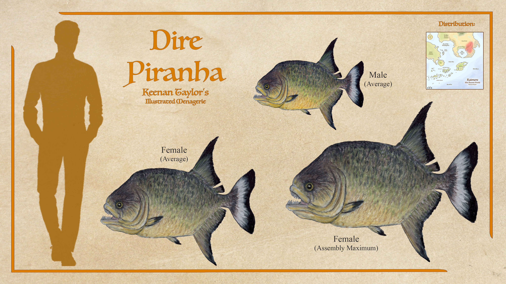
The dire piranha is among the most notorious inhabitants of the Seridic Wetlands. Its ancestry is generally traced to the enormous Megapiranha of Miocene South America, a fish reaching approximately seventy centimetres that was introduced during the harvest six million years ago. Whether the modern dire piranha descended directly from this giant or independently evolved its enormous size from smaller ancestors remains debated. Adults can exceed a metre in length and approach 45 kilograms, with proportions and a derived single row of teeth distinguishing them from their presumed ancestors. Like Earth's red piranhas, dire piranhas possess a reputation considerably more dangerous than their ordinary behaviour warrants. They form large shoals, but their numbers primarily provide protection against predators. Their diet is largely omnivorous and scavenging, and they readily consume fallen fruits, including those of the Seridic abiu. They will attack swimmers under certain circumstances, particularly if an individual is injured or splashing violently nearby. Such attacks can become rapidly fatal, although experienced fishermen frequently report passing through shoals without incident.
The vigil piranha is a much smaller serrasalmid, generally measuring 10 and 15 centimetres and occasionally reaching 18 centimetres. It inhabits quiet backwaters, flooded forest pools, and marginal channels, where it forms schools that ambush small fish and aquatic larvae. Its deep body, robust head, and heavy dentition are adapted for clipping fins and removing soft tissue. Relatively large eyes provide an advantage in the dim, tannin-stained water of flooded forests. Despite its modest size, it represents an important component of the prey base for larger fishes and aquatic predators.
The giant apistogramma is an enlarged cichlid-form fish, with adults likely reaching 20 and 30 centimetres. It occupies root tangles, marginal vegetation, and shallow water containing abundant leaf litter and submerged debris. Its stocky, laterally compressed body, enlarged eyes, and grasping mouth are suited to maneuvering through cluttered environments. It feeds primarily on small crustaceans and insect larvae, functioning as a short-range predator that relies on cover rather than speed.
The sun bicuda is a more specialized pursuit predator. Juveniles measure approximately 20 - 35 centimetres, while adults are considerably larger. Its elongated body, pointed snout, large eyes, and powerful tail allow rapid acceleration through sunlit shallows, open channels, and vegetation margins. Yellow-gold coloration along its fins and flanks provides camouflage and may also function in signaling. Unlike the deeper-bodied basses, the sun bicuda is built for rapid strikes against smaller fishes in relatively open water.
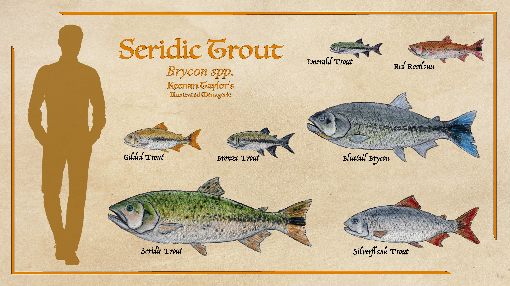
The Seridic trout is the collective name for a diverse radiation of fishes belonging to the genus Brycon. These are among the most important herbivorous and omnivorous fishes in the basin, feeding on aquatic invertebrates, smaller fish, fruits, seeds, and vegetation. Most species consume substantial quantities of fallen fruit and other plant material, making them important seed dispersers. The largest species undergo a significant dietary transition as they mature, becoming predominantly herbivorous and feeding heavily on aquatic plants, particularly the roots and bulbs of Seridic hyacinth.
The gilded trout is among the smallest and most colourful members of the group, seldom exceeding 30 centimetres. It inhabits shallow marshes, flooded forests, and narrow distributary channels, where its deep body allows maneuverability among submerged roots and floating vegetation. Its golden scales and orange fins become especially vivid during breeding. It feeds primarily on seeds, soft fruits, and aquatic insects, dispersing numerous plant species throughout the basin.
The bronze trout occupies faster-flowing rivers and permanent channels. Its narrower body, strongly forked tail, and powerful dorsal musculature allow it to maintain position in stronger currents. Bronze-green coloration provides camouflage among submerged logs and tannin-darkened water. Aquatic insects, crustaceans, and small fish form a greater proportion of its diet than in most other Seridic trout, although fruits and seeds remain important seasonal foods.
The emerald trout is particularly associated with floating vegetation. Its green structural coloration provides camouflage beneath Seridic hyacinth mats, where its compressed body and enlarged pectoral fins allow it to navigate tangled roots. It consumes fruits, flowers, seeds, insects, and substantial quantities of algae growing on submerged plants.
The red rooflouse is among the more carnivorous members of the group. Although omnivorous, it regularly hunts smaller fishes, crustaceans, amphibians, and aquatic insects. Its elongated body and relatively large jaws are suited to predation, while reddish dorsal and caudal fins become especially prominent during breeding. It is strongly territorial and frequently defends submerged logjams from rivals.
The silverflank trout inhabits open lakes, flooded grasslands, and broad river channels. Its reflective scales provide camouflage in open water, while its reddish fins help maintain cohesion within large schools. It consumes seeds, fruits, aquatic plants, insects, mollusks, and occasional fish fry. Its dietary flexibility makes it one of the most widespread members of the radiation.
The Seridic trout is one of the largest members of the genus, frequently exceeding 1.5 metres and weighing more than 60 kilograms. Juveniles are opportunistic omnivores, consuming insects, fruits, seeds, crustaceans, and small fish. Adults undergo a substantial dietary transition, developing enlarged pharyngeal musculature and an elongated digestive tract for processing large quantities of aquatic vegetation. Their principal food consists of Seridic hyacinth roots and bulbs. Feeding individuals frequently uproot entire floating mats, creating open channels used by other aquatic organisms. Their rich, subtly sweet flesh is highly prized by local fishermen and is an important international delicacy.
The bluetail brycon rivals the Seridic trout in size but prefers deeper permanent lakes and broad river channels. Its more elongated body and larger tail support long-distance movement through the waterways. Juveniles begin as generalized omnivores, while adults become predominantly herbivorous, consuming submerged grasses, reeds, and the storage organs of aquatic plants. Its digestive tract is exceptionally long and contains dense microbial communities capable of breaking down cellulose. Compared with the Seridic trout, it consumes proportionally more submerged vegetation and less floating hyacinth, reducing direct competition between the two giants.
Catfishes are an important component of the Seridic fish community, although their representation in Kaimere is historically unusual. Few catfish clades were available for introduction during the stable Tyrant Dynasty, as many familiar groups had not yet evolved. Following the Dynastic Extinction and the subsequent harvesting spike, South American catfishes rapidly established themselves across the Known World.
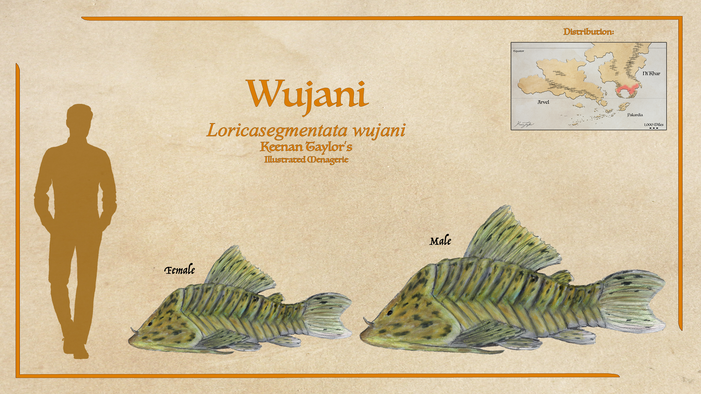
The wujani is an older and particularly unusual catfish lineage native to the Crescent. It is largest and most abundant in the Seridic Wetlands. Its reinforced armor and heavily keratinized head give it an appearance reminiscent of extinct placoderms. Despite its formidable protection, it is a relatively peaceful bottom feeder, using its mouth to suction-feed on small fish, worms, and crustaceans. It is primarily nocturnal, and its armor protects it from most predators, although crocodilians and ba'khar can kill even large adults. Reproduction is closely tied to seasonal flooding. During the third month of the wet season, females move into shallow floodplains to feed and build up reserves before returning to deeper basins. They lay their eggs as the rains arrive, after which the larger males guard the eggs and fry for their first months of life.
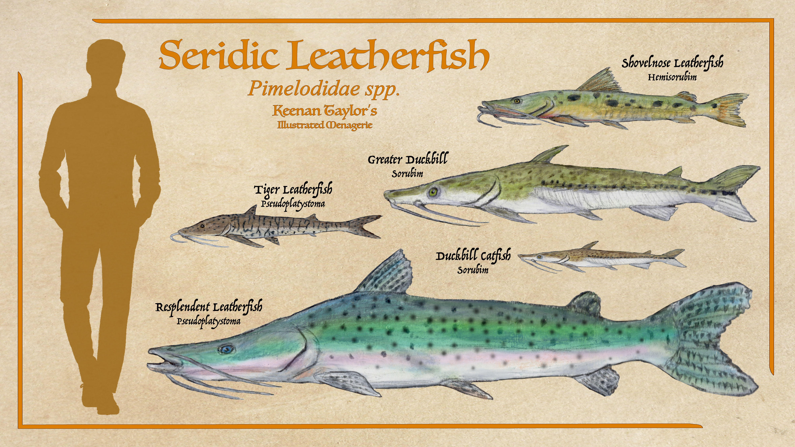
The shoaan, meaning leatherfish in Sishewa, constitute a particularly diverse clade of catfishes. Approximately forty species have been formally named, although their actual diversity may be considerably greater because many inhabit poorly surveyed parts of the wetlands. They are generalist bottom feeders and important scavengers, consuming organic debris, invertebrates, fish, and carrion. Their abundance makes them a major food resource for both Kaimerans and predators, particularly ba'khar. Smaller species provide food for young predators, while large species such as the resplendent leatherfish can exceed three metres, with unverified reports approaching five.
The shovelnose leatherfish is among the most common and lightly built species. Its elongated body and flattened, wedge-shaped snout allow it to probe mud, leaf litter, and submerged roots for food. It feeds primarily on aquatic larvae, crustaceans, worms, and other small invertebrates, although fish fry and carrion are also consumed. It is particularly abundant in seasonal floodplains, where it exploits the sudden increase in invertebrate availability following inundation.
The duckbill catfish is a smaller, streamlined leatherfish distinguished by its long, flattened snout. This structure is adapted for sweeping through submerged vegetation and across open mud flats. It consumes worms, tiny crustaceans, insect larvae, detritus, and plant fragments. It is especially common in quiet side channels, where individuals move through soft-bottom habitats in loose groups.
The greater duckbill catfish is a larger and more robust relative that inhabits deeper distributary channels. It retains the characteristic flattened snout but possesses a thicker skull, stronger jaws, and more powerful fins. Although still primarily a bottom feeder, it consumes larger prey, including small fish, tadpoles, crustaceans, and carrion. Its size allows it to dominate productive feeding grounds and displace smaller benthic species.
The tiger leatherfish is a more distinctly predatory member of the group. Its dark bands and broken spotting provide camouflage among submerged vegetation and shaded waterways. It possesses a larger mouth, elongated barbels, and a muscular body suited to sudden ambushes. Primarily piscivorous, it hunts small and medium-sized fishes, although frogs, crustaceans, aquatic insects, and carrion are also taken. It is an important mid-sized predator, particularly of juvenile brycons.
The resplendent leatherfish is the giant of the group and one of the most imposing bottom-dwelling predators in the wetlands. Adults exceed three metres, with unverified reports of considerably larger specimens. Its massive head, cavernous mouth, thick body, and powerful tail are adapted for overpowering large prey rather than sustained pursuit. Long barbels detect food in murky water, while its thick skin displays an iridescent green-blue sheen. It consumes fish, crustaceans, amphibians, carrion, and occasionally young animals from larger wetland species. Its scavenging activities are particularly important in deep channels and stagnant basins, where it helps remove large carcasses and recycle nutrients.

Peacock bass of the genus Cichla are among the most successful and abundant predatory fishes in the Seridic Wetlands. At least a dozen species are recognized within the basin, occupying habitats ranging from shallow marshes to deep lakes and permanent river channels. They are highly generalized predators, consuming almost any small animal they can overpower. Their adaptability makes them exceptionally successful when introduced elsewhere, where their aggressive predation and competition can drive native subtropical and temperate fishes toward endangerment or regional extinction. Their flesh is white, sweet, and relatively low in oil, with few inconvenient bones. Consequently, they are highly valued as food by both local communities and foreign visitors. Their powerful, aggressive resistance to capture also makes them popular sport fish, particularly among foreign anglers who sometimes introduce them into new waterways for the challenge they provide. They are equally important to the local predator community. Ba'khar rely on them throughout their lives, consuming small parr during their early development and larger bass as adults.
The greater peacock bass is among the largest members of the group. Its deep body, heavy head, broad mouth, and powerful tail allow it to overpower substantial prey. It consumes fish, aquatic invertebrates, frogs, and juvenile reptiles, and is among the most aggressive species when introduced into new habitats.
The whitefin peacock bass is more gracile, with a laterally compressed body suited to maneuvering through submerged roots and floating vegetation. Its pale, translucent fins contrast with its olive-silver body and reddish eyes. It prefers moderately sized fish, crustaceans, and frogs, generally hunting through ambush rather than prolonged pursuit.
The redeye peacock bass is smaller and more specialized. Its lean body, narrow head, and conspicuous red eyes suit it to low-light hunting in shaded channels and shallow tributaries. It feeds on smaller fish, insects, aquatic larvae, and tiny amphibians, relying on speed and maneuverability rather than size.
The common peacock bass is the most widespread and generalized species. Its mottled green-and-gold body, dark lateral blotches, and circular markings near the tail provide camouflage in turbid water. It consumes fish, crustaceans, aquatic insects, and tadpoles, and tolerates a wide range of water conditions.
The turquoise bass is a smaller, brightly coloured species with vivid blue-green coloration across its back and upper flanks. Its compact body and delicate jawline are suited to hunting smaller fish, aquatic insects, and fry among dense vegetation. It frequently uses short bursts from cover to capture prey.
The mud bass is the most cryptic and bottom-associated member of the group. Its short, stocky body and dark brown, charcoal, and olive coloration blend into muddy backwaters and shadowed banks. It hunts by detecting movement and vibration in turbid water, consuming small fish, worms, and invertebrates.
The giant bass is the largest and most heavily built member of the radiation. Its massive head, deep body, and powerful tail allow it to overpower large fish, including other peacock bass and juvenile brycons. Amphibians, reptiles, small birds, and carrion are also consumed. In some habitats, it functions as one of the dominant fish predators and is among the most formidable catches available to fishermen.
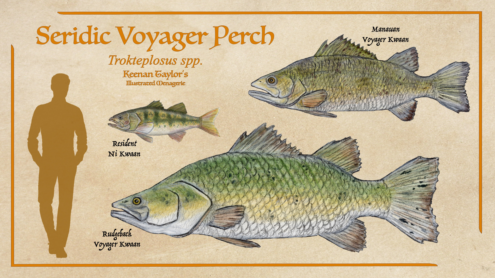
Voyager perch of the genus Trokteplosus are a Kaimeran endemic group with a complicated evolutionary history. They are thought to be either descendants of late nile perch or members of a closely related sister clade. Similar fishes have existed in Kaimere since the Late Cretaceous, although another possibility is that the group descends from lates-like fishes introduced during the Oligocene. Historically, these fishes were relatively small freshwater predators. Following the Dynastic Extinction, however, some populations began exploiting marine environments for part of their lives, evolving a migratory life history comparable to that of salmon. Despite spending much of their lives at sea, they must return to freshwater to reproduce.
The resident ni kwaan is the least specialized member of the group. It remains in inland freshwater systems and does not undertake extensive oceanic migrations. Consequently, it is smaller and more lightly built than the migratory forms, with a slender body, shorter head, and relatively modest tail. Its olive-gold coloration provides camouflage along weedy river margins and in backwaters. It feeds on small fish, aquatic insects, and crustaceans, with reproduction tied to local water levels rather than large-scale spawning migrations.
The manauan voyager kwaan is a more strongly migratory form. It possesses a larger, more robust body, deeper chest, and powerful tail suited to sustained swimming through rivers and coastal waters. Its coarse scales tolerate changing salinities, while its diet includes small fish, crustaceans, aquatic insects, and larger prey when available. It represents an intermediate form between the sedentary freshwater populations and the enormous migratory ridgebacks.
The ridgeback voyager kwaan is the most imposing member of the group and is closely associated with the great Seridic spawning migrations. Mature individuals commonly reach two to three metres, while exceptionally large returning males can exceed four metres. Its deep, heavily muscled body, powerful tail, and prominent dorsal ridge are adaptations for long-distance travel and repeated upstream movement. Large adults may carry scars and damaged fins from previous migrations. Between five and fifteen million ridgeback voyagers migrate upstream through the Hso and Jinyae rivers during the breeding season. The two major populations are associated with these separate river systems, although some interchange occurs. The fish travel hundreds of miles inland toward highland lakes, where cooler water provides suitable conditions for egg development. Their migrations can extend over a thousand miles when their oceanic feeding grounds are included. The timing of these migrations is closely tied to seasonal storms and rising river levels. Early arrivals gain a considerable reproductive advantage, encouraging individuals to begin their journey as soon as conditions permit. During the flood season, the migrating fish spread across enormous shallow floodplains, sometimes swimming in water only one to three metres deep. Their great numbers and the exhaustion accumulated during their journey make them particularly vulnerable to predators. Crocodilians gather along the migration routes, while jugashen and kurajaku exploit the abundance of weakened fish. The most notable predators, however, are the fish-specialized theropods alar and ba'khar. Many are males that travel to the migration routes for feeding opportunities, although some females establish territories nearby so that they can exploit the fish runs while their young hatch. The migration is also physically demanding for the fish themselves. Individuals must navigate strong currents, shallow floodplains, and beaver dams that obstruct access to highland lakes. Some leap over the dams, while others break through them or become exhausted before reaching the spawning grounds. Stragglers sometimes reproduce in the beaver lakes themselves. Most ridgebacks first arrive at the spawning grounds at approximately seven to eight years of age. Their size varies considerably according to feeding success, with some individuals reaching two to three metres while others of the same age are only half as long. A proportion survive spawning and return to the ocean, eventually growing into enormous individuals. These returning giants are usually males, as females rarely survive the reproductive process. Some reach four metres or more and are among the largest freshwater fish encountered in the Known World.

The crocodile gar is an adaptable predator and familiar resident of the Seridic Wetlands. Its ancestors may have arrived during the Oligocene harvest or through a later North American introduction, although the slow evolutionary rates of gars make its precise history difficult to establish. Most individuals remain below nine feet, but exceptional specimens exceed fifteen feet. Its powerful jaws contain teeth that can approach the length of a human hand. Despite its appearance, it generally avoids people and feeds primarily on smaller fish, occasionally taking aquatic mammals or birds. It rarely attacks prey exceeding approximately fifty pounds. Children are advised to avoid swimming near large individuals, although the species is not considered among the wetland's most dangerous animals. Crocodile gar are sometimes caught as game fish, and although their flesh is not particularly prized, a large specimen can provide substantial food for a village.
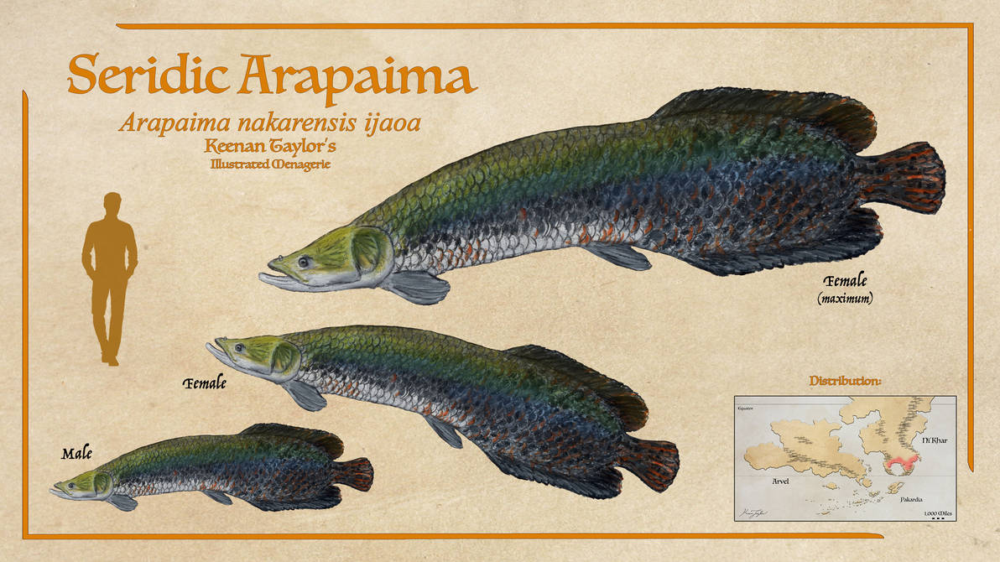
The Seridic arapaima is among the largest freshwater fishes in the basin. Its ancestor arrived from South America during the harvest six million years ago. Earth's arapaima can exceed ten feet, with historical populations potentially reaching considerably greater sizes. The Seridic species, however, inhabits a more productive environment and faces relatively little fishing pressure capable of reducing its largest individuals. Adults regularly exceed fifteen feet, while the largest specimens in deep lakes may reach approximately twenty-three feet, or seven metres. These enormous, heavily scaled predators generally do not target people, but fishermen attempting to harpoon them have occasionally been killed. Local legends describe particularly large lake-dwelling individuals overturning canoes and consuming their occupants, a possibility that cannot be entirely dismissed given the size of the largest animals.
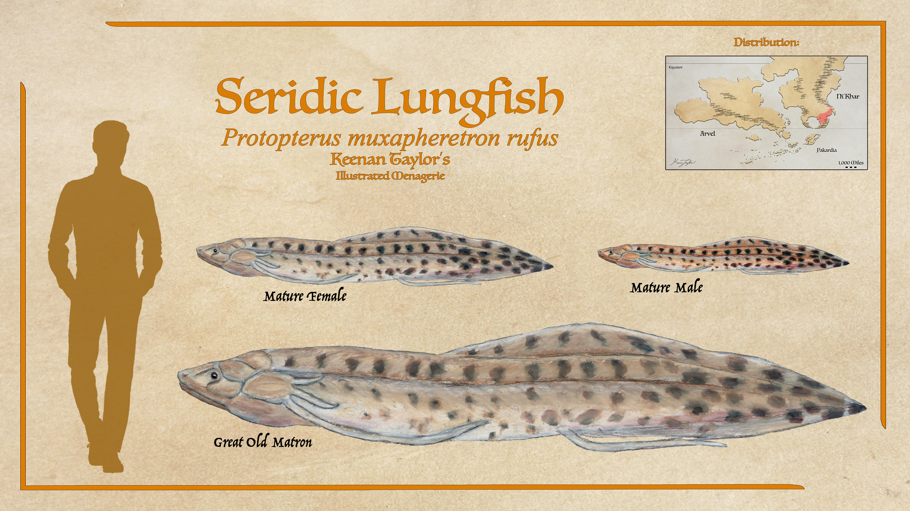
The Seridic lungfish is either the same species as, or a close relative of, the Houze lungfish. Like its prairie relatives, it survives dry periods by forming underground mucus cocoons connected to the surface by breathing tubes. However, the Seridic population generally remains dormant for only months rather than years. Its comparatively short periods of dormancy allow faster growth and more frequent reproduction. Individuals typically reach maturity in approximately twelve years and rarely survive beyond their early thirties, although females may live into their sixties. Older females, known locally as great old matrons, rarely enter dormancy. Instead, they remain in deep basins during the dry season, feeding on fish concentrated by receding water. As the rains begin to decline, they mate with multiple males and deposit egg sacs that are guarded and incubated by the males in their cocoons until the next rains. Younger females generally enter dormancy during dry periods but increasingly adopt the behaviour of older matrons after reaching maturity. Although the differences in lifespan have prompted some Assembly naturalists to propose a distinct species designation, most consider them environmental adaptations rather than inherited differences. Captive specimens from both populations, provided with abundant food and consistent conditions, grow rapidly and rarely form cocoons.
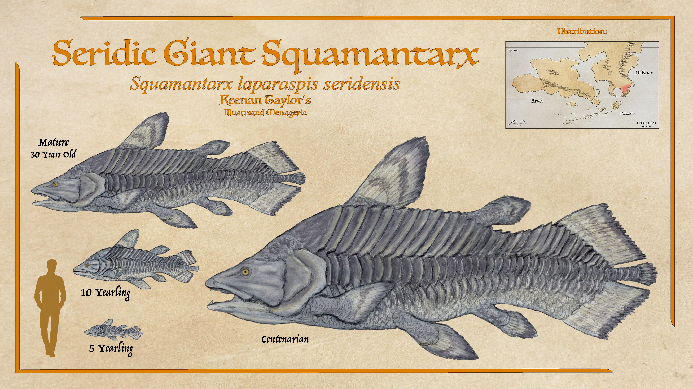
The giant squamantarx is an enormous armored freshwater coelacanth. The genus occurs throughout the Known World, and its ancestors are believed to have arrived during one of the Mesozoic harvests. Most species measure between two and four metres, but the Seridic form is considerably larger. Adults generally reach five to six metres by approximately thirty years of age, with females tending to be larger than males. Males typically stop growing at skeletal maturity, whereas females may continue growing for decades. Exceptional females approach nine metres and are estimated to exceed a century in age. Seridic accounts describe even larger individuals capable of swallowing entire fishing boats, although such reports remain unverified. Females are particularly important to the species' population dynamics because of their extraordinary reproductive output. Unlike modern Earth coelacanths, squamantarx produce large numbers of eggs and have relatively short gestation periods, generally lasting two to five years. Eggs hatch internally, and the young are born shortly afterward. Reproductive output increases with body size. Individuals around three metres long may produce sacs containing 30–50 eggs, while fully mature females can carry more than a hundred offspring. The largest centenarian females may produce over a thousand. This unusually high reproductive capacity, combined with faster metabolism, is believed to contribute significantly to the species' success. The mineralized scales that give the genus its name provide substantial protection against predators. They slide against one another as the fish flexes laterally, producing a cutting action. In juveniles, the scales are particularly hard and can damage the teeth or beaks of attacking predators. Adult scales are less rigid but can still pinch and cut during rapid turns. These defenses, together with their enormous size, make mature squamantarx difficult to attack. They are rarely targeted by fishermen because their armor makes harpooning difficult and their flesh is not particularly desirable.
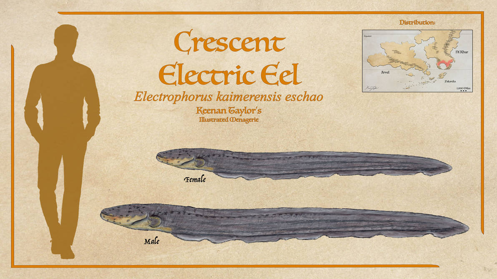
The Crescent electric eel is one of numerous electric eel species found throughout the Known World. The Seridic population is both the largest and most abundant. These fish inhabit warm, slow-moving waters and are particularly common in sheltered pools and vegetated channels. Their preference for warmer conditions limits their distribution in colder waterways, including the beaver lakes that would otherwise provide suitable habitat for some of the region's larger predators. Electric discharges are used for prey capture, defense, and navigation in dark or turbid water. Their ability to generate powerful electrical shocks makes them particularly dangerous to animals entering the water, especially in confined pools.
Amphibian Community
The amphibian community of the Seridic Wetlands occupies an important position between the region's aquatic, terrestrial, and arboreal ecosystems. Although less conspicuous than the enormous fish, reptiles, and semiaquatic megafauna inhabiting the basin, amphibians are exceptionally well integrated into its ecological structure. They exploit habitats ranging from submerged vegetation and blackwater channels to saturated leaf litter, flooded forest floors, and the foliage of trees overhanging permanent water. Their ecological roles are similarly varied, encompassing predation on aquatic and terrestrial invertebrates, consumption of smaller vertebrates, and the provision of an abundant food resource for larger predators.
The community is composed of several distinct evolutionary lineages, including relatively familiar frog-like amphibians, highly specialized caecilians, and the much larger teratobatrakids, commonly known as monstrous frogs. These groups differ considerably in anatomy, reproduction, behavior, and habitat preference. Their coexistence reflects the extraordinary environmental diversity of the wetlands, where permanent aquatic habitats occur alongside seasonally flooded forests and terrestrial environments that remain humid throughout much of the year.
The seasonal hydrology of the basin is particularly important to amphibian abundance and distribution. During the wet season, expanding floodplains and temporary pools create extensive breeding opportunities for smaller amphibians. Flooded forests and slow-moving backwaters become especially productive, allowing populations to reproduce and disperse across areas that may be inaccessible during the dry months. Eggs, larvae, and juveniles consequently become an important seasonal food source for fish, aquatic invertebrates, and terrestrial predators. As water levels decline, many smaller species retreat into moist refugia, burrow into saturated substrates, or reduce their activity to conserve moisture and energy. Larger amphibians, particularly the teratobatrakid zi shun, respond differently. The contraction of waterways concentrates prey into progressively smaller bodies of water, creating favorable conditions for large ambush predators.
The common glass frog is a small arboreal amphibian, generally measuring only 2.5 and 4 centimeters in body length. It inhabits wet leaves, shrubs, and low branches above standing water, particularly along ponds and slow-moving streams. Females deposit their eggs on vegetation overhanging the water, allowing newly hatched young to enter the aquatic environment below. The species possesses long, delicate limbs and enlarged toe discs suited to climbing across wet vegetation. Its most distinctive feature is its translucent ventral skin, through which some of its internal organs remain visible. This unusual coloration likely contributes to camouflage beneath the green, backlit canopy. Its small size and delicate build make it vulnerable to numerous nocturnal predators.
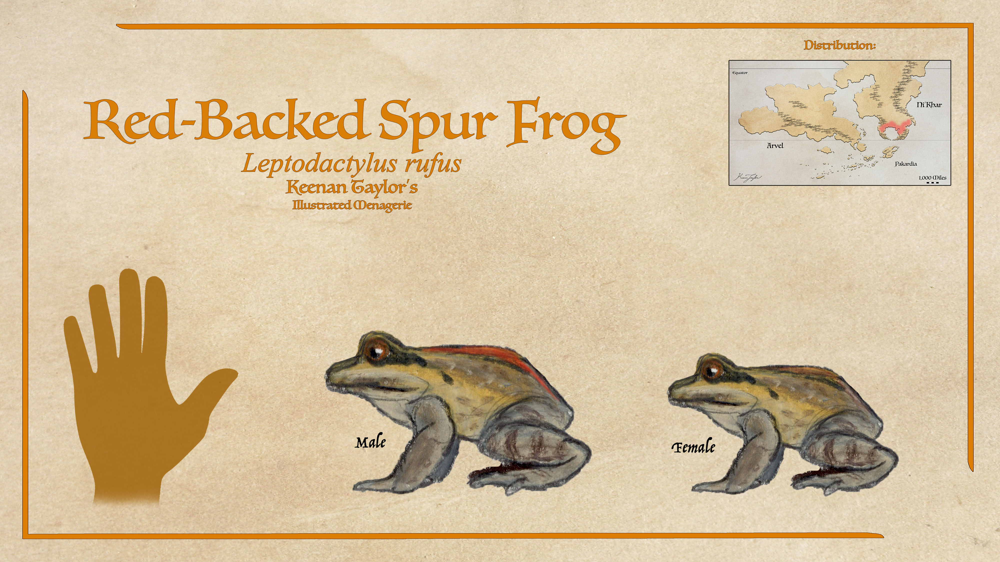
The red-backed spur frog is a larger frog distributed throughout the Crescent Peninsula. Although most abundant in the jungles north of the Seridic Wetlands, it is also common within the region itself, particularly in woody swamps. Its name derives from the dark red stripe present in males and the prominent spurs on its thumbs and chest. Like several other Seridic frogs, it is believed to descend from South American lineages introduced during the Miocene, with possible affinities to species such as the mountain chicken and smoky jungle frog. Its skin contains defensive toxins, although these are not sufficiently potent to kill large predators. Even a juvenile ba'khar weighing approximately 50 kilograms can survive ingesting one, but the toxins are generally sufficient to discourage repeated predation.
The greater cypress worm is an elongated, aquatic or semiaquatic amphibian measuring approximately 40 to 70 centimeters in length. Its cylindrical body is slender, smooth, and highly flexible, with little externally visible segmentation. It inhabits deep leaf litter, blackwater swamps, tangled tree roots, and soft-bottomed channels, where its body allows it to move through confined spaces largely inaccessible to larger animals. Its secretive habits make it less frequently observed than the region's frogs, but it is a familiar component of the wetland's submerged and soil-dwelling fauna.
The most unusual amphibians of the Seridic Wetlands belong to the teratobatrakids, a lineage of ancient tetrapods commonly called monstrous frogs. Although their general appearance resembles that of true frogs, differences in their anatomy, gait, and behavior make their separate evolutionary origins apparent. The group appears to have originated in Pakardia and subsequently diversified into predominantly aquatic predators. Teratobatrakids belong to the broader assemblage of animals traditionally called carbosuchians. Their precise placement within the tetrapod family tree remains debated. Cranial and palatal characteristics have led some studies to place them near the earliest temnospondyls, while others identify them as more closely related to colosteids and baphetids. Much of this disagreement concerns the definition of Temnospondyli itself, rather than the underlying evolutionary relationships. Many Assembly naturalists continue to describe carbosuchians as labyrinthodont temnospondyls, although some classifications exclude them from the group and recognize them as a distinct clade. The term labyrinthodont is itself no longer considered a formal exclusive clade, but rather a historical designation for a grade of large-bodied tetrapodomorphs with broadly crocodilian lifestyles. Unlike many modern amphibians, carbosuchians do not undergo a conventional tadpole or larval stage. They are considered ovoviviparous, giving birth to relatively well-developed and precocial young. This reproductive strategy is consistent with their largely aquatic predatory lifestyle and distinguishes them from the frogs and other amphibians occupying the same wetlands. Teratobatrakids are primarily aquatic and possess the ability to breathe both underwater and in the open air. On land, they move by crawling rather than hopping. Their powerful hindlimbs are instead adapted for sudden bursts of acceleration, allowing them to launch rapidly toward prey or escape approaching threats. After lying in ambush, an individual can reportedly accelerate to approximately eight miles per hour over a short distance. Although this speed is modest by the standards of terrestrial predators, the suddenness of the movement makes it highly effective in confined aquatic environments.
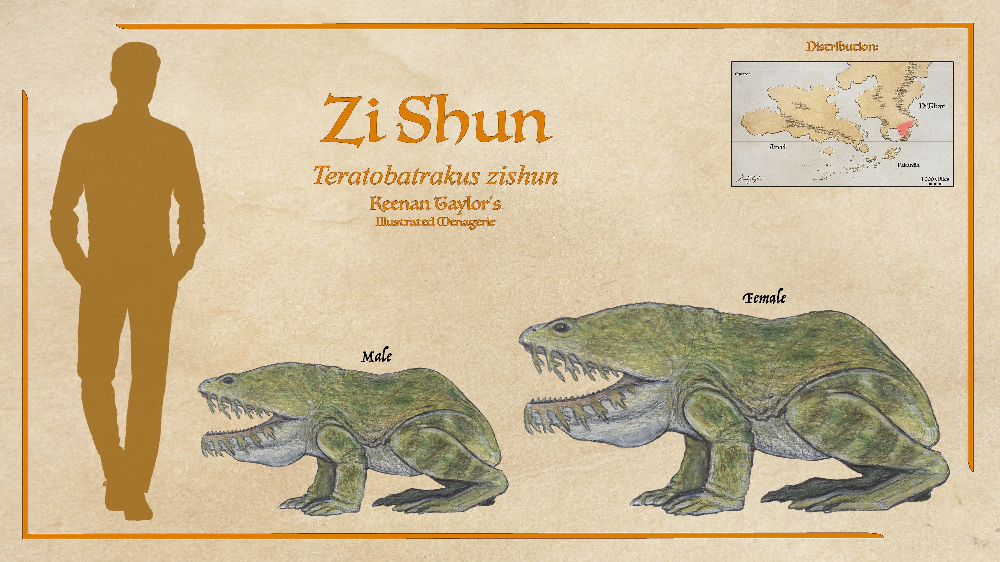
The most prominent local representative is the zi shun, an enormous predator capable of reaching exceptional sizes. Males may attain approximately 90 kilograms, while females are considerably larger and less active. The largest known female skeleton, held in the archives of the Great Library of Bolondakoi, suggests a mass approaching 200 kilograms. Seridic accounts describe individuals substantially larger still, particularly in the deeper swamps, although these reports remain unverified owing to limited Assembly surveys. The zi shun is an active ambush predator, taking fish and other aquatic animals as well as terrestrial prey approaching the water. Its size makes it one of the more formidable inhabitants of the wetlands, and local accounts occasionally describe attacks on humans. Such incidents are believed to involve children more frequently than adults. Unlike its longer-bodied relatives, the zi shun is poorly equipped to dismember large prey through lateral shaking. Instead, it may bury an oversized kill and return several weeks later, once decomposition has made the carcass easier to consume. This behavior, alongside its hunting strategies, has led some naturalists to suggest that teratobatrakids possess greater behavioral complexity than their superficial resemblance to frogs might suggest.
Reptile Community
The reptile community of the Seridic Wetlands is among the most diverse and ecologically complex in the Known World. It encompasses an unusually broad range of evolutionary lineages, including lizards, snakes, turtles, crocodilians, and even aquatic mosasaurs that regularly enter freshwater environments. These groups occupy nearly every available habitat within the basin, from the submerged roots and floating vegetation of the marshes to the upper branches of swamp forests, the muddy margins of river channels, and the brackish estuaries along the Doret Sea. Their ecological roles are equally varied. Some are specialized predators of fish and invertebrates, others are terrestrial or arboreal hunters, while the largest forms are among the principal apex predators of the entire wetland ecosystem.
The abundance of aquatic prey and the extensive availability of shallow-water habitats have been particularly important in shaping the region's reptile fauna. Fish, amphibians, crustaceans, mollusks, and smaller vertebrates provide a dependable food supply for numerous reptilian predators, allowing several lineages to attain substantial sizes. The wetlands also support an extraordinary diversity of large herbivorous and omnivorous animals, creating additional opportunities for predators capable of exploiting prey much larger than themselves. Crocodilians, giant snakes, and large predatory lizards consequently coexist with smaller insectivorous and molluscivorous species, each occupying different ecological niches.
The modern community is also a product of several distinct periods of biological introduction. Some lineages have been established in the region since the Anchored Period, while others arrived during the major harvests and subsequent ecological turnovers. Still others appear to have reached the wetlands through natural dispersal from neighboring regions, particularly Kairul. These successive arrivals have produced an unusually mixed assemblage in which ancient Kaimeran lineages coexist with relatively recent immigrants and descendants of Earth reptiles. Competition has occasionally altered established ecological relationships, particularly among the region's large lizards and crocodilians, but the abundance of resources has generally allowed a substantial diversity of species to persist.
The lizard community occupies an extensive range of habitats throughout the Seridic Wetlands. Species occur in the swamp forests, open marshes, reed beds, floodplain grasslands, and along the margins of rivers and lakes. Some are specialized arboreal hunters, while others forage across the ground, climb among submerged roots, or pursue prey in shallow water. The largest species are formidable predators in their own right, occupying ecological positions comparable to those of medium-sized mammals and, in some cases, substantially larger terrestrial carnivores.
One of the most distinctive inhabitants is the mahogany gecko, a small arboreal lizard measuring approximately 15 to 20 centimeters in total length, including the tail. It is particularly associated with swamp forests and mangrove-edge woodlands, where it lives along tree trunks, buttresses, and low branches. Its flattened body and expanded toe pads allow it to cling securely to wet bark and irregular wooden surfaces, while its long tail provides balance as it moves through the branches. The head is narrow and triangular, with large ocular surfaces adapted to crepuscular and nocturnal activity. Its coloration is generally cryptic, blending with the bark and damp wood of the mahogany trees on which it is most frequently encountered. The mahogany gecko feeds primarily on insects and small arthropods, taking advantage of the extraordinary abundance of invertebrates associated with the humid forest canopy. Its small size and arboreal habits make it vulnerable to a variety of predators, although it possesses several effective escape behaviors. When disturbed, it may drop from the canopy into lower vegetation or freeze against a tree trunk, relying on its camouflage to avoid detection. It is an important component of the forest's smaller vertebrate community, transferring energy from the abundant arthropod populations to birds, snakes, and other climbing predators.
Other arboreal lizards include anoles, skinks, and smaller agamids introduced during different harvests. These groups occupy a variety of microhabitats defined by light availability, vegetation structure, and moisture. Some are most abundant in the sunlit canopy and along exposed branches, while others remain in the dimmer understory or among the dense root systems of swamp trees. Their diets generally consist of insects and other small invertebrates, although some species also consume fruit, seeds, and other plant material. The diversity of these smaller lizards reflects the considerable structural complexity of the swamp forests, where even relatively small differences in vegetation and exposure can support distinct ecological communities.
Fossorial lizards are less conspicuous but also form an important component of the reptile fauna. Amphisbaenians inhabit saturated soils, accumulated leaf litter, and the detritus layers beneath the forest floor. Their elongated bodies and reduced external limbs allow them to move through loose substrates in search of invertebrates and small vertebrates. Although they are rarely encountered at the surface, they contribute to the turnover of organic material and the movement of nutrients through the soil. Seasonal flooding can displace them from their burrows, exposing them to fish, birds, and larger reptiles. Their occasional appearance in open water and along exposed banks consequently provides a temporary food source for animals that would otherwise have limited access to fossorial prey.
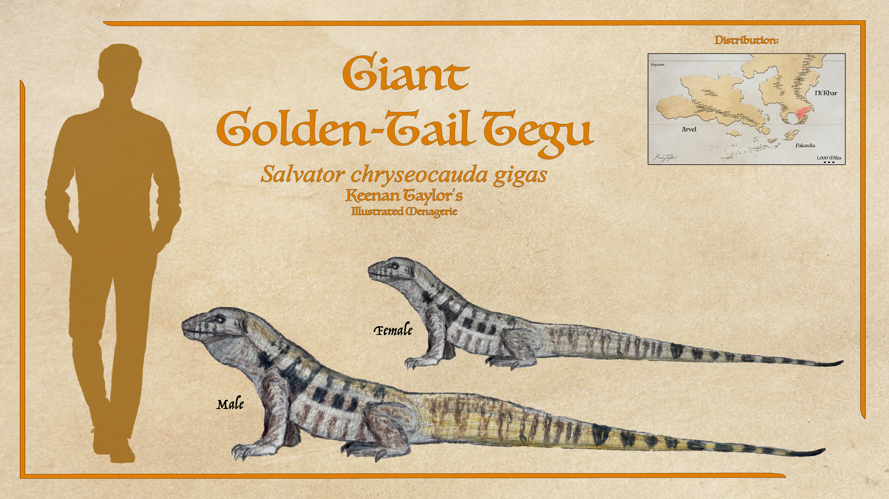
The dominant large lizard of the Seridic Wetlands is the golden-tail tegu, a giant predatory species belonging to a radiation found throughout Ni'Khar. The Seridic subspecies is by far the largest representative, with adult males averaging approximately 2.5 metres in total length and exceptional individuals approaching three metres. This makes it roughly twice the length of the largest Earth tegus. It is a powerful terrestrial and semiaquatic predator, capable of exploiting a wide variety of prey across the wetland environment. Although it can swim competently and regularly forages along waterways, it is not as specialized for aquatic movement as the region's monitor lizards. Tegus have been among the dominant large lizards of the Seridic Wetlands throughout the Anchored Period. Historically, the golden-tail tegu shared this position with the Ni'Khari snubnose swamp monitor, with the two groups occupying sufficiently different ecological niches to coexist with relatively little direct competition. Their relationship has become more complicated following the arrival of the pibald water monitor, which has proven exceptionally successful in the region. The tegu remains a formidable predator and is generally dominant over the water monitor in direct physical confrontations, but its established position is increasingly challenged by the latter's ecological versatility.

The Ni'Khari swamp monitor is one of the largest representatives of the snubnose monitor radiation, excluding the exceptionally oversized moduru. The largest males can approach three metres in length. Snubnose monitors are an endemic Kaimeran group of lizards whose members include terrestrial, semiaquatic, and marine species. Their aquatic specializations appear to have originated from burrowing ancestors, whose adaptations for moving through confined substrates may have provided an evolutionary pathway toward exploiting submerged environments. The largest and most recognizable members of the group are now associated with wetlands and the shallow inland sea. The Ni'Khari swamp monitor inhabits marshes, flood forests, sluggish channels, and dense reed beds throughout Ni'Khar. It moves with considerable stealth through submerged roots and along muddy banks, where its heavier body and powerful forequarters allow it to maneuver through vegetation while wrestling prey. Compared with the more aquatic reef forms, its body is particularly robust anteriorly, with a broad torso, massive skull, and strong limbs. Its long tail remains an important swimming organ, but its overall anatomy is more suited to ambush hunting within confined wetland environments than to sustained movement through open water. The species has been established in the Seridic Wetlands since the Anchored Period and remains one of the region's principal large predatory lizards.
The pibald water monitor is a considerably more recent addition. The name is a misspelling of piebald that became established in Assembly literature and has remained in common usage. The species was harvested approximately 1.5 million years ago during the major ecological turnover and has since become extraordinarily abundant throughout the Seridic Wetlands. Its success is largely attributable to its versatility. It is an accomplished swimmer, a competent terrestrial hunter, and a more capable climber than either the golden-tail tegu or the native snubnose swamp monitor. The pibald water monitor is not necessarily superior to either of the larger established lizards in any single ecological specialization. The tegu remains a more formidable terrestrial predator, while the snubnose monitor is better adapted to certain aquatic environments. However, the water monitor performs well in both settings and can exploit arboreal habitats that are less accessible to its larger competitors. This ability to occupy several ecological niches has allowed it to become the most numerous of the three large lizards. Although subordinate to both native giants in direct confrontations, it has effectively inserted itself into the ecological relationship that previously existed between the tegu and the snubnose monitor. Its population dominance is therefore a consequence not of overwhelming physical superiority, but of its ability to exploit a broader range of available resources.
The Seridic sailfin lizard represents another distinctive component of the region's lizard fauna. It belongs to a Kaimerean radiation of semiaquatic agamids descended from sailfin lizards harvested from Southeast Asia approximately 1.5 million years ago. Compared with its Earth relatives, it is considerably heavier, with a deeper chest and more substantial musculature. Its limbs are shorter but more powerful, providing effective propulsion in water while retaining sufficient strength for climbing. The tail accounts for nearly 70 percent of its total body length and is considerably deeper vertically than that of modern sailfin lizards. Enlarged neural spines support a broad swimming fin that generates powerful bursts of propulsion underwater. The dorsal sail begins immediately behind the skull and extends onto the proximal portion of the tail. Although such structures are often associated primarily with display in other reptiles, the sail of H. seridicus functions principally as a stabilizer during movement through strong river currents. Its broad head and enlarged jaw musculature are adapted for consuming a varied diet that includes crustaceans, mollusks, fish, amphibians, and fallen fruit. The olive-green coloration, marked by irregular black marbling, provides effective camouflage among algae-covered logs and submerged vegetation. The combination of aquatic competence and climbing ability allows the Seridic sailfin lizard to exploit habitats ranging from flooded forests to exposed riverbanks. Its feeding behavior also places it among the more generalized consumers of the reptile community, with its diet linking aquatic invertebrate and vertebrate populations to the fruit and other organic material entering the waterways from surrounding forests.
Snakes are among the most abundant and diverse reptiles in the Seridic Wetlands. Their success reflects the extraordinary variety of prey available throughout the basin, as well as the presence of numerous distinct habitats that can be exploited by different lineages. Aquatic species hunt fish and amphibians, terrestrial forms pursue rodents and other small vertebrates, and arboreal snakes move through the swamp forests in search of birds, eggs, and climbing animals. Fossorial species occupy the soil and accumulated detritus, while several groups are adapted to the fluctuating water levels and oxygen conditions of the marshes.
The most diverse snake radiation in the Known World is the colubrid subfamily Dorsocarninae, commonly known as ridgeback snakes. As many as eighty species are recognized throughout the Known World alone, making this one of the most successful reptile clades in the region. Their precise origin remains uncertain, although they were among the first animals harvested following the Dynastic Extinction and subsequently diversified into a broad range of ecological niches. Their relatives include garter, keelback, and grass snakes, and their descendants exhibit similarly extensive ecological flexibility. Ridgeback snakes are found in fossorial, arboreal, terrestrial, and semiaquatic environments. Some hunt through leaf litter, others forage in water or among submerged vegetation, and certain lineages have become specialized for life in open grasslands. Most species are nonvenomous and subdue their prey through biting and constriction or by simply overpowering smaller animals. A minority possess rear-mounted fangs and venom capable of killing a Kaimeran, demonstrating that the radiation has also produced more specialized predatory forms.
Kaimeran cobras constitute the most abundant group of highly venomous snakes in the Known World. Although commonly referred to as cobras, they do not belong to the genus Naja and are therefore not technically true cobras. Their ancestry can be traced to a Central Asian harvest approximately twelve million years ago, and the genus has since diversified into a successful radiation of hooded venomous snakes. The arrival of these snakes was associated with the introduction of titanosaurs, and the two groups subsequently developed a particularly unusual example of parallel defensive evolution. Hatchling titans belonging to the genus Kipourotitan possess expandable hoods that can be inflated using air from their diverticula. When threatened, they raise these structures and produce a hiss resembling that of a cobra. Young individuals have also been observed spitting toward approaching predators. Although the expelled material is harmless, the display can deter animals unfamiliar with the deception. The cobras themselves only began to develop venom-spitting behavior following the arrival of Homo erectus. This represents a relatively recent behavioral and anatomical development, comparable in broad evolutionary terms to the independent emergence of spitting adaptations in several Earth cobra lineages. Their venom is capable of causing severe injury, particularly to the eyes, and numerous baboons, coatis, ferrets, common monkeys, and Kaimerans have been blinded by defensive spitting. The behavior provides an effective means of discouraging potential predators without requiring physical contact.
Other reptiles associated with the Central Asian harvest include box turtles and rattlesnakes. Some of these introductions have maintained their identity as distinct species, while many have subsequently integrated into related Kaimerean populations through hybridization. The resulting fauna is consequently not composed entirely of unchanged harvested species, but includes populations whose modern characteristics reflect generations of interbreeding and ecological adaptation.
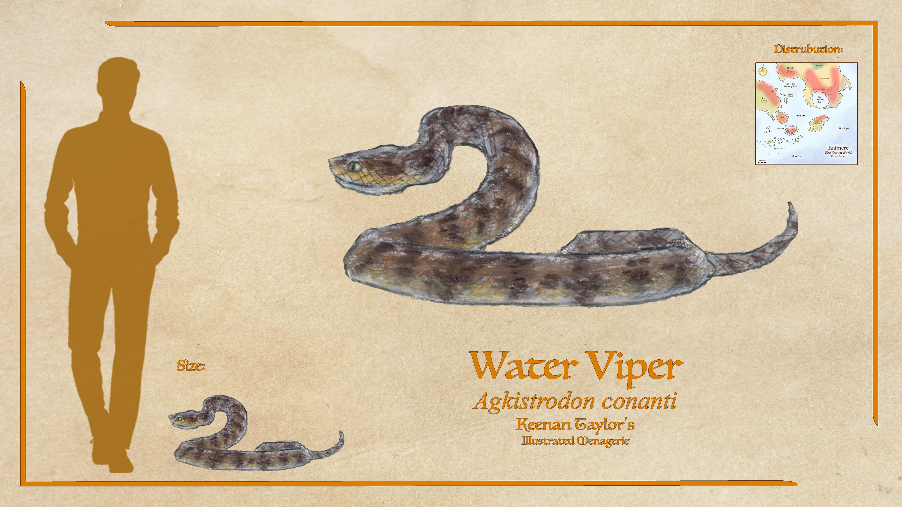
Semiaquatic snakes are particularly diverse in Kaimere, and the Seridic Wetlands supports several species that exploit its rivers, marshes, and flooded forests. Among them is the Florida cottonmouth, or water viper, the only viper known to have established a semiaquatic freshwater niche in the region. It was introduced during the Central Asian harvest approximately twelve million years ago and has since become one of the most common snakes in the Known World. Its range extends through the wetlands of both major continents and into northern Pakardia, where it has established populations alongside the numerous venomous colubrids occupying similar habitats.
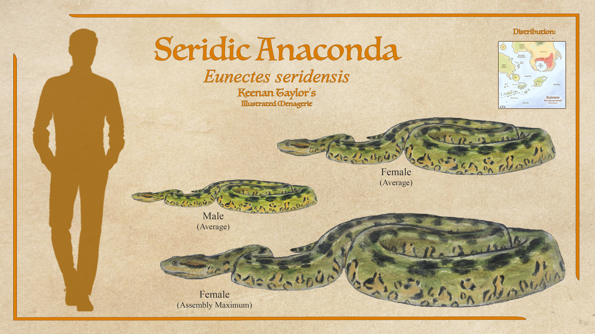
Boid constrictors are another important component of the snake community. The family has been established in Kaimere since the Oligocene harvest, although its members did not attain their largest sizes until after the Dynastic Extinction. Their ability to swallow prey considerably larger than their own heads allowed them to compete with the previously dominant madtsoiid snakes, and they subsequently became established throughout most tropical regions of the planet. The largest snake in the Known World is the Seridic anaconda. It is particularly associated with the deepest and most productive portions of the wetlands, where extensive waterways and abundant aquatic prey provide conditions suitable for exceptional body size. The largest individuals can reach approximately 25 feet in length, while particularly large females may exceed 500 pounds. Its immense size allows it to exploit a broad range of prey, including fish, aquatic reptiles, birds, and mammals that approach the water to drink or forage. Its ability to hunt from submerged positions and move through dense aquatic vegetation makes it especially well suited to the Seridic environment.
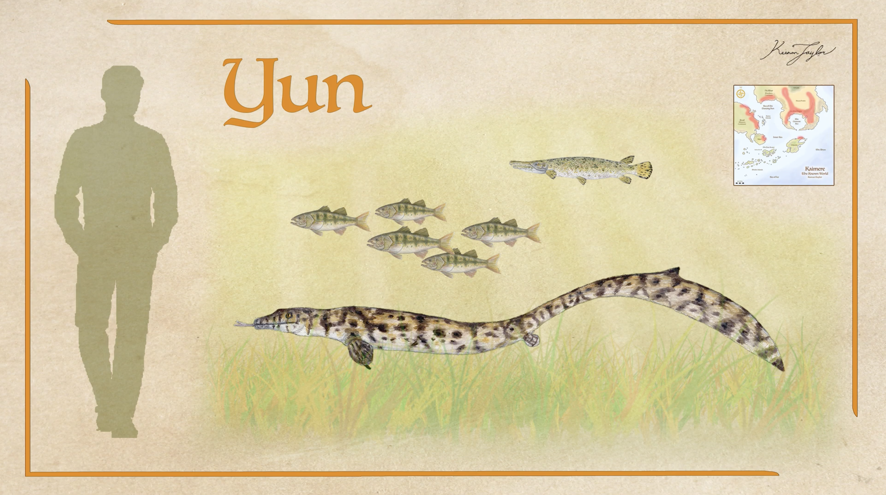
Among the most distinctive reptiles are the sea serpents, a lineage of mosasaurs that have abandoned the open-ocean dominance of their ancestors in favor of complexity—reefs, mangroves, estuaries, and river mouths where maneuverability matters more than raw speed. Their elongated bodies and flexible swimming style allow them to thread through submerged roots and coral structures, hunting in spaces inaccessible to bulkier predators. In these environments, they are not solitary rulers but participants in a crowded field of sharks, marine mammals, and large fish, each exploiting different aspects of the same terrain. The yun represents the most extreme extension of this adaptability. Smaller than many of its relatives (being roughly the size of a sea krait), it trades size for versatility, moving freely between brackish deltas, slow rivers, and even fully freshwater systems deep within the wetlands. Its ability to leave the water briefly is less an evolutionary curiosity than a practical tool, allowing it to bypass barriers, colonize isolated pools, and exploit prey stranded by shifting water levels. In doing so, it occupies a role that blurs the boundary between aquatic reptile and amphibious predator. Where fish dominate the biomass and crocodilians control the largest kills, the yun operates in the margins—hunting smaller vertebrates, scavenging, and occasionally competing with semi-aquatic lizards and amphibians. In earlier ages, when northern basins were more extensive and stable, larger forms may have filled this role more aggressively, but in the present wetlands the yun remains a subtle and persistent presence rather than a dominant force.
Turtles are particularly diverse in the Seridic Wetlands, where permanent water, seasonal floodplains, and abundant aquatic vegetation provide conditions suitable for both aquatic and semiaquatic forms. Their ecological roles range from specialized suction-feeding predators to large herbivores and opportunistic omnivores. Several lineages are descended from South American introductions, while others represent older or more widely distributed reptile groups. Side-necked turtles are especially prominent in the Known World, where they constitute a narrow majority of the recognized turtle diversity, a pattern likely influenced by the substantial contribution of South American harvests to Kaimere's wetland ecosystems.
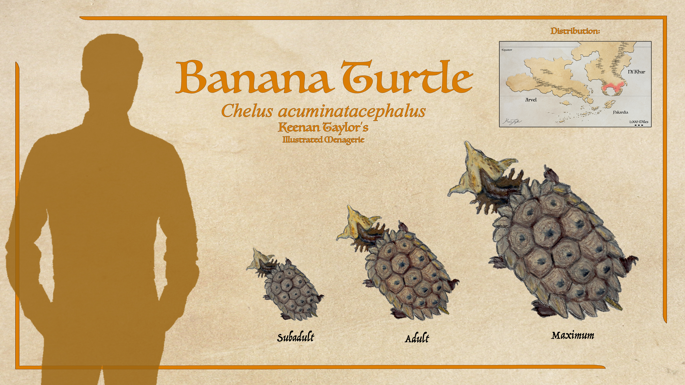
The banana turtle is a close relative of Earth's mata mata and is believed to have been harvested from Miocene South America approximately 6.1 million years ago. Other members of the genus Chelus may have arrived during the earlier mid-Miocene harvest of the same continent, although the precise history of the group remains uncertain. The species is a specialized aquatic predator, employing suction feeding to capture a wide range of small fish and aquatic invertebrates. Its body is extensively covered in flanges and irregular structures that provide excellent camouflage among submerged vegetation, branches, and accumulated debris. For much of the year, its coloration is a relatively subdued ochre, allowing it to blend into the muddy substrates of the wetlands. During the mating season, however, males develop conspicuous bright yellow coloration on the head. This seasonal change is responsible for the common name banana turtle, as the coloration bears a resemblance to a domesticated banana that has passed slightly beyond its ideal stage of consumption. The contrast between its normally cryptic appearance and the vivid coloration of breeding males makes it one of the more recognizable turtles of the marshes.
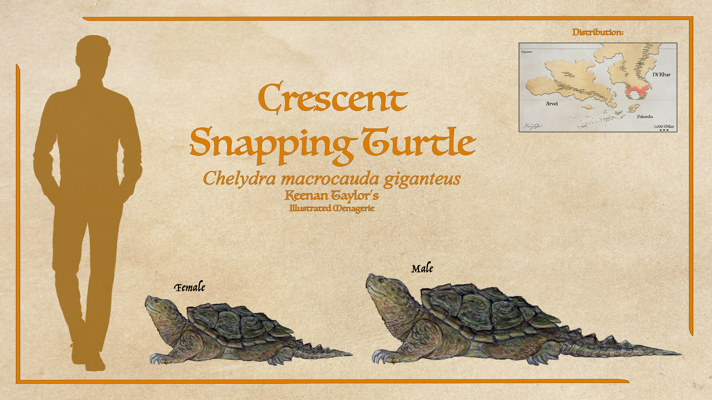
The Crescent snapping turtle is among the most impressive members of the regional turtle community and differs considerably from the more familiar common snapping turtle body plan. It is a large, heavily built freshwater predator specialized for the extensive shallow waters of the Seridic Wetlands and the broader Crescent region. Its size is supported by the extraordinary abundance of aquatic prey and the availability of extensive feeding grounds. The species is strongly sexually dimorphic. Females generally weigh approximately 45–60 pounds, while males typically reach 60–90 pounds, with exceptional individuals potentially exceeding this range. Males are substantially larger and more thick-necked than females, although both sexes are considerably more robust than smaller regional snapping turtles. The shell is broad and deeply ridged, while the head is large and blunt, supported by a thick, highly muscular neck. Its limbs are powerful and adapted for moving through muddy substrates and dense wetland vegetation as well as swimming in open water. The tail is long but proportionally less gracile than that of the Ni'Khari snapping turtle. The Crescent snapping turtle is an opportunistic predator capable of consuming fish, carrion, aquatic reptiles, small mammals, and birds. It will also take prey approaching its own size when circumstances permit. Its heavy armor and powerful bite make it a formidable resident of floodplains, marsh channels, and seasonally open wetlands. The abundance of food in these environments allows it to maintain high population densities, making it one of the most frequently encountered large snapping turtles in the region.
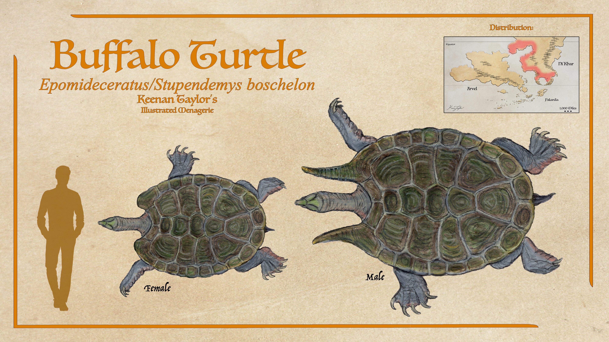
The banana turtle and Crescent snapping turtle are joined by the enormous buffalo turtles, belonging to the closely related genera Epomideceratus and Stupendemys. These are the largest freshwater turtles in Kaimere, and the Seridic Wetlands supports some of their most exceptional populations. The largest males can possess shells exceeding three metres in length when the curled projections, or horns, of the carapace are included. Most populations elsewhere are smaller, with large males generally reaching closer to two metres. The exceptional size of the Seridic population is attributed to the abundance of the habitat and the vast expanses of shallow water available for feeding and reproduction. The carapacial horns are particularly important during mating contests. Males use these structures to hook beneath the shells of rivals and overturn them, providing a means of establishing dominance without relying entirely on biting or direct pushing. The size of the horns and the strength of the males involved make these contests particularly conspicuous events within the wetland environment. Buffalo turtles belong to the side-necked turtles, a group that is relatively restricted on Earth but particularly successful in Kaimere. On Earth, side-necked turtles account for approximately eighty of the roughly 350 recognized turtle species and are confined to the southern hemisphere. In the Known World, however, they represent a narrow majority of turtle diversity. This unusual distribution is likely related to the influence of South American harvests, which introduced numerous lineages particularly well suited to the extensive wetland environments of Kaimere.
Softshell turtles and their relatives also inhabit the Seridic waterways. Their flattened bodies, reduced shell protection, and greater flexibility distinguish them from the more heavily armored turtles of the region. Rather than relying primarily on a protective shell, they emphasize speed, concealment, and rapid movement across soft substrates. Many are active predators of fish and aquatic invertebrates, while others bury themselves in sediment and remain concealed until prey approaches. Their mobility allows them to exploit open channels and muddy lake bottoms where more heavily armored turtles may be less agile.
Smaller side-necked turtles occupy additional niches throughout the floodplain. Some feed extensively on aquatic vegetation, helping regulate the growth of rapidly spreading plants, while others consume fruits, seeds, and other organic material entering the water from surrounding forests. These species move between flooded woodland and open water, contributing to the dispersal of plant material and linking terrestrial and aquatic food webs. Their eggs and juveniles are also heavily preyed upon, making them an important source of food for fish, birds, snakes, and larger reptiles.
Crocodilians are among the most important and ecologically influential reptiles of the Seridic Wetlands. The combination of abundant fish, extensive shallow waterways, and large concentrations of terrestrial herbivores provides conditions suitable for an exceptionally diverse assemblage of large semiaquatic predators. Several species occupy overlapping habitats, although differences in size, feeding behavior, nesting requirements, and preferred prey allow many to coexist. Some are specialized fish hunters, others are formidable ambush predators of large terrestrial animals, and a few have become important agents of physical environmental change through their movements and nesting activities.
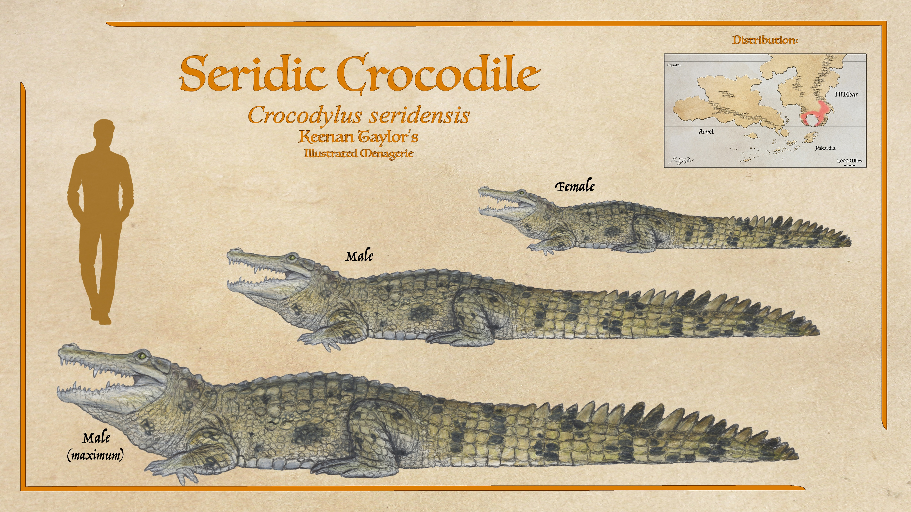
The Seridic crocodile is one of the largest and most dangerous members of the regional crocodilian community. It shares a common ancestor with the saltwater crocodile but is generally treated as a distinct species. Males can reach approximately seven metres in length, although most individuals are somewhat smaller. Its appearance is broadly similar to that of its marine relative, but it is distinguished by a considerably greener hide. This coloration is particularly conspicuous in the wetlands, where it provides effective camouflage among algae-covered banks and aquatic vegetation. Seridic crocodiles are notoriously aggressive, even more so than their saltwater relatives. They are responsible for more Kaimeran deaths than any other animal in the wetlands apart from snakes and mosquitoes. Mosquito-borne diseases, however, are considerably less dangerous to Kaimerans than to humans because of the protective effects of their constitution magic. Crocodile attacks remain a major danger to people traveling through the waterways, particularly in areas where animals are accustomed to encountering prey near the banks. The species is especially similar to saltwater crocodiles in its western range, where the two forms more frequently interbreed. This has produced populations in which the distinction between the species may be less obvious, although the greener coloration and regional ecological characteristics remain useful identifiers. The Seridic crocodile is one of the principal large ambush predators of the wetlands and competes with other crocodilians, large lizards, and aquatic predators for access to suitable prey and nesting sites.
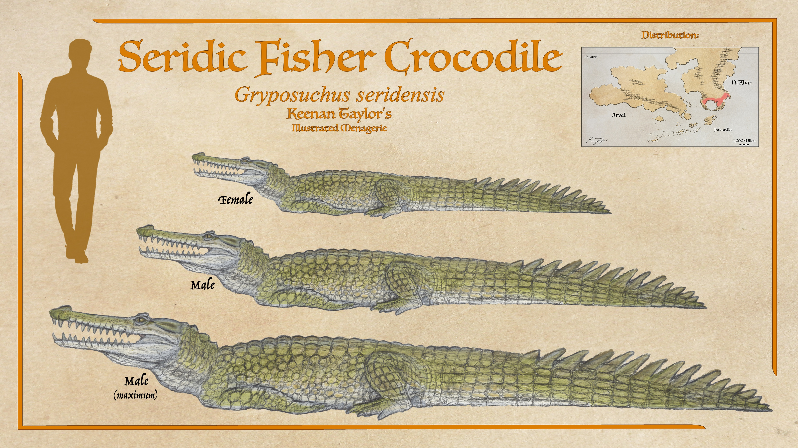
The Seridic fisher crocodile is the most abundant crocodilian in its freshwater environment. Reaching approximately four to five metres in length, it is considerably smaller than the Trakaiam fisher crocodile but remains a substantial predator. Like other members of the genus Gryposuchus throughout the Known World, it is restricted to freshwater because it lacks an effective mechanism for removing excess salt from its blood. Its elongated jaws and specialized feeding anatomy are particularly suited to catching fish, and the extraordinary diversity of freshwater fish in the Seridic Wetlands provides an abundant and dependable food supply.

Caimans are represented by several species in Kaimere, most of which are comparatively small, generally measuring between two and four metres. The Seridic cattle caiman is one such species and is particularly important to the human communities of the wetlands. It is named for the quality of its meat and has become a familiar animal around Seridic settlements. Compared with the Seridic crocodile, the cattle caiman is relatively docile and more tolerant of living in close proximity to others of its species. Its hide is less suitable for armor and clothing because it is comparatively brittle and less durable than crocodile hide, but its behavior and reproductive characteristics make it useful as a source of food. Individuals can be kept in enclosures, readily breed in captivity, and require relatively little space or food to remain healthy. Their energetic requirements are substantially lower than those of endothermic domestic animals of similar size. The principal obstacle to their full domestication is the time required to reach adulthood. Raising individuals from hatchlings to slaughterable size is therefore often less practical than capturing wild animals. Once caught, cattle caiman can be maintained in suitable enclosures, and those with sufficient openings to adjacent waterways may obtain much of their food from fish entering the enclosure. It is common for Seridic villages to maintain at least small populations of cattle caiman for meat and eggs. Their manageable temperament and relatively low maintenance requirements make them one of the more practical reptilian resources available to the region's inhabitants.
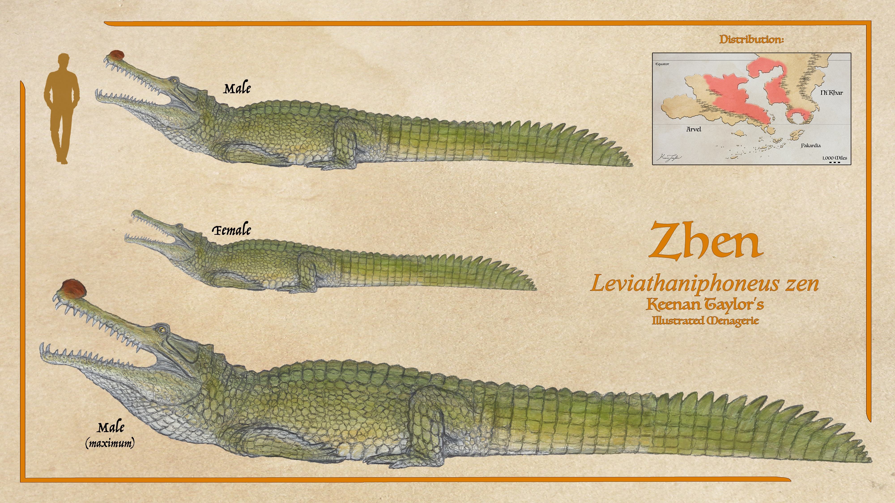
The largest crocodilian in the Known World is the enormous gharial known as the zhen. The species remains primarily a fish specialist, a feeding strategy made exceptionally successful by the enormous diversity and size of freshwater fish available throughout the wetlands of the Known World. The largest bulls can reach approximately fifteen metres in length and weigh fifteen to eighteen tons. Such individuals are exceptional and occur only in particularly productive habitats capable of supporting their considerable food requirements. Most mature bulls are closer to ten to twelve metres long and weigh approximately six to eight tonnes. The Seridic Wetlands supports the greatest abundance of zhen, and its population has had a profound influence on the physical structure of the basin. The animals are exceptionally heavy and low-slung, and their movement through shallow water, mud, and vegetation can excavate substantial channels. These channels alter local drainage patterns, connect previously isolated waterways, and facilitate the movement of fish and other aquatic organisms. Their dung and the sediments displaced by their movements also redistribute nutrients throughout the wetland. The impact is comparable to that of alligators in the Everglades, whose movements and excavations create channels and pools that help define the local ecosystem. The difference is one of scale. A fifteen-ton gharial can produce channels far larger than those created by even the largest alligators. Stagnant water is consequently uncommon in many parts of the Seridic Wetlands, where the movement of zhen continually modifies waterways and creates new connections between aquatic habitats. Kurajaku are frequently described as river-makers, but the zhen may have a stronger claim to the title because of the scale of the channels they create. Zhen are generally fish specialists, but they are opportunistic predators and will take smaller animals when the opportunity arises. To an animal of fifteen metres in length, a Kaimeran is relatively small prey. They do not generally seek out humans, and attacks are uncommon relative to their size, but people are occasionally taken. Avoiding nesting areas is particularly important, as the enormous animals can pose a serious threat to anyone approaching their breeding sites.
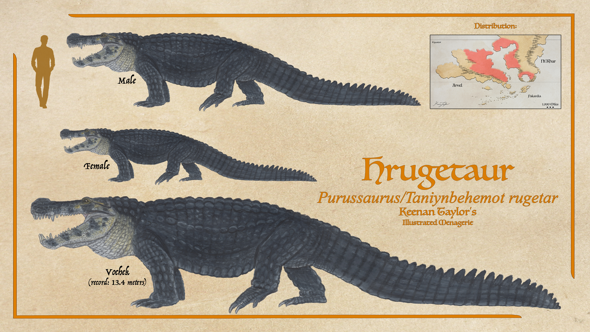
The hrugetaur is another enormous crocodilian introduced following the ecological disruption caused by the algal blooms that devastated the Seridic Wetlands. Its ancestors were introduced into Kaimere after the region had been purged by these blooms, and the modern species represents a highly specialized giant caiman lineage. Unlike the zhen, however, the hrugetaur is relatively uncommon in southern Ni'Khar and the Crescent Peninsula today. Its greatest populations occur farther west, particularly in the wetlands of northern Arvel and the Titan Gardens, where it is among the most common large crocodilians. In the Seridic Wetlands, hrugetaur are less abundant and face considerable competition for food and nesting space. They are nevertheless among the largest reptiles in the region, with large bulls generally measuring between eight and ten metres. The largest specimen known to the Assembly is a thirteen-metre male named Vochek, discovered in the estuaries near the great northern river in western Arvel. The species is exceptionally heavily built. Its skull is broad and massive, while its body is protected by a dense covering of armored skin. When attacking large prey, the weight of its jaws and the force of the initial impact can be as devastating as the bite itself. Unlike the predominantly piscivorous zhen, hrugetaur regularly pursue prey approaching their own size and are capable of attacking some of the largest animals in their environment. Only the largest titans are generally beyond their capabilities as potential prey. Their armor is among the most formidable of any crocodilian. Although their hides are less flexible than those of crocodiles and alligators, they are substantially harder and provide exceptional protection against injury. Even large predators such as kurajaku may struggle to penetrate the armor of a mature hrugetaur. There are numerous Assembly reports of stopping rifles capable of killing an elephant or zentaur ricocheting from the backs of common caimans and smaller hrugetaur. The largest males are widely regarded as entirely bulletproof, giving rise to the common nickname ironclad.
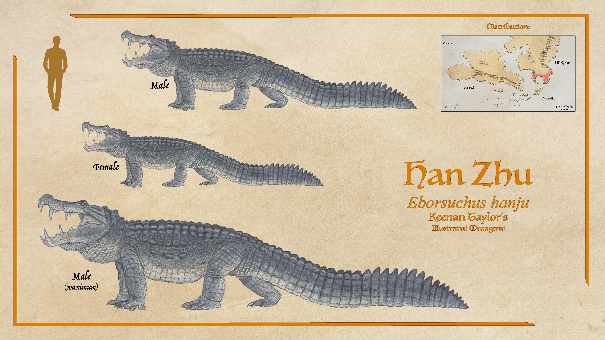
The arrival of Eborsuchus within the Seridic Wetlands approximately one million years ago introduced another major competitor for large aquatic prey. The abundant fish, crocodilians, dinosaurs, and mammals of the basin provided substantial opportunities for this lineage, which subsequently established a distinct species known as the han zhu. Its arrival may have contributed to the relative rarity of giant caimans in the region, although the precise relationship remains uncertain. The han zhu is the smallest of the three giant crocodilians of the Seridic Wetlands, but is generally regarded as the most dangerous to Kaimerans. It does not ordinarily consider humans to be prey, but is highly aggressive toward small mammals and responds particularly strongly to potential threats near its nesting sites. Both sexes can be dangerous during the breeding season. Females defend their nests vigorously, while males are inclined to attack potential threats, especially those approaching the territory of a female. Unlike the hrugetaur, the han zhu lacks exceptionally heavy armor. Its hide is still substantial, but does not provide the same degree of protection as the ironclad caiman. This makes it more vulnerable to large predators such as kurajaku and zentaur. However, its powerful jaws can inflict serious injuries on these animals, and it is generally considered capable of defending itself against predators of comparable size. The largest kurajaku bulls can prey upon han zhu, although female kurajaku are more evenly matched against them.
The nesting behavior of the different crocodilians may also have influenced the outcome. Hrugetaur females frequently share nesting islands, cooperating to drive away potential competitors such as other crocodilians, ceratopsians, and theropods. This collective defense can make nesting grounds difficult for rival species to occupy. Eborsuchus, by contrast, constructs comparatively simple nests, potentially making its breeding strategy less effective under the competitive conditions of the wetlands. The failure of han zhu to spread farther west, where giant caiman populations have recovered, may support the possibility that the giant caiman remains dominant under more stable ecological conditions but was temporarily displaced during the period of environmental disruption. The relative abundance of these crocodilians is therefore likely the product of both competition and historical circumstance rather than an uncomplicated hierarchy of physical superiority. The giant crocodilians also compete with kurajaku, large aquatic megaraptorans that are among the largest theropods in both Earth and Kaimere's evolutionary history. These predators possess powerful fangs capable of subduing armored prey, supplemented by enormous claws that provide additional means of inflicting injury. Although crocodilians possess formidable jaws and defensive armor, the presence of these large theropods creates an additional source of predatory pressure, particularly for juveniles and smaller individuals.
Aerial Community
The aerial community of the Seridic Wetlands is among the most diverse and ecologically complex in the Known World. The immense extent of the basin, its abundance of aquatic and terrestrial prey, and the seasonal movement of animals between marshes, forests, rivers, and surrounding grasslands support an exceptional concentration of flying vertebrates. Pterosaurs, birds, and several small gliding mammals occupy the skies, exploiting an extensive range of ecological opportunities. These include aerial insectivory, fishing, scavenging, predation upon terrestrial animals, and the exploitation of the numerous smaller organisms associated with the wetland vegetation. The result is an aerial ecosystem in which several major evolutionary lineages coexist, often occupying similar ecological roles through substantially different anatomical and behavioral adaptations.
The Seridic Wetlands are particularly favorable to flying animals because of their immense aquatic productivity. Fish populations are exceptionally abundant, supporting large numbers of specialized fishing birds and pterosaurs, while the vegetation provides habitat for enormous insect populations. Seasonal flooding and the subsequent recession of water redistribute these resources, concentrating fish and other aquatic animals into progressively smaller channels and pools during the dry months. These concentrations attract predators from across the region, including resident species and migrants escaping the increasingly inhospitable conditions of the Houze Prairie and Eastern Telmede Mountains. The wetlands consequently experience considerable seasonal changes in the abundance and composition of their aerial fauna.
The open character of much of the basin also influences the structure of its flying-animal communities. Although swamp forests provide extensive habitat for arboreal species, the marshes and floodplains are characterized by broad expanses of relatively unobstructed airspace. These conditions favor animals capable of sustained flight, rapid pursuit, and efficient movement between widely separated feeding grounds. Conversely, the extensive reed beds, floating vegetation, and forest margins provide more sheltered environments for smaller species that maneuver through dense vegetation or forage close to the water's surface.
Pterosaurs remain especially prominent throughout the Known World, and the Seridic Wetlands support a substantial diversity of these animals. Their persistence alongside birds and bats reflects a long history of ecological partitioning rather than the complete displacement of one group by another. Several pterosaur lineages remain exceptionally successful in the region, particularly the insectivorous anurognathids and the carnivorous bathawks. Birds are nevertheless equally important, with the wetlands supporting an extensive assemblage of waterfowl, waders, fishing specialists, raptors, scavengers, and aerial insectivores. Smaller mammals also contribute to this community, particularly the titanosciurians, whose unusual ecological relationship with titanosaurs connects the aerial and terrestrial environments of Kaimere.
The anurognathids, commonly known as snipes, are among the most frequently encountered pterosaurs in the Known World. They occupy ecological roles comparable to those of insect-specialized bats and birds on Earth, with numerous species adapted to capturing flying insects in both daylight and darkness. Their small size, rapid flight, and exceptionally wide mouths make them effective aerial predators of the immense insect populations associated with Kaimere's forests, grasslands, and wetlands. Consequently, anurognathids are often exceptionally effective at pursuing insects through open woodland and across marshes. Their flight capabilities also make them difficult for many predators to catch, allowing them to evade pursuit through rapid changes in direction and acceleration. Their continued success is therefore unlikely to have a single explanation. Rather, it reflects the interaction between their evolutionary history, flight morphology, sensory adaptations, and the particular structure of Kaimere's forest environments.
The common batwing snipe is the archetypal member of the group and among the most abundant pterosaurs in the Known World. Adults measure approximately 18 - 22 centimeters in body length, and possess a wingspan of 35 - 45 centimeters. Its body is compact and broad, with an unusually short tail and an exceptionally wide mouth lined with dozens of small, peg-like teeth. Rather than capturing insects individually, it typically flies through concentrations of airborne prey with its enormous gape held open, collecting moths, beetles, flies, termites, midges, and other small insects. The forelimbs are elongated and support the broad flight membranes, while the hindlimbs remain sufficiently powerful for climbing tree trunks and clinging beneath branches. When perched, the folded wing membranes wrap around the body like a cloak, giving the animal a distinctly batlike silhouette despite its reptilian ancestry. Its plumage-like pycnofibers are mottled tan, brown, and cream, rendering resting individuals difficult to distinguish from bark and dead leaves. Common batwing snipes frequently gather in large colonies, sometimes numbering hundreds of individuals. At dusk, entire colonies may emerge simultaneously to feed, producing conspicuous clouds of small pterosaurs moving above the forest canopy and marshes. Their collective feeding activity can remove substantial numbers of flying insects from localized areas, making them important predators of the abundant insect populations associated with the wetlands.
The cricket snipe is the smallest known pterosaur in Kaimere. This minute anurognathid is particularly associated with the Houze Prairie, where it spends the daylight hours resting among grasses and emerges at night to hunt insects. Adults measure only 4 - 5 centimeters in body length, with wingspans of 10 to 13 centimeters. Its dimensions are comparable to those of a human thumb, making it exceptionally small even by the standards of insectivorous pterosaurs. Its diminutive size is partly explained by the proximity of its roosting sites to its prey. Unlike larger anurognathids that must travel considerable distances between feeding grounds, cricket snipes commonly live directly among the vegetation inhabited by their principal food sources. They therefore require relatively little flight endurance to reach suitable feeding areas. Their wings are proportionally broad for an anurognathid, allowing slow and controlled flight, including brief hovering movements among prairie grasses. The skull is exceptionally large relative to the body, comprising nearly one-third of its total length. This provides room for disproportionately large eyes and a wide mouth, both of which are advantageous when capturing minute insects in darkness. Their mottled beige coloration closely resembles dry grass stems, providing effective camouflage while they rest. Cricket snipes are highly colonial, with individual roosting sites sometimes containing tens of thousands of animals. When disturbed, an entire colony may take flight almost simultaneously, producing a sudden cloud of thousands of tiny pterosaurs. This behavior has startled travelers in the Houze Prairie for centuries, particularly when colonies are concealed within apparently ordinary patches of grass. Their diet consists predominantly of leafhoppers, aphids, gnats, and juvenile grasshoppers. These insects include numerous agricultural pests, making cricket snipes particularly valuable to farmers. Seridic villages frequently encourage colonies within their settlement walls, where the animals readily roost among cultivated sprangletop and other grasses. Their presence reduces insect damage to crops and provides a form of natural pest control without requiring deliberate management.
The jade snipe is a member of the gem snipe radiation and is closely related to the sapphire snipe. It occupies swamps, marshes, and river systems throughout the Seridic Wetlands, where its coloration and behavior are adapted to the dense vegetation surrounding open water. Adults measure approximately 10 to 13 centimeters in body length, and possess wingspans of 22 to 28 centimeters. Its most distinctive feature is the brilliant emerald and jade-green coloration of its pycnofibers. Unlike the blue structural coloration characteristic of sapphire snipes, the green coloration provides exceptional camouflage among reeds, floating plants, and aquatic vegetation. Its hindlimbs are proportionally longer than those of its close relatives, and its feet are somewhat broader, allowing it to maintain a secure grip on slender reeds and papyrus stems that sway above open water. Jade snipes feed heavily on mosquitoes, dragonflies, marsh flies, and spiders. They are particularly abundant around fishing boats, riverbanks, and settlements, where insects frequently accumulate in large numbers. Their willingness to forage around human activity, combined with their consumption of biting insects, has made them among the most appreciated small pterosaurs in the Seridic Wetlands. They are commonly tolerated around villages and boats, where their presence provides a useful ecological service.
The lapis snipe is another member of the gem snipe radiation. Adults measure approximately 8 to 11 centimeters in body length, and possess wingspans of 18 to 22 centimeters. Compared with the sapphire snipe, it has shorter wings and a more terrestrial lifestyle. Its hindlimbs are noticeably elongated, allowing it to move rapidly across logs, docks, and exposed riverbanks while pursuing insects that avoid aerial predators. The body is a rich cobalt blue, with darker facial markings surrounding exceptionally large golden eyes. Its coloration is particularly conspicuous in direct sunlight, although it becomes less obvious among the shadows and reflections of the waterways. Lapis snipes frequently patrol fishing boats and floating docks, where they feed on spiders and other small invertebrates that establish colonies on vessels. Their more terrestrial feeding habits allow them to exploit prey that is less accessible to the more aerially specialized members of the gem snipe radiation.
The mossback snipe is among the largest mainland insectivorous anurognathids. Adults possess wingspans of approximately 70 to 90 centimeters and body lengths of 25 to 30 centimeters. Its anatomy differs considerably from that of the smaller snipes. The wings are longer and narrower, permitting efficient gliding above forests and wetlands, while its larger body allows it to exploit a wider range of insects and other small invertebrates. Dense olive-green pycnofibers cover the back and shoulders, frequently becoming stained with algae and moss. This produces extraordinary camouflage when the animal is perched against a tree trunk or other vegetation. However, the mossback snipe is particularly remarkable for its relationship with the ba'khar, a giant megaraptoran predator of the wetlands. Mossback snipes regularly land directly upon these enormous theropods, clinging to their feathers and filaments while removing ticks, mites, parasitic insects, and dead skin. The ba'khar generally tolerate this activity, and some individuals have been observed deliberately presenting their necks, shoulders, and tails to waiting snipes. The behavior resembles the cleaning symbioses between oxpeckers and large mammals on Earth, although in this case the relationship has developed between a pterosaur and a gigantic theropod.
The great white batwing egret belongs to the Falladactyls, a distinctive clade of pterosaurs found only in Kaimere. The group is believed to have originated from toothed, long-tailed rhamphorhynchoid-like ancestors, although its modern members have become highly derived. Many possess shortened tails and toothless beaks, having independently evolved several characteristics superficially similar to those found among more derived pterosaurs on Earth. The Falladactyls are considerably more diverse beyond the Known World, where most members are relatively small aquatic specialists occupying ecological roles comparable to gulls and plovers. Many have lost all but the digit supporting the wing, further emphasizing their derived anatomy. The great white batwing egret is exceptional within the group because of its size and the retention of one long hand finger, a feature that may indicate a comparatively less derived ancestry. The species is the largest known Falladactyl in the Known World by a considerable margin. It is believed to have reached the Seridic Wetlands from Kairul within approximately the last million years, where it established itself among the extensive marshes and shallow waterways. When standing, it reaches approximately human-hip height or somewhat greater, with a wingspan estimated at 2.5–3 metres and a mass in the low tens of kilograms. Its large size distinguishes it from most other falladactyls, which are adapted for smaller prey and more specialized aquatic foraging. The great white batwing egret is instead capable of exploiting a broader range of wetland resources, including fish and other small aquatic animals. Its pale coloration makes it conspicuous in the open marshes, although it also provides an effective visual association with the white plumage of many large wading birds found in the region.
The Xiphognatha, commonly known as bathawks, are a major lineage of carnivorous tapejarid pterosaurs and among the most influential aerial predators in Kaimere. Their ancestry remains debated. The leading hypothesis traces the group to a Thalassodromeus-like ancestor, although some researchers argue that bathawks descended from an as-yet-undiscovered relative or from a lineage that independently evolved a similar cranial configuration. Bathawks possess one of the most specialized feeding systems among known flying vertebrates. Their lower jaw is self-sharpening, with the opposing surfaces honing one another during repeated closure. This produces a shearing edge capable, in larger species, of cutting through bone. The upper beak is hooked and functions primarily to penetrate and anchor prey, holding it securely while the lower jaw performs rapid, controlled slicing movements. A long, stiffened tongue acts as a secondary lower jaw, manipulating pieces of prey that cannot be securely held by the beak alone. This combination of structures allows bathawks to kill rapidly, divide prey into manageable portions, and temporarily store food within the gullet. They can then retreat to a secure roost and regurgitate or swallow the stored pieces without remaining exposed on the ground. This feeding strategy is particularly advantageous in Kaimere's highly competitive ecosystems. Grounded predators are frequently vulnerable to larger terrestrial carnivores and competing scavengers, and even successful hunters can lose their kills to more powerful animals. Bathawks avoid much of this risk by remaining airborne or returning to elevated roosts after capturing prey. Their ability to process prey quickly and carry manageable portions away from feeding sites has allowed them to become major predators without requiring the same degree of terrestrial dominance as large mammals and theropods. Their ecological influence extends beyond their direct predation. Bathawks exert strong selective pressure on other aerial predators, effectively limiting the size of birds of prey capable of competing successfully in many environments. Large eagles are consequently uncommon, while falcons, hawks, and owls generally remain smaller and exploit more restricted prey niches. Bathawk juveniles receive prolonged parental care, further reducing competition between adult and immature animals for small prey. The resulting aerial predator hierarchy of the Known World is shaped substantially by the presence of bathawks.
The grizzly xiphognath is a common bathawk of the Seridic Wetlands. It was formerly considered one of the fishing bathawks, a group of pterosaurs thought to have independently specialized in capturing aquatic prey. Closer examination suggests that its fishing adaptations evolved independently, much like those of the banshee gull. Despite its aquatic feeding adaptations, however, the grizzly xiphognath is not a strict fishing specialist and continues to consume substantial quantities of mammals and reptiles. Its bill is comparatively slender, allowing it to penetrate the water more effectively when capturing fish. This anatomical specialization is accompanied by a capacity for sustained flight over greater distances than that of many other bathawks. Whereas some members of the group possess relatively short, powerful wings adapted for maneuvering through forests and executing rapid attacks, the grizzly xiphognath is better suited to surveying extensive territories in search of productive fishing grounds. The species remains a proficient climber and readily captures prey in both arboreal and terrestrial environments. It is particularly notable for raiding fish eagle nests, where it may kill adults as well as chicks. Its diet therefore remains considerably broader than that of a specialized aquatic predator. Grizzly xiphognaths occasionally prey upon juvenile ba'khar and other megaraptorans, but their overall influence on these predators may be beneficial. They show a strong preference for many of the smaller animals that threaten theropod eggs and young, including snakes, mustelids, monitor lizards, rodents, and sparassodonts. By removing these potential nest predators, the grizzly xiphognath may indirectly improve the survival prospects of some large theropod populations, even while occasionally taking their offspring.
The rat-peckers are azdarchids specialized in capturing rodents and other small animals. Although rodents are their preferred prey, they will consume almost any small animal they can fit into their mouths, frequently attempting to swallow prey that is close to or even beyond their normal swallowing capacity. Their appearance is often regarded as filthy, reflecting their habit of feeding on refuse and scavenging around human settlements. Nevertheless, many cities tolerate their presence because they remove substantial numbers of rodents, insects, and other pests. Rat-peckers do not produce the strong odors often associated with scavenging animals, possibly because they possess a relatively poor sense of smell. They are, however, extremely vocal. Individuals emit shrill cries whenever they discover potential food or encounter a resource worth investigating. These calls frequently attract other members of the flock, allowing the birds to exploit food sources collectively. They are social animals that live in decentralized flocks and exhibit surprisingly altruistic feeding behavior. Individuals regularly allow others to access food, and members of a group appear to make considerable efforts to ensure that less successful flockmates receive a share of available resources. They are also highly mobile, constantly moving between feeding sites in search of prey and refuse.
The titan stork, also known as the corpse pecker, is a much larger azdarchid and perhaps the most famous pterosaur in Kaimere. Unlike the rat-pecker, which specializes primarily in small prey, the titan stork is a highly versatile predator and scavenger capable of consuming almost any available meat. It readily rummages through refuse, carrion, and discarded animal remains, but generally prefers a combination of small game and fish. Titan storks are powerful terrestrial animals, capable of galloping at approximately thirty miles per hour over short distances. They are also proficient fliers, although their large size makes takeoff relatively difficult. Once airborne, they can travel at speeds approaching three times their running velocity, making flight an efficient means of moving between feeding grounds. They do not generally use sustained flight as their primary hunting method, although they are capable of striking at opponents while passing overhead. Their wings are equipped with prominent spurs, used primarily in contests with other members of their species but also in disputes over carcasses and encounters with predators. These structures provide a formidable defensive weapon, allowing the birds to deter competing scavengers and inflict serious injuries during physical confrontations. Titan storks are exceptionally intelligent and prolific breeders. Their ability to exploit a broad range of food sources, combined with their reproductive capacity, makes them difficult to control through culling. Mothers commonly distribute their clutches among several nesting locations, sometimes placing eggs in trees, burying them, or establishing open nests that can be guarded directly. Although some eggs and young are lost, the strategy reduces the likelihood that a single predation event or disturbance will destroy an entire reproductive effort. Their ecological distribution is strongly associated with open terrain. Titan storks are most abundant in grasslands, open woodland, and dry forest margins, although titan garden forests are generally suitable. They occur throughout much of the warmer Known World, with the exception of the extensive forests of Arvel. Their greatest abundance is found in the seasonal corridor connecting the Houze Prairie and the Seridic Wetlands. This migration is closely associated with the contrasting seasonal conditions of the two regions. When the Houze Prairie and Hinterland Savannah becomes excessively arid, titan storks move south into the Seridic Wetlands, where retreating floodwaters create extensive grasslands and expose abundant aquatic prey. As the wetland basin approaches its wet season and becomes increasingly inundated, the birds move north again, returning to the prairie as it becomes more favorable. Their movements therefore follow the seasonal availability of suitable feeding grounds rather than a simple annual migration between breeding and wintering territories.
The aerial scavenger community of the Seridic Wetlands is closely associated with the abundance of large herbivores and the extensive seasonal movement of animals through the basin. Carcasses are generated by predation, disease, starvation, and natural mortality, particularly during the dry season when animals become concentrated around permanent water sources. This provides a substantial food supply for vultures, storks, and other opportunistic feeders.
The red vulture is the most successful representative of the Old World vultures, possessing the largest population and broadest geographical distribution among its relatives. Together with the lesser rainbow-headed vulture, it is one of the birds most commonly associated with the concept of a vulture among Kaimerans. They inhabit an extensive range of open environments, including grasslands, woodland margins, dry forests, mountain foothills, river valleys, agricultural landscapes, and coastal plains. Their adaptability has allowed them to colonize nearly every major region containing substantial populations of large terrestrial herbivores. Compared with many other griffon-like vultures, the red vulture possesses a somewhat shorter and more muscular neck. Its skull is relatively large, with expanded attachment sites for the jaw muscles, producing a particularly powerful bite capable of rapidly opening carcasses and tearing through tough hides. These adaptations are especially useful when feeding upon large herbivores, whose thick skin and substantial connective tissues can otherwise make access to internal organs difficult.
The black teratorn is the largest flying bird in Kaimere and one of the most formidable aerial predators in the Known World. Adults stand approximately 6 to 7 tall, weigh 68 to 75 kilograms, and possess wingspans reaching approximately 6 metres. They are also the only known flying birds that regularly hunt children. Black teratorns inhabit extensive plains, open woodland, dry forest margins, coastal grasslands, and broad river valleys. These environments provide the uninterrupted air currents necessary to support their immense bodies during sustained flight. Their anatomy is heavily reinforced. The sternum, shoulder girdle, and wing bones are proportionally thicker than those of other flying birds, allowing them to withstand the tremendous forces associated with launching, landing, and carrying large prey. Extensive skeletal pneumatization reduces overall mass, although their skeleton remains substantially more robust than that of smaller flying birds. The skull is immense, with a broad hooked beak capable of delivering crushing bites. The bite is powerful enough to fracture the cervical vertebrae of prey approaching the bird's own body mass. The neck musculature is correspondingly hypertrophied, giving the head the appearance of being anchored directly into the shoulders. Their enormous wings are exceptionally broad, with elongated primary feathers that maximize soaring efficiency and allow them to remain airborne for many hours. Unlike the golden teratorn, the black teratorn possesses relatively short and robust legs. This reflects its emphasis on overpowering large prey rather than pursuing smaller animals over extended distances. It frequently hunts by ambushing animals from elevated positions before accelerating rapidly over short distances. Its enormous strength and ability to deliver devastating attacks make it one of the most dangerous predators of the open landscapes surrounding the wetlands. Although the black teratorn is associated primarily with open terrain, it can exploit the extensive grasslands that develop within the Seridic Wetlands during the dry season. The concentration of grazing animals and the availability of exposed feeding grounds provide suitable opportunities for hunting, while the nearby rivers and marshes attract smaller prey and scavenging animals.
The great blue spurwing crane is an enantiornithean bird and one of the most distinctive large fishing animals of the Seridic Wetlands. It is of considerably more ancient evolutionary origin than many of the other large anglers in the region, including the herons, storks, and cormorants. It is not considered a true bird under the Assembly's formal definition of Aves, but rather a surviving member of the diverse enantiornithean radiation. Although it is the only known spurwing crane in the Known World, the broader group is considerably more common in Kairul. Its presence in the Seridic Wetlands is therefore believed to represent a relatively recent migration from the eastern continent. The species has become well established within the basin, where its combination of long legs, wading ability, and specialized feeding behavior allows it to exploit shallow marshes and open wetlands. The body is pale blue-gray, with darker markings across the wings and tail. Its long legs permit it to move through marshes and shallow lakes in a manner broadly comparable to true cranes, while its long, narrow bill is adapted for capturing fish, amphibians, and insects in shallow water. Its most distinctive feature is the presence of bony spurs on the wings, which are used in display and defense against predators or competing individuals. When threatened, the bird can strike with its clawed wings, delivering painful slashes. The great blue spurwing crane is particularly abundant because it occupies a feeding niche that few other large birds can exploit as effectively. It is a deliberate and graceful stalker, moving through open marshland and shallow water in search of prey. Unlike many herons, which tend to forage individually and rely heavily upon stealth, spurwing cranes are more comfortable moving through exposed habitats and frequently forage in small family groups. Their success illustrates that the aerial fauna of the wetlands is not composed exclusively of modern bird lineages introduced during the major harvests. Ancient enantiornitheans have also adapted successfully to the region, retaining a substantial presence in an ecosystem dominated by more recently established groups.
The Kaimeran magpie is a northern territorial corvid descended primarily from Sahul stock, with occasional hybrid influence from later European arrivals. Adults generally measure 34 to 45 centimeters in length. It inhabits open forests, woodland margins, suburban environments, river corridors, and disturbed northern landscapes, where it is among the more dominant small-to-medium-sized birds. Compared with Earth magpies, the Kaimeran form is somewhat more compact through the body but possesses more muscular chest and shoulder development. Its bill is straight, strong, and relatively heavy at the base, providing considerable force during pecking and allowing the bird to probe, tear at food, and defend itself in close confrontations. The skull is broad, and the species possesses excellent visual acuity and a high degree of problem-solving intelligence. Its wings are moderately long and somewhat pointed, allowing rapid, direct flight between trees and open ground. The legs are sufficiently long for confident terrestrial movement, while the feet are strong enough to provide secure perching and support aggressive ground-based behavior. The species is particularly notable for its threatening posture, frequently running, hopping, and lunging toward rivals rather than immediately taking flight. The plumage is strongly contrasted, generally consisting of black and white markings. The head, back, and wings are dark, while the underparts and shoulder patches are pale. The eye is frequently set within a darker facial mask, giving the bird a severe expression. This pattern provides effective camouflage in the mottled light of open woodland and forest margins.
The Seridic Wetlands supports an extensive assemblage of waterfowl, including resident species and seasonal visitors from surrounding regions. Their ecological roles vary considerably, with some specializing in grazing and aquatic vegetation, others filtering small organisms from the water, and still others diving for fish and invertebrates. Their abundance fluctuates with the seasonal availability of open water, exposed vegetation, and concentrated food resources.
The red swan, also known as the lesser horu, is a large tropical and subtropical waterfowl species distributed throughout Ni'Khar, northern Arvel, and eastern Kairul. It is comparable in size to large true swans, although it belongs to a distinct lineage. Males average slightly larger than females. Red swans are gregarious but generally live in relatively small groups of five to ten individuals rather than forming the enormous flocks characteristic of some other waterfowl. Their necks are somewhat shorter and more muscular than those of true swans, allowing stronger terrestrial feeding and defensive strikes. The body is broad through the shoulders, while the pelvis is positioned farther forward, producing a relatively upright posture when walking. The bill is deeper and more triangular than that of true swans, with expanded lamellae that allow the bird to filter aquatic vegetation while also cropping grasses efficiently. Its plumage consists primarily of warm reddish-brown and chestnut tones, with pale underparts and boldly patterned wings. These colors provide effective camouflage among reeds and floating vegetation. The legs are comparatively long, allowing the birds to forage comfortably in shallow wetlands while also traveling substantial distances over land. The red swan is well suited to the seasonal conditions of the Seridic Wetlands, where it can alternate between grazing on exposed floodplains and feeding among aquatic vegetation. Its ability to forage both on land and in shallow water makes it a relatively adaptable member of the waterfowl community.
The genus Plectocygnus, commonly known as the greater horu, contains two larger and more cold-adapted species, the horu and the Ni'Khar goose. The latter, Plectocygnus nakarensis, is also known as the golden goose and is most abundant in Ni'Khar, although it occasionally occurs in Pakardia and Qajar. It requires cooler temperatures than the red swan but is less strongly adapted to temperate conditions than the grey horu, also known as the apple-headed goose. Compared with the red swan, the golden goose has a deeper chest, broader pelvis, shorter neck, and substantially heavier legs, reflecting its greater reliance on prolonged terrestrial grazing. Its bill is broad and powerful, allowing it to crop coarse grasses and aquatic vegetation efficiently. The plumage is dominated by warm golden-buff and cream coloration, with darker barring across the wings and back. This provides effective camouflage among dry reeds and sedges, particularly during the seasonal recession of floodwaters. Although capable of flight, the golden goose requires considerable effort to become airborne. Individuals commonly escape danger by running toward open water before taking flight, where the additional space and reduced terrestrial obstruction make launching easier. Its strong legs and grazing adaptations allow it to exploit extensive grasslands and exposed floodplains, making it a regular component of the seasonal herbivorous bird community.
The ruddy shelduckis a resident of both the southern Houze Prairie and the Seridic Wetlands. It is most commonly encountered along prairie rivers, seasonal wetlands, irrigation channels, and shallow lakes, where it exploits the transition between aquatic and terrestrial feeding grounds. Compared with more strictly aquatic ducks, the ruddy shelduck is a stronger walker and possesses a more upright posture on land. Its body is relatively sturdy, with a broad chest and a generalist bill suited to grazing, rooting, and picking at a variety of food items. This versatility makes it one of the more adaptable birds of open freshwater margins, where it can exploit both exposed vegetation and shallow aquatic resources.
The Egyptian goose, also known locally as the prairie goose, is another resident of the southern Houze Prairie and Seridic Wetlands. Its anatomy is more goose-like than duck-like, with a long neck, powerful legs, and a deep-bodied frame adapted for grazing and terrestrial defense. It favors marsh edges, flooded grassland, riverbanks, and wet pasture, where its broad bill and sturdy build allow it to exploit grasses and other vegetation. It is considerably more terrestrial than many of the ducks occupying the same habitats and is a conspicuous presence among the mixed grazing assemblages of the wetland margins.
The greater flamingo, known locally as the Seridic flamingo, is the tallest of the common waterfowl associated with the wetlands. The species inhabits saline lagoons, alkali flats, shallow coastal marshes, and brackish inlets throughout the Seridic Wetlands and southern Houze Prairie. Its anatomy is highly specialized for wading and filter-feeding. Exceptionally long legs allow it to move through relatively deep shallow water, while its elongated neck enables it to maintain its head close to the waterline. The bill is strongly downcurved and equipped for filtering small aquatic organisms and suspended organic material. Its body is relatively light and buoyant, with long, narrow wings adapted for migration. Among the introduced waterfowl of the region, the greater flamingo is the most specialized filter-feeder.
The common pochard, also known as the Seridic pochard, is a medium-sized diving duck. It occupies deeper lakes, slow rivers, marsh pools, and sheltered coastal waters throughout the Seridic Wetlands and Houze Prairie. Unlike dabbling ducks, the common pochard is compact and relatively dense, with rear-set legs and a short bill adapted for probing underwater vegetation and invertebrates. Its body plan is specialized for diving rather than walking, with powerful hindquarters and a low, buoyant profile on the water. This allows it to exploit food resources beneath the surface that are less accessible to dabbling species and other shallow-water feeders.
The Crescent garganey is another member of the regional duck community. Adults generally measure 35 ad 55 centimeters in length and occupy ponds, marshes, shallow rivers, and seasonally flooded agricultural landscapes. Compared with the common pochard, the Crescent garganey is more slender and more strongly adapted to surface feeding. Its bill is shaped for sieving seeds, insects, and small aquatic prey from shallow water and floating vegetation. Its general body plan remains close to that of the standard dabbling duck, although variations in neck length, bill proportions, and leg development reflect differences in feeding behavior. Its relatively small size and flexible diet allow it to exploit a wide range of shallow-water environments throughout the basin.
Swifts and swallows are among the most successful aerial insectivores of the Seridic Wetlands, although the two groups are not closely related. Their superficial similarities reflect convergent adaptations to sustained flight and the capture of insects in open air rather than a shared recent ancestry. Both have been established in Kaimere for much of its recent prehistory, with swallows represented in the fossil record from the first harvest following the Dynastic Extinction.
The fairy swallows, belonging to the subfamily Fairiesvealinae, represent one of the older swallow radiations in the Known World. The redcap swallow of the Seridic Wetlands is believed to be descended from this early harvest. Fairy swallows have a relatively broad distribution, competing with analogous enantiornitheans and anurognathids in northern Ni'Khar and Kairul. Other swallow lineages have diversified more recently, with several being restricted to particular regions. Adults measure approximately 12 to 14 centimeters in length, and possess wingspans of 24 to 28 centimeters. The wings are moderately long but noticeably broader than those of swifts, allowing rapid turns among reeds and marsh vegetation. Its deeply forked tail provides exceptional maneuverability during low-altitude aerial feeding, while the legs are sufficiently developed to allow effortless perching on reeds, shrubs, and branches between feeding bouts. The bill is short but broad at its base, producing a wide gape suited to capturing small flies, midges, and mosquitoes. Its distinctive red cap functions primarily in mate recognition and territorial display rather than camouflage. The remaining plumage is comparatively subdued, helping the bird blend into the vegetation when perched. Its relatively light skeleton and less specialized flight anatomy reflect a lifestyle that alternates between extended aerial feeding and frequent periods of perching.
Swifts have historically been mistaken for close relatives of swallows by both Earth and Kaimeran naturalists. In reality, swifts belong to a distinct lineage more closely related to hummingbirds, whereas swallows are perching birds related to groups such as warblers and larks. Their similarities in wing shape and aerial feeding behavior are therefore independent adaptations to comparable ecological demands. Swifts are often described as lacking feet, although this is incorrect. Their legs are simply held tightly against the body and tucked out of view during flight. Their feet remain functional and are adapted for clinging to vertical surfaces, allowing them to roost and nest in locations inaccessible to many other birds.
The tailor swift, also known as the weaver swift, belongs to a lineage that has been established in Kaimere since before the Anchored Period. It is believed to have reached the Seridic Wetlands and numerous other regions of the Known World from northern Arvel following the end of that period. Like many swifts, its nest is constructed from plant matter and saliva, which adheres to trees, rocks, and other suitable surfaces. The tailor swift is particularly distinctive for its nest construction. Rather than relying primarily upon twigs and other coarse plant material, it incorporates finer materials such as reeds and animal hair, which are woven together with saliva to produce a more stable structure. This behavior is the source of its common names, reflecting the bird's unusual ability to assemble and bind materials into a compact nest. Tailor swifts can exceed one hundred miles per hour in flight, making them among the fastest birds in Kaimere. Their speed and sustained aerial efficiency make them difficult for most raptors to capture. They are also proficient migrants, spending much of the hot season in the southern half of the Known World before traveling north as temperate regions become more favorable. Nevertheless, resident populations occur throughout much of their distribution, and the species remains highly successful across a wide range of climates and habitats.
The garnetback swallows represent another important component of the wetland's aerial insectivore community. These birds are either members of the genus Tachycineta or an endemic Kaimeran genus closely related to it, depending upon the taxonomic interpretation adopted. They are believed to have been established in the Seridic Wetlands since the beginning of the Anchored Period approximately six million years ago, having arrived from South America. Adults measure approximately 13 to 15 cenimeters in length, and possess wingspans of 30 to 34 centimeters. Their anatomy represents a balance between endurance and maneuverability. The body is compact and streamlined, while the relatively long, pointed wings allow efficient sustained flight over open water and extensive marshland. Compared with fairy swallows, the tail is less deeply forked but broader, improving stability during prolonged foraging flights. The dorsal plumage is iridescent, producing metallic green and violet reflections under direct sunlight through microscopic feather nanostructures rather than conventional pigmentation. Their feet are strong enough to make regular use of reeds, branches, and exposed snags, while the broad gape allows them to capture relatively large flying insects emerging from aquatic vegetation.
The tree swallow is a comparatively recent arrival, having reached Kaimere approximately 11,000 years ago during the Interrupted Harvest. It is one of the many successful small birds introduced during this event. While terrestrial animals introduced to Qajar experienced highly variable success, small birds were generally capable of dispersing widely and establishing themselves in suitable habitats with relatively little difficulty. The tree swallow is now distributed throughout the Known World, although its presence in the Seridic Wetlands is seasonal. It spends much of the year in the Telmede Mountains and migrates into the marshes and swamps during the colder months of the dry season. Anatomically, the species remains very similar to its Earth ancestor. Long, pointed wings provide excellent migratory efficiency, while the moderately forked tail allows agile pursuit of insects in open air. The body is compact, with a relatively short neck and streamlined torso that reduces drag during prolonged flights. Its feet are adapted for perching and cavity nesting, allowing it to exploit habitats unavailable to swifts. The glossy blue-green dorsal plumage serves both display and camouflage against reflective water surfaces when viewed from above, while the clean white underparts reduce contrast against the bright sky when viewed from below. The broad insect-catching gape is complemented by stiff facial bristles that help direct prey toward the mouth during rapid aerial feeding. Its seasonal movement into the Seridic Wetlands allows it to exploit abundant insect populations during a period when colder conditions reduce the availability of food in its mountain habitats.
The Seridic Wetlands is defined by water. Marshes, swamps, bogs, floodplains, lakes, major rivers, and an extensive estuarine gulf collectively occupy an estimated three quarters of a million square miles, although the precise extent fluctuates annually with seasonal flooding and over longer climatic cycles. For much of the year, the region is predominantly aquatic in one form or another. Unsurprisingly, an enormous diversity and abundance of fish inhabit these waters.
The larger fish populations support substantial predators, including multi-ton anglers such as the ba'khar. However, the considerably greater abundance of smaller fish sustains an exceptionally diverse community of fishing birds. These range from small mergansers and kingfishers to enormous storks, cormorants, and other specialized waders. Their feeding strategies differ considerably, with some relying on patient stalking, others on underwater pursuit, and still others on coordinated flocking to exploit concentrated fish populations.
The bluebill mergansers are among the most common fishing birds of the Seridic Wetlands. They are believed to have descended from Mergus squamatus, introduced from Southeast Asia approximately 1.5 million years ago. Although individuals generally forage and live in pairs or small groups, their social organization is flexible, with smaller units frequently joining to form loose but persistent flocks. These aggregations may contain hundreds or even thousands of birds, particularly during the dry season. Bluebills specialize in capturing small fish in shallow water. Their narrow bills are particularly effective at gripping slippery prey, while their hunting success depends upon rapid movement, coordination, and numerical abundance. They thrive in environments where numerous other fishing birds are also present because their feeding behavior is sufficiently flexible to exploit concentrations of fry, tiny fish, and aquatic insects. Their seasonal ecology is particularly important. As water levels decline, bluebills gather around the shrinking channels and pools where fish become increasingly concentrated. These same areas attract herons, cormorants, and larger predators, creating an unusually dense community of competing anglers. Flocking provides some protection against predators such as marsh hawks and bathawks, while also helping the birds maintain access to productive feeding areas in the presence of other large fishing species.
The gold-necked jabiru is the largest of the resident wetland fishing birds. Like many of the major South American-derived anglers, it is believed to have arrived in Kaimere approximately six million years ago. Although other jabiru occur elsewhere in the Known World, the Seridic Wetlands provides particularly favorable conditions for this enormous species. Its combination of extensive open marshland and abundant fish stocks allows it to attain population densities not observed elsewhere. The gold-necked jabiru stands approximately two metres tall at rest, with the largest males exceeding this height. Its wingspan is greater than four metres, giving it an imposing appearance both on the ground and in flight. Its size allows it to capture fish and other aquatic animals beyond the capabilities of most smaller wading birds. It is particularly successful during the dry season, when retreating water concentrates fish in shallow channels and pools. The species breeds during the wet season, with chicks hatching around the time of the first rains. By approximately halfway through the wet season, young birds have already approached adult body size, although they continue to depend upon their parents for food. This rapid growth allows them to exploit the abundant resources available during the period of maximum aquatic productivity. Gold-necked jabiru construct enormous nests within trees, frequently exceeding three metres in width. These structures provide sufficient space for their large bodies and developing young, although their size also makes them conspicuous features of the swamp-forest canopy. Unlike herons, which frequently rely upon stealthy strikes, jabiru are more deliberate hunters. They walk methodically through open water and marsh grasses, scanning the shallows for movement before delivering powerful downward strikes with their bills. Their size allows them to tackle prey beyond the capabilities of most wetland birds, and they often dominate the most productive feeding sites during the dry season. The golden coloration of the neck is an important visual signal, particularly during courtship and territorial displays among mature males. In flight, jabiru are broad-winged and heavy-bodied, soaring slowly over the wetlands with their necks and legs extended. Their enormous size and conspicuous appearance make them among the most recognizable birds of the Seridic basin.
The great anhinga is another major aquatic predator introduced from South America approximately six million years ago. Although shorter than the jabiru, it rivals it in mass. Unlike the common anhinga, which retains the ability to fly, the great anhinga is entirely flightless and has become a highly specialized aquatic hunter. The species was formerly believed to represent an ancient, exceptionally large resident lineage that predated the major harvest. Fossils once attributed to it have since been reidentified as belonging to a plotopterid group, a lineage of birds closely related to darters that is now represented in Kaimere exclusively by marine species. The modern great anhinga is therefore understood to be a more recent arrival, rather than a surviving giant of the earlier wetland fauna. Its flightlessness has produced substantial anatomical changes. The body is heavier and more robust than that of the common anhinga, with powerful legs adapted for swimming and underwater pursuit. The wings are reduced and no longer functional for flight, although the bird retains the characteristic elongated neck and sharply pointed bill of its relatives. These features allow it to capture fish with considerable precision, while its greater body mass permits it to pursue and overpower much larger prey than the flighted species. Great anhingas frequently dominate deeper channels and open water, where their size and underwater hunting abilities provide advantages over smaller wading birds. Their presence illustrates the evolutionary flexibility of aquatic bird lineages, demonstrating how a flying ancestor can become a highly specialized flightless predator when suitable aquatic resources are available.
The common anhinga is a widespread and highly adaptable diving bird of the Seridic Wetlands. Unlike the great anhinga, it retains full flight and is common enough to be considered a routine member of the regional bird community. It is long-necked and narrow-bodied, with a sharply pointed bill adapted for capturing fish beneath the water's surface. Its hunting method resembles the use of a spear rather than a net. The bird swims mostly submerged, leaving only its head and neck visible above the water, before suddenly thrusting its bill toward passing prey. Its strike is rapid and precise, allowing it to capture fish that may otherwise escape larger or slower predators. Common anhingas generally take fish of modest size, although they can handle considerably larger prey than most kingfishers and mergansers. Their ability to forage in deeper water than herons and cranes can comfortably exploit places them in an intermediate ecological position between shallow-water waders and fully aquatic fish predators. Their success is enhanced by their capacity to exploit habitats where competition is intense but where larger aquatic specialists are absent.
The yellow-breasted cormorant is the largest cormorant of the Seridic Wetlands. Although it is an impressive wild bird, it is best known for its widespread semidomestication by the Seridic peoples. Cormorants are intelligent and coordinated fishers that respond well to simple directives and food rewards, allowing them to be trained for use in fishing activities. Cormorant handlers are highly regarded within the communities that practice this form of fishing. Trained birds can substantially increase the quantity of fish caught, particularly during the dry season when large numbers of fish become concentrated within shrinking channels. Their handlers use them to locate, pursue, and drive fish toward nets and other fishing equipment, improving the efficiency of traditional fishing operations.
Seridic snakebirds are generally considered more intelligent and potentially more successful fishers, but their personalities are frequently described as more independent and selfish. According to local fishermen, snakebirds are more difficult to manage and less willing to cooperate consistently with handlers. Cormorants are therefore preferred in most practical circumstances, although the prestige associated with mastering the more powerful and intelligent snakebird remains considerable.
The great umber heron is one of several heron and egret species found throughout the Seridic Wetlands. It is the largest known member of this group in the Known World, standing more than 1.5 metres tall and possessing a wingspan exceeding two metres. Some individuals inhabiting the interior wetlands are reported to stand taller than an adult human. This interpretation is supported by the history of what were once considered several distinct giant heron species in the wetlands. Smoky-blue, dark-grey, and white giant herons were formerly described as separate taxa, but are now generally regarded as color morphs of the great umber heron. The umber coloration is the most common and was the first to appear in Assembly literature, which explains why it remains the basis of the species' common name despite the considerable variation in plumage. The great umber heron is a patient stalker of mudflats, reed margins, and shallow floodplains. Its long legs allow it to move quietly through knee-deep water, while its spear-like bill is adapted for rapid, precise strikes at fish, frogs, and small crustaceans. Although primarily a fish specialist, it is sufficiently opportunistic to capture aquatic reptiles, nestlings, and small mammals when circumstances permit. Unlike the more active fishing birds, the great umber heron relies primarily upon ambush. It remains motionless for extended periods, using camouflage and stillness to avoid detection before striking with exceptional speed. Its long neck allows the bill to be projected rapidly toward prey without requiring the entire body to move.
The crested ibis is one of the most culturally significant birds of the Seridic Wetlands. It is celebrated for its distinctive appearance, and its feathers are associated with wisdom, elder purity, spiritual guidance, and death. The bird is commonly regarded as sacred, and killing one outside strict ritual supervision is strongly taboo. Matrons and patrons of Seridic villages frequently wear crested ibis feathers as symbols of status and spiritual authority. A bird sacrificed under appropriate ritual conditions is believed to serve as an exceptional guide to the afterlife, and individuals considered worthy of this honor may be buried or cremated with its remains. Its cultural importance is therefore far greater than its ecological role alone would suggest. Although it is an angler, the crested ibis is not a specialized fish predator comparable to the marsh hawk or great anhinga. It feeds in shallow wetlands, using its curved bill to probe mud and vegetation for fish, frogs, insects, and other small aquatic organisms. Its feeding behavior is relatively generalized, allowing it to exploit a variety of resources throughout the marshes. Nevertheless, its ecological role is often overshadowed by the considerable religious and cultural significance attached to the species.
Marsh hawks are one of several osprey species found in the Known World. This species has been established in Kaimere since the middle Miocene, having been included in the first harvest following the Dynastic Extinction. It has since become one of the most successful fishing raptors in the Seridic Wetlands. The marsh hawk is closely related to the Kaimeran osprey, a species with a considerably broader distribution and a more strongly marine ecology. Both evolved in an environment where arboreal bathawks represent a major threat to nesting birds and their young. The marsh hawk has responded through an unusual nesting adaptation: the construction of roofed woven nests. These structures provide substantial protection from aerial predators, particularly bathawks that specialize in raiding the nests of other birds. By covering the nest and restricting access from above, marsh hawks reduce the likelihood that their eggs and chicks will be taken by climbing or perching predators. The adaptation has been particularly successful in the wooded environments surrounding the wetlands, where suitable nesting trees are abundant. Marsh hawks are formidable anglers, capable of capturing large fish and occasionally carrying specimens approaching their own body mass. Their powerful feet and specialized hunting behavior allow them to seize slippery prey directly from the water before carrying it to a secure feeding site. They also take readily to taming and training, making them highly prized among Kaimeran falconers. However, their social requirements make them less versatile than cormorants. Marsh hawks generally require a mate and adequate nesting space to remain content, limiting their suitability for certain forms of captive management. Their hunting abilities and strong pair bonds nevertheless make them highly desirable to experienced handlers. The species is tremendously abundant throughout the Seridic Wetlands because few competing raptors possess the same combination of fishing ability, reproductive success, and protection against nest predators. Although smaller snail and crab hawks may rival them in total population or exceed them in species diversity, marsh hawks remain the quintessential fishing raptors of the region. Conventional hawks and eagles are also present, and some species remain locally successful, but the marsh hawk occupies an unusually prominent position in the aerial predator community.
The Seridic buzzard represents the successful African-descended buzzard radiation of open-country raptors. Adults generally have wingspans of approximately 1.1 to 1.4 metres. They inhabit prairie, woodland margins, dry hills, and open wetlands, where broad wings and strong feet make them effective predators of smaller terrestrial animals. Their anatomy is adapted for soaring and controlled descent rather than the rapid, sustained pursuit characteristic of falcons. Broad wings allow them to circle over open terrain for extended periods, while a relatively long tail provides additional control during flight. The hooked bill and strong feet are well suited to capturing and killing rodents, reptiles, small birds, and other prey. Unlike marsh hawks, which specialize in capturing aquatic animals, Seridic buzzards primarily exploit terrestrial prey and carrion. They are most successful along the transition between open marshland and drier woodland, where they can locate small animals moving through exposed vegetation. Their presence provides an important link between the terrestrial food web and the aerial predator community. The marsh hawks are also accompanied by a diverse radiation of smaller snail and crab hawks. These birds are especially successful around aquatic margins, where mollusks and crustaceans provide abundant prey. Although the supplied regional fauna identifies them as a diverse and numerous component of the raptor community, their individual species, morphology, and detailed feeding specializations remain insufficiently described to characterize each taxon separately.
Herbivore Community
The Seridic Wetlands support one of the most diverse and productive herbivore communities in the Known World. Their abundance is the result of an unusually favorable combination of permanent freshwater, nutrient-rich floodplains, extensive aquatic vegetation, and pronounced seasonal changes in water levels. Few wetland environments sustain such a broad assortment of large terrestrial, semiaquatic, and aquatic herbivores. Mammals, dinosaurs, reptiles, and birds occupy overlapping feeding grounds, exploiting different portions of the vegetation and responding to the seasonal transformation of the basin in different ways.
The community is not simply a collection of species adapted to living in flooded environments. It is an assemblage shaped by successive waves of colonization, extinction, and ecological replacement. The catastrophic floral and faunal turnover approximately six million years ago profoundly altered the wetlands, eliminating many established lineages while allowing others to recover and new arrivals to become dominant. The subsequent influx of mammals during later harvests further transformed the ecosystem. Although dinosaurs had previously occupied many of the large-herbivore niches, the arrival of placental mammals and other live-bearing groups gave mammalian lineages an important reproductive advantage in an environment where suitable nesting sites were limited and often contested by predators. Over time, rhinoceroses, sloths, hippopotamuses, buffalo, and other mammalian megafauna became increasingly prominent.
This transition did not result in the complete disappearance of the older dinosaurian fauna. Several ornithischian lineages persisted, and some underwent substantial adaptive radiations. The Seridic Wetlands remain one of the most important refuges for ceratopsians, thescelosaurs, elasmarians, and other surviving dinosaur groups. Their continued presence is particularly significant because many of these animals exploit horsetails and other vegetation that is less readily consumed by the dominant mammalian grazers. The result is a degree of dietary partitioning that allows animals with broadly similar body sizes and ecological requirements to coexist, although competition remains an important influence on their distribution and behavior.
Seasonality is one of the principal forces organizing the herbivore community. During the wet season, flooding expands aquatic habitat and disperses vegetation across the floodplain. Many terrestrial grazers retreat toward higher ground, while aquatic and semiaquatic herbivores exploit the expanded waterways. As the dry season progresses, water levels recede and extensive areas of marsh become lush grassland. This period attracts resident hippopotamuses, water buffalo, deer, river sloths, and numerous dinosaurian herbivores, as well as migratory kangaroos and houze chelotaurs arriving from the northern grasslands. The resulting concentrations of animals make the wetlands particularly productive, but also increase competition and attract large predators.
The herbivores of the Seridic Wetlands consequently occupy a range of ecological roles. Some are highly specialized grazers, others browse woody vegetation or consume aquatic plants, and several are omnivorous animals that supplement their diets with invertebrates, carrion, or small vertebrates. Their feeding activities influence the structure of the marshes, the distribution of floating vegetation, and the availability of resources for other animals. Their collective impact is so extensive that the modern wetlands cannot be understood independently of their megafauna. The animals do not merely inhabit the landscape; through grazing, browsing, trampling, digging, and the dispersal of seeds and nutrients, they actively maintain many of the conditions that allow the ecosystem to persist.
Among the reptilian herbivores of the Seridic Wetlands, the wug is perhaps the most unusual. It belongs to the chelysuchians, a group of burrowing protosuchian pseudosuchians commonly known as turtle-crocs. These animals evolved recognizable forms as early as the Jurassic and have retained a relatively conservative body plan throughout their subsequent history. Modern chelysuchians comprise two principal clades: the terrestrial testudochampsids and the semiaquatic chelysuchids. The wug belongs to the latter and is among the more conspicuous members of the Seridic reptile community. Approximately comparable in mass to an iogrotu, the wug is considerably longer, largely because of its elongated tail, which is convergently similar to that of modern crocodilians. Despite its superficially crocodilian appearance, it spends much of its time in burrows and is adapted to a relatively slow, low-energy lifestyle. It is primarily aquatic while foraging, feeding on wetland vegetation in shallow channels and marshes. As an ectotherm, it requires substantially less food than a mammal or dinosaur of comparable size, allowing it to subsist on relatively modest quantities of vegetation. Its slow metabolism and activity levels also mean that it can tolerate extended periods between substantial meals. Unlike the more strictly herbivorous iogrotu, however, the wug will readily consume carrion when it becomes available, making it an opportunistic scavenger as well as a plant-eater. The wug is believed to be a relatively recent arrival from Kairul, where chelysuchians are considerably more abundant. Its distribution in the Known World remains limited, with the principal representatives of this lineage occurring in the Crescent. A smaller species belonging to the same genus inhabits the rivers and wetlands of the western Crescent. The lineage appears to have entered the region through the eastern basins before spreading into the Crescent, following a pattern similar to that of other Kairulan semiaquatic animals, including the han zhu and renzhuyo.
The dinosaurian herbivores of the Seridic Wetlands are the surviving representatives of several ornithischian radiations that expanded following the Dynastic Extinction. Although the great diversity of horned dinosaurs and other large ornithischians that characterized earlier dynasties was severely reduced, the wetlands provided suitable refuges for several lineages. These survivors subsequently diversified alongside the expanding mammalian fauna, with some groups developing specialized feeding strategies that allowed them to persist despite competition.
The most conspicuous dinosaurian herbivores of the Seridic Wetlands belong to the thescelosaurs, a diverse clade that underwent extensive adaptive radiation following the Dynastic Extinction. Among their descendants are the archetiposaurs, commonly called builder drakes, which have become some of the most familiar dinosaurs throughout the Known World.
The most abundant genus is Hystronyx, represented in the wetlands by the common drake (Hystronyx vulgaris). As its name suggests, it is the non-avian dinosaur most frequently encountered throughout the Known World. Common drakes are generalist omnivores, although much of their diet consists of plant material, particularly horsetails, ferns, fruits, and nuts. They also consume grasses, carrion, and small animals when their preferred foods are less abundant. The Crescent drake represents one of the most geographically mixed forms of Hystronyx vulgaris. It occupies the broad transitional region between the Arvelith and Pakardiant populations and consequently displays a combination of characteristics associated with several regional forms. It is generally intermediate in build, being more substantial than the prairie morphs but less heavily armored than the largest highland populations. Adults typically weigh between 350 and 700 kilograms, although exceptionally well-fed bulls can exceed this range. Crescent drakes occupy a varied mosaic of forest margins, wet meadows, seasonally flooded basins, and open woodland. Their appearance is correspondingly variable, with individuals often exhibiting gold-and-green striping, moderate dorsal plates, and feathering that falls between the heavier temperate and lighter prairie forms. They are anatomically generalized, with a robust skull, moderately widened beak, and sufficient jaw strength to process both browse and rough vegetation. Their behavior is similarly flexible, with groups shifting between marsh margins, fern grasslands, and scattered woodland according to seasonal conditions.
Another important archetiposaur lineage is represented by Archetiposaurus, a genus of builder drakes generally around two metres long. Unlike the enormous qotaur, these animals retain body proportions closer to those of their smaller ancestors. They live in groups numbering several dozen individuals and rely primarily on speed and coordinated escape rather than physical confrontation. Their nesting behavior is particularly elaborate. Although all archetiposaurs construct some form of enclosure, species of Archetiposaurus take this behavior to an extreme, using branches, vegetation, and other debris to construct fences and enclosed lodges around their nests. Some structures are sufficiently complex that they are occasionally mistaken for Kaimeran settlements. These constructions are largely instinctive rather than the result of learned innovation, although their complexity is considerable. Unlike common drakes, Archetiposaurus possesses relatively subdued tail plates and quills. Their principal defense is escape, with the ability to run faster and for longer distances than their larger relatives. Their nesting structures provide additional protection against smaller predators, while tunnels and passages allow hatchlings and adults to retreat from larger threats. These nests are generally maintained throughout the year, although some populations and species are more mobile than others.
The ophititans, commonly called serpent drakes, are another distinctive radiation of thescelosaurs. Their evolutionary relationships were historically misunderstood, with early naturalists interpreting them as prosauropods related to animals such as Plateosaurus. This interpretation persisted through much of the twentieth century, partly because their skeletons exhibit numerous similarities to basal sauropodomorphs. Their hip structure, however, has consistently provided evidence for an ornithischian ancestry. More recent genetic studies support their placement as a sister clade to the common drakes.
The greater Seridic serpent drake is a compact, muscular species particularly adapted to floodplains, oxbow lakes, and freshwater marshes. Nearly half their total body length is composed of the neck, which is supported by relatively short but powerful hindlimbs and a long counterbalancing tail. Its skull is exceptionally narrow, ending in a small keratinous beak suited to selecting individual leaves, buds, and fruits. Compared with other serpent drakes, the greater Seridic species has a relatively blunt head, which allows it to generate stronger bite forces when crushing freshwater mollusks and crabs. The forelimbs are long and muscular, ending in three large hooked claws. These are used to pull floating vegetation toward the mouth, tear apart fallen logs in search of crustaceans, and anchor the body while feeding along muddy riverbanks. Its alternating olive and pale green coloration provides effective camouflage among reeds and flooded forest vegetation. Individuals spend much of the day wading through shallow water, slowly harvesting aquatic vegetation while opportunistically consuming crayfish, freshwater crabs, amphibians, fish, bird nests, and fallen fruit. Although it is considerably more selective than the common drake, its ability to exploit both vegetation and animal matter allows it to occupy a broad range of wetland environments.
A more terrestrial relative is the kasktaur, a large serpent drake commonly found in forested environments. Its bulls can reach ten to twelve metres in length and are among the largest members of the wider serpent drake radiation. They were historically considered among the closest analogues to Plateosaurus, particularly because of their elongated necks and relatively tall body proportions. Kasktaur live in larger herds than most thescelosaurs, and males are considerably more tolerant of one another outside the mating season. Their long necks allow them to browse above the reach of many competing herbivores, giving them access to foliage that would otherwise be unavailable. Nevertheless, they are not strict high browsers and readily consume other vegetation within reach. They are particularly attracted to the Seridic hyacinth and will abandon their usual browsing grounds to bulk-feed on extensive floating mats when these are available.
The ceratopsians of the Known World represent another surviving component of the older dinosaurian megafauna. Although horned dinosaurs disappeared from much of the region during the Dynastic Extinction, generalist protoceratopsids survived in the wetlands and were among the first members of their clade to recover. These survivors eventually evolved larger body sizes and independently developed horns, although their horn morphology differs from that of their more familiar Earth relatives. Their recovery occurred alongside the extraordinary radiation of thescelosaurs and elasmarians, both of which became among the most diverse and widespread large herbivores in the Known World. Competition with these groups, followed by the arrival of large mammalian herbivores, restricted the ceratopsians to a relatively small number of habitats. Today, only two genera of wetland-specialist ceratopsians remain in the Known World.
The smaller of these is the pugget, or parrot drake, a name derived from the Seridic languages. Puggets generally weigh between fifty and two hundred pounds, depending on their geographic population. They are highly adaptable omnivores, consuming wetland vegetation, crustaceans, carrion, and bark. Their feeding habits are particularly unusual because of their ability to exploit resources within the sediment. The base of their horns is covered by substantial keratin, but the tips are worn down almost to the underlying bone, leaving them extremely sensitive. Puggets use these sensitive horn tips to probe through wetland sediment, detecting and locating crustaceans and other small prey. They are also unusually resistant to the electrical discharges produced by the many knifefishes inhabiting the wetlands, including electric eels. Rather than avoiding these fish, puggets actively seek them out and consume them as a favored prey item. Their combination of vegetation feeding and opportunistic predation makes them among the most versatile small ceratopsians in the region.
The largest ceratopsian in the Known World is the Crescent shield drake, known as the chungk or by similar names throughout the Seridic languages. These names are generally translated as butterfly beast, referring to the animal's distinctive horns and brightly colored frills. Although it resembles a true ceratopsid at first glance, it is believed to have evolved from protoceratopsid ancestors, like the other surviving ceratopsians of Kaimere. Crescent shield drakes live in large mixed-sex herds with a complex social structure. Males form several distinct cohorts, which usually consist of close relatives, although unrelated individuals may also associate. These cohorts share territory with the main female herd, and dominant males mate with most females. Subordinate males also occasionally reproduce, making paternity uncertain and meaning that several males within a cohort may be fathers to the same group of young. This uncertainty appears to encourage broad paternal investment in herd defense. Females generally remain with their natal herds, while males are eventually driven away by the established male cohorts. Female herds may divide into smaller groups during the wet season, but remain close to their nesting sites during the dry months, when their soft-shelled eggs incubate. The social organization is therefore closely tied to the seasonal reproductive cycle, with the larger herd structure providing protection during periods when eggs and young are especially vulnerable. Their feeding ecology is closely associated with the aquatic grasses that dominate the Seridic Wetlands. Crescent shield drakes use their long beaks as scythes, cutting large quantities of vegetation before drawing it into their mouths with barbed tongues. This method of feeding is exceptionally efficient and allows them to consume substantial amounts of plant matter in a relatively short period. Their success depends upon the abundance of vegetation, however, and populations cannot remain healthy where food availability declines for extended periods. Despite competition from mammals, thescelosaurs, and elasmarians, the Crescent shield drake remains a formidable representative of the older dinosaurian megafauna. Its large body, powerful defensive anatomy, and highly efficient feeding apparatus have allowed it to retain an important place within the wetland ecosystem.
The spirit drakes are among the most unusual and taxonomically controversial dinosaurs in the Seridic Wetlands. Their evolutionary placement remains uncertain, with competing hypotheses identifying them as elasmarians, thescelosaurs, or members of the more basal cervasaurians. Some researchers have suggested that they represent a separate lineage of small bird-hipped dinosaurs, although their precise relationships remain unresolved. Their fossils are known from the Known World approximately ten million years ago, while potentially older specimens from Pakardia and Qadan have suggested a southern origin. It is also possible that the group diversified rapidly following the Dynastic Extinction and simply remains absent from older fossil deposits. Regardless of their ancestry, spirit drakes possess an exceptionally conservative body plan. Every known species has a long, low, fusiform torso, relatively short hindlimbs, and an enormous muscular tail. Even the more terrestrial species retain proportions unlike those of most large ornithopods. Their center of mass is carried low between the hips and shoulders, while the trunk is broad and barrel-shaped. The ribcage is unusually deep and laterally expanded, providing space for an extensive digestive tract capable of processing large quantities of vegetation alongside animal matter. This broad body also provides buoyancy in aquatic species and stability in terrestrial ones.
The largest spirit drake is the jugashen, which is endemic to the Seridic Wetlands. Closely related forms occur in the swamps of western Ni’Khar, while other spirit drakes inhabit Arvel, Pakardia, and the southern islands. A more aquatic relative, the tagduru, is particularly abundant throughout the Inland Sea and its thousands of islands. Jugashen are among the largest animals in the wetland ecosystem. Females regularly reach approximately ten metres in length and five tonnes in mass, while males can reach thirteen metres and weigh between nine and eleven tonnes. Their bodies are exceptionally muscular, with barrel-shaped torsos, thick skin, and very dense bones. This skeletal density allows them to walk along the bottom of rivers and shallow lakes rather than relying on buoyancy to swim. They are consequently better adapted to wading and walking through submerged environments than their more buoyant marine relatives. Males are generally solitary, while females sometimes form loose groups of three to five related individuals. Solitary females are also common. They reproduce by laying enormous eggs, the largest produced by any animal in the Known World. Parental investment is unusually extensive for a dinosaur, with adults providing close care for their young until the following year's clutch is laid. Juveniles may remain near their mothers for several years afterward. Jugashen are obligate omnivores. Their wide-set eyes, boxy skulls, and narrow snouts are associated with a feeding strategy that combines large quantities of aquatic vegetation with regular animal consumption. The Seridic hyacinth is particularly important to their diet. These plants float across the surface of slow-moving and still waters, providing an exceptionally nutritious and rapidly replenishing food source. Their high protein content and vigorous growth allow individual jugashen to consume enormous quantities without necessarily exhausting local populations. Animal matter is nevertheless essential to their health. Fish are generally preferred, and the Seridic Wetlands provides an exceptional variety of large fish suitable for their size. Crocodile gar, Seridic arapaima, large catfish, lungfish, and giant squamantarx all provide potential prey. Particularly important are the large perch-like fishes of the genus Trokteplosus, several species of which migrate upstream from the Crescent Sea to spawn in the wetlands. During these migrations, fish can become the principal food source for individual jugashen for weeks at a time. Jugashen are not especially fast or agile predators, and their limited jaw flexibility restricts the range of terrestrial prey they can consume. Their hard beaks are poorly suited to dismembering large animals, so they generally select prey that can be swallowed whole. Small game is therefore an important supplementary food source. Unfortunately for the Seridic peoples, humans can fall within this category. Although most jugashen do not actively hunt people, a small number of particularly experienced older males have developed a preference for doing so. These individuals can quietly enter settlements, seize people with their jaws and forelimbs, and leave without attracting immediate attention. The disappearance of several villagers and the discovery of enormous webbed footprints may be the only indications that a jugashen has visited during the night. Their presence is consequently one of the reasons Seridic settlements employ walls and elevated dwellings.
The smaller jiao shares the same general habitat but differs considerably in social organization and body size. Females and subordinate males usually measure approximately four to five metres in length, while dominant males may reach six metres. They are considerably more social than jugashen, with groups containing as many as a dozen related females. Males form separate bachelor herds containing several subordinate individuals and a dominant male. Dominant males also develop manes, although these are smaller than those of jugashen and serve primarily as display structures. They additionally provide some protection during fights between males and against megaraptoran attacks. The social organization of jiao was once interpreted as resembling that of horses, with a single male maintaining a harem of females. More detailed observations have since demonstrated that their groups are generally sex-segregated, with female herds and male bachelor groups maintaining separate social structures.
Birds are less dominant than the large terrestrial dinosaurs and mammals in the Seridic Wetlands, but they remain important consumers of vegetation and contributors to the dispersal of seeds and other plant material. The most prominent large terrestrial bird in the Crescent is the Crescent rhea, a flightless ratite associated with open woodland, river terraces, floodplain meadows, and wetland margins. The Crescent rhea is considerably smaller than its extinct prairie relatives, generally weighing between twenty-eight and forty kilograms, with large males occasionally reaching forty-five kilograms. The species is particularly abundant in the Sheklat riverlands, where open floodplain meadows alternate with gallery forests, oxbow lakes, marshes, and river terraces. Annual flooding continually produces new vegetation while preventing extensive portions of the floodplain from developing into closed forest. Crescent rheas exploit this mosaic rather than specializing in a single habitat. They graze young grasses following floods, browse herbs and shoots, consume fallen fruit beneath figs and other trees, and readily supplement their diet with insects and small vertebrates. Crescent figs are particularly important when herbaceous vegetation declines, while flood-recession meadows provide seasonal concentrations of fresh growth.
Mammalian herbivores form the largest and most ecologically influential component of the Seridic Wetlands' large-bodied terrestrial fauna. Their diversity reflects the extraordinary productivity of the basin, where permanent waterways, seasonally exposed grasslands, floating vegetation, and extensive swamp forests provide an unusually broad range of feeding opportunities. Grazers, browsers, semiaquatic specialists, and generalist omnivores coexist throughout the wetlands, although their distributions and relative abundance change considerably over the course of the year.
The modern mammalian community is the product of several successive introductions and ecological turnovers. Some lineages, such as the hippos and beavers, arrived from Asia or North America, while others, including the manatees, several sloths, and many smaller mammals, have South American ancestry. Later introductions brought deer, kangaroos, peccaries, and other herbivores into an ecosystem already occupied by an established megafaunal community. These arrivals did not simply replace the existing fauna. Instead, they created new competitive relationships and expanded the range of ecological roles occupied by mammals.
The common hippopotamus is one of the most abundant large herbivores in the Seridic Wetlands and the most successful recent mammalian arrival in the region. Descended from populations harvested from northern Africa approximately 250,000 years ago, it has spread rapidly through the wetlands of southern Ni'Khar and the southernmost reaches of the Houze Prairie. The Seridic population is particularly substantial, and the species has become the most common mammalian herbivore exceeding one tonne in the basin. Seridic common hippos are somewhat larger than their Earth relatives. Cows typically weigh around one and a half tonnes, while males average approximately two tonnes, with particularly large bulls reaching three and a half tonnes. Their bodies are better adapted for terrestrial movement than those of the behemoth hippo, allowing them to travel considerable distances between feeding grounds and water. They are primarily grazing specialists, feeding at night and retreating to waterways during the heat of the day. Their preferred forage consists of grasses growing across the floodplains and seasonally exposed marshes, although they will occasionally supplement their diet with other wetland vegetation. The arrival of the common hippopotamus had a substantial effect on the existing mammalian community. Earlier assumptions that this species occupied much of the Known World have since been revised. Most Kaimerean hippos outside the Seridic region actually belong to the genus Hexaprotodon, an Asian lineage introduced during the period immediately following the Anchored Period. Several populations previously identified as common hippos, particularly in central Arvel, were later recognized as hybrids or incorrectly identified members of Hexaprotodon. No confirmed hybrids between Hippopotamus and Hexaprotodon have been documented. The two lineages independently developed remarkably similar aquatic lifestyles, making their similarities an example of parallel or convergent evolution. The common hippo is one of the principal competitors of the Kaimeran water buffalo. Both species depend heavily on grasses and frequently occupy the same floodplain pastures. Their competition is sufficiently intense that both have developed a reputation for aggression toward one another, although their behavior is not identical to that of their Earth relatives. Rather than concentrating their territorial behavior around access to water, Seridic hippos and buffalo are particularly defensive of productive grazing grounds. Their interactions can involve violent confrontations, especially where large herds converge during the dry season.
The largest hippopotamid in the wetlands, and the largest mammal in the region, is the behemoth. This enormous species is a descendant of Asian Hexaprotodon populations and owes its extraordinary size to the abundance of food available in the habitats it colonized. Cows generally weigh between two and three tonnes, comparable to large common hippo bulls, while males typically weigh between five and seven tons. Exceptional bulls can approach nine tonnes. Like other members of the genus, males continue growing throughout much of their lives, sometimes reaching their maximum size only after forty or fifty years. Females, by contrast, generally cease significant growth in their early twenties. Although behemoths graze, they are less well suited to sustained terrestrial feeding than common hippos. Their enormous bodies and relatively limited terrestrial mobility make them particularly dependent on shallow water and abundant aquatic vegetation. Adult males consequently consume substantial quantities of wetland plants, especially Seridic hyacinth, which provides an exceptionally productive food source. They are among the most important consumers of this plant and help maintain open water within areas otherwise prone to dense floating vegetation. Behemoths are most vulnerable during the dry season. As floodwaters recede, the shallows in which they normally forage become increasingly restricted, forcing animals into closer proximity with terrestrial predators. Kurajaku are among their most significant natural enemies during this period, taking advantage of the reduced water depth and the difficulty the largest males experience when attempting to move onto land. During the wet season, however, the situation is very different. Extensive floodplains, deep channels, and abundant vegetation allow behemoths to remain largely unchallenged. Even the largest predators are reluctant to attack a healthy adult surrounded by a protective herd, particularly when the group contains dominant bulls approaching nine tonnes.
The dwarf hippo is a much smaller and more conservative member of the hippopotamid community. Once widespread across the northern and western continents, it is now most common in the dense angiosperm jungles of the Crescent, where it has found refuge from competition with larger hippopotamids. Adults generally weigh around two hundred pounds, making them exceptionally small by the standards of the family. Their ecology resembles that of Earth's pygmy hippopotamus, with a compact, rounded body, short limbs, and a strong association with forested waterways. They favor dense vegetation and smaller streams rather than the broad open floodplains occupied by the larger species. Their reduced size and preference for forested habitats allow them to persist in areas where competition from common hippos and behemoths would otherwise be considerable.
The Kaimeran water buffalo is another exceptionally abundant large herbivore and one of the defining mammals of the Seridic Wetlands. Harvested during the Pleistocene approximately 1.5 million years ago, it is a close relative of Earth's wild water buffalo, although it has developed into a distinct species. Its appearance is broadly similar, with dark skin, sparse coarse hair, and large curved horns, but it is generally larger and more heavily built. Cows commonly weigh around seven hundred kilograms, while bulls exceed one tonne, with exceptional males reaching approximately one and a half tonnes. Their bodies are relatively short and broad compared with Earth's water buffalo, and their horns can be considerably larger, with an exceptional recorded span of two and a half metres measured along the outer edge. Their enlarged ears are another useful distinguishing feature. Water buffalo are primarily grazers, favoring wet grasslands and floodplains where grasses are abundant. They occasionally venture into woody swampland to browse leaves, and this dietary flexibility helps them exploit resources unavailable to more specialized grazers. They consume relatively little Seridic hyacinth compared with the behemoth or manatees, preferring terrestrial vegetation whenever possible. Their ability to feed on both grass and leaves allows them to occupy a broader range of habitats, although they remain heavily dependent on access to productive grazing grounds. The salt marshes along the coast are particularly important to the species. These areas contain abundant grasses, and bachelor herds frequently congregate there to exploit the available forage. Their greater tolerance of brackish conditions gives them an advantage over common hippos, which appear less comfortable in saline environments. This does not eliminate competition, but it provides the buffalo with access to feeding grounds where hippos are less abundant. Their social organization is highly developed. Cows live in large clans, commonly numbering around fifty individuals, led by the eldest females. Multiple clans may associate to form loose herds containing several hundred animals, occasionally approaching a thousand. These herds migrate together, moving toward higher ground during the wet season while remaining within reasonable distance of permanent water sources. Female offspring generally remain with their mothers and continue living within their natal clan or another clan belonging to the same larger herd. Water buffalo are among the most formidable herbivores in the region when defending themselves. Their principal crocodilian predators include the Seridic crocodile and han zhu, while calves are vulnerable to several smaller crocodilians. Large groups of adult cows can defend themselves effectively against many crocodilian attacks, but a large male han zhu remains a serious threat. In such circumstances, retreating to higher ground is generally safer than attempting to confront the predator. Female han zhu can pursue buffalo on land, but the terrain often favors the more agile herbivores. Large males, by contrast, are poorly suited to prolonged terrestrial pursuit and may only manage a few strides before returning to the water. Other predators include ba'khar, kurajaku, and occasional zentaur that venture into the wetlands. The marine hyaenodont renzhuyo also hunts buffalo, often selecting weakened individuals or animals positioned toward the rear of the herd to reduce the likelihood of retaliation. Red panthers are capable hunters but generally concentrate on smaller cows and calves. Groups of male red panthers are responsible for many of the species' recorded buffalo kills. They may pursue their prey through water, although most successful attacks occur in the jungles and woody swamps frequented by the herds. Unlike hippos, water buffalo are capable swimmers. Their dense musculature prevents them from maintaining a sustained swimming stroke indefinitely, but they can cross substantial waterways and remain submerged for several minutes. Water is primarily used for cooling, as their dark skin and relatively sparse coat provide limited means of shedding heat. It can also offer protection against terrestrial predators, although entering deep water carries its own risks from crocodilians, kurajaku, and renzhuyo.
Sloths are among the most diverse and ecologically distinctive mammalian herbivores of the Crescent. Their radiation includes terrestrial browsers, burrowing species, semiaquatic forms, and arboreal specialists. Several lineages occupy the Seridic Wetlands, where they exploit vegetation unavailable or less accessible to the region's dominant grazers. Their diversity is particularly notable given the presence of numerous competing herbivores, including hippos, buffalo, and large ornithischian dinosaurs.
The river sloths of the genus Potamocnus are primarily associated with lowland rivers and wetlands throughout Ni'Khar. Their common name refers to their habit of constructing burrows near waterways and retreating toward water when threatened. Despite this association, most species are not genuinely aquatic. They generally feed on grasses, ferns, and lower branches of trees rather than specializing in wetland vegetation. Their burrows provide shelter from predators and environmental extremes, while nearby waterways offer a refuge when escape on land is difficult.
The Seridic river sloth is the only semiaquatic member of the genus. It is noticeably less hairy than its relatives and can appear almost entirely hairless at a distance. Fossil evidence suggests that it was considerably more common before the arrival of the common hippopotamus, whose grazing specialization has likely contributed to its decline. The species avoids many of the most productive grass patches, presumably reducing direct competition with hippos. Its broader diet allows it to compensate by feeding on other vegetation, making it less dependent on any single food source.
The Seridic elephant sloth, commonly called the lezao, is one of the largest and most conspicuous herbivores in the wetlands. It is the second-largest member of its genus after the Arvelith elephant sloth, which can reach approximately nine tonnes, although larger specimens have been reported. Seridic elephant sloths are substantial animals in their own right. Females generally weigh between 1.5 and 2.5 tonnes, while males average around four tonnes, with exceptional boars approaching eight tonnes. Their massive bodies are supported by long, columnar legs, giving them a relatively elevated stance compared with many other sloths. They are strongly associated with shallow water, flooded grasslands, and swamp margins. Although capable swimmers, they generally avoid deep channels and prefer environments in which they can walk along the bottom. Their long legs allow them to move through water approximately half a metre deep while keeping most of their bodies above the surface. This combination of terrestrial strength and aquatic competence makes them particularly well suited to the seasonally flooded wetlands. Lezaos are among the most important consumers of Seridic hyacinth. They readily wade through shallow channels to reach floating mats, using their forelimbs to dredge vegetation from the water and gather it for consumption. Although they are capable of browsing and grazing, hyacinth is a preferred food, particularly during the wet season when floating vegetation is abundant. During the dry season, when water levels recede and aquatic vegetation becomes less accessible, they become more versatile in their feeding habits.
The arboreal sloths of the Crescent represent a very different ecological strategy. Two-toed and three-toed sloths occupy the mature rainforests and swamp forests, where they feed within the canopy rather than competing directly with terrestrial grazers. Their ancestry and general body plan resemble the familiar tree sloths of Earth, but the two lineages have diverged substantially in physiology and behavior.
The greater two-toed sloth is the largest arboreal sloth in the Known World, with exceptionally large males occasionally exceeding thirty kilograms. It inhabits mature rainforests and swamp forests where large emergent trees provide continuous canopy pathways capable of supporting its weight. Compared with other arboreal sloths, it possesses a relatively fast metabolism, greater muscular strength, and a remarkably varied diet. Leaves remain its principal food, but it also consumes fruit, flowers, fungi, bark, insects, bird eggs, and small vertebrates. This dietary flexibility allows it to occupy larger territories than more specialized sloths, sometimes ranging across dozens of hectares in search of seasonally abundant food.
Although still slow by mammalian standards, the greater two-toed sloth climbs with considerable agility and is noticeably more active after sunset. Its smaller relative, the lesser two-toed sloth, occupies much of the same geographic range but favors younger forests, secondary growth, and denser portions of the canopy. It rarely exceeds half the mass of the greater species and can exploit slender branches inaccessible to its larger relative. Its diet is similarly varied, with flowers, fruits, young shoots, insects, and fungi forming important components of its food intake.
Both two-toed species support dense communities of algae, fungi, mites, beetles, and other invertebrates within their fur. During the rainy season, algae can impart a greenish coloration that provides effective camouflage among moss-covered branches and epiphytes. The greater two-toed sloth tends to maintain larger territories, while the lesser species is better suited to denser vegetation and younger forest growth. Their home ranges may overlap extensively, and encounters are generally peaceful outside the breeding season. Males occasionally engage in slow but forceful wrestling contests, using their elongated forelimbs and formidable claws.
The spotted three-toed sloth is considerably more specialized. It is smaller than either two-toed species and possesses one of the slowest metabolisms among Kaimere's mammals. Nearly every aspect of its anatomy reflects an extreme commitment to energy conservation. Its limbs are elongated for effortless suspension, its musculature favors endurance over strength, and its digestive tract contains an extensive microbial community capable of extracting nutrients from leaves that few other mammals can utilize. Unlike the more active two-toed sloths, spotted three-toed sloths maintain remarkably small home ranges, sometimes remaining within the same cluster of trees for years.
The Seridic Wetlands support two species of manatee belonging to the genus Potamobos: the greater Seridic manatee, commonly called gao in numerous Seridic languages, and the common or dwarf manatee. Both are believed to descend from a South American Miocene ancestor, although their precise evolutionary relationship remains uncertain. It is not known whether the dwarf manatee dispersed out of the Seridic Wetlands and subsequently returned, or whether both species evolved within the region from a shared population following the end of the Anchored Period. The greater Seridic manatee is the more geographically restricted species. It is largely confined to freshwater habitats and appears unable to tolerate estuarine conditions for more than a day or two. The dwarf manatee, by contrast, possesses a greater degree of salt tolerance and occurs throughout the wetlands of southern and western Ni'Khar. Although it must periodically return to freshwater, its ability to tolerate brackish environments allows it to exploit a much wider range of coastal and inland habitats. Both species are voracious herbivores, feeding on aquatic grasses, reeds, and floating vegetation. The greater manatee is particularly dependent on Seridic hyacinth, which forms a substantial part of its diet and provides an abundant source of nutrition. Their feeding activity removes considerable quantities of floating vegetation and helps prevent the formation of dense mats that would otherwise restrict water movement and sunlight penetration. Their anatomy is broadly similar to that of Earth's manatees, although their forelimbs retain slight hoof-like structures rather than developing entirely whale-like flippers. These structures allow them to walk along the bottom of shallow waterways while feeding, giving them considerable control over their position in the water. They are capable of slow, sustained cruising but can accelerate remarkably quickly when threatened, with sprinting speeds exceeding twenty miles per hour. Their thick skin and considerable mass provide additional protection against most predators, particularly in the case of the larger gao. The greater Seridic manatee is a particularly powerful animal despite its seemingly cumbersome appearance. Its dense musculature and thick skin allow it to shove, push, and force opponents beneath the water. Although the Assembly has sometimes regarded manatees as harmless and ungainly vegetarians, the Seridic peoples are considerably more familiar with their strength and recognize them as formidable animals when provoked. The dwarf manatee relies more heavily on escape, often retreating into shallow waterways where larger predators cannot follow effectively. Competition for aquatic vegetation has contributed to the disappearance of several manatee species elsewhere in Kaimere. The survival of Potamobos is believed to be partly attributable to its generalist diet. Rather than relying exclusively on seagrass or a narrow selection of aquatic plants, these manatees consume almost any suitable vegetation available. This flexibility has allowed them to persist in an ecosystem where competition for food is intense and the composition of aquatic vegetation changes seasonally.
Beavers are among the most influential ecosystem engineers in the Seridic region, although their greatest impact occurs in the faster-flowing rivers and streams of the Eastern Telmede foothills rather than the open lowland marshes. Their dams alter water movement, retain freshwater during the dry season, and create scattered lakes that support a distinctive community of aquatic organisms.
The Eastern Telmede beaver is a relatively small, localized species. It inhabits eastern Telmede waterways, particularly river systems, reed beds, and marshy margins in the warmer eastern Crescent. Compared with larger beavers, it has a more slender build, a narrower muzzle, and a somewhat elongated torso and tail. Its forelimbs remain strong and well suited to cutting vegetation and working with construction materials, although its overall anatomy is more streamlined than that of the larger beaver forms. The species is particularly well adapted to fragmented waterways and shallow wetland margins. Its coat is comparatively short and tidy, providing sufficient insulation for an aquatic lifestyle without the heavy pelage associated with animals inhabiting colder waters. It is less suited to extensive lakes or mountain drainage systems than larger beavers but is highly effective within the smaller, interconnected streams of eastern Telmede.
The larger bearded beaver, also called the giant beaver, is the largest modern beaver in the region. Although it resembles extinct giant beavers such as Castoroides and Trogontherium, its enormous size evolved independently from a much smaller beaver ancestor with an ecology more comparable to that of a muskrat. It has retained its large body form for more than two million years, although its populations have declined substantially under competition from the common hippopotamus. Unlike Earth's familiar beavers, these animals are not primarily wood eaters or dam builders. They specialize in tough wetland vegetation and generally construct lodges rather than attempting to control the enormous lowland floodplains. This reduces direct conflict with the Seridic peoples, although they are still hunted for their castoreum and meat, which is highly regarded. Their remaining populations are concentrated in the Crescent Wetlands, with a smaller population surviving in the Crescent jungles. The behemoth hippo's relatively low tolerance for the common hippo may indirectly benefit the bearded beaver by reducing competition in certain parts of its remaining range.
The dam-building activities of the smaller beavers have effects that extend far beyond their immediate territories. By slowing water movement, they retain freshwater through the dry season and reduce the severity of flooding downstream. Their dams also preserve cooler highland water that would otherwise flow rapidly into the warm, slow-moving lowlands. This creates favorable conditions for fish and other aquatic animals that require cooler temperatures and would be unable to survive in the warmer basin waters. The resulting beaver lakes are generally shallow and relatively cool, making them less attractive to many of the larger crocodilians. These lakes therefore provide refuges for smaller aquatic organisms and reduce competition for nesting locations between crocodilians and other predators. They are particularly valuable to ba'khar, whose young benefit from the relative safety of these isolated waterways. Without the dams, many of these lakes would disappear, and the ba'khar would face greater competition from crocodilians and other large aquatic predators. Beavers are not the only animals that modify the wetlands. Kurajaku create and maintain channels as they forage, and their activities sometimes bring them into conflict with beaver dams. Passage through waterways obstructed by dams can become a source of confrontation, particularly when the warmer, prey-rich channels preferred by kurajaku intersect with cooler beaver-controlled streams. These interactions are not especially frequent, but when they occur, the kurajaku generally has the advantage of size and strength. Beavers, however, are not easily deterred and frequently return to repair damaged structures after the predator has moved on.
Not all mammalian herbivores of the Seridic region are large grazers or aquatic specialists. The surrounding forests and swamp woodlands support a diverse community of smaller mammals, including primates, rodents, peccaries, deer, and litopterns. Many of these animals move between the forest canopy and the wetland margins, exploiting fruit, leaves, seeds, and other seasonal resources.
The giant howler is the largest of Kaimere's New World monkeys, with individuals weighing as much as ninety pounds. It is particularly well adapted to the mature forests and swamp woodlands of the Crescent, where its considerable size allows it to exploit resources unavailable to smaller arboreal mammals. Although it remains a capable climber, it spends more time on the forest floor than its smaller relatives, descending to feed on fallen fruit, browse shrubs, and travel between isolated stands of trees. Its anatomy is substantially more robust than that of modern Earth howlers. The forelimbs are heavily built to support its body weight during climbing, while its muscular prehensile tail remains capable of suspending the animal during feeding. Its skull is exceptionally strong, with enlarged attachment sites for the jaw musculature and a greatly expanded hyoid apparatus. This structure produces the species' extraordinary vocalizations, which can reach approximately 155 decibels and remain audible for several miles under favorable conditions. At close range, these calls can rupture eardrums and temporarily stun smaller animals. The giant howler's digestive tract is also enlarged, with a substantial foregut housing symbiotic microbes that ferment mature leaves. This allows it to exploit vegetation unavailable to many other primates and reduces its dependence on seasonal fruit. Its thick, coarse fur provides protection against rain and insects while also cushioning the animal during dominance contests.
Common capuchins are among the most behaviorally flexible primates in the region. They possess proportionally large brains, dexterous hands, and highly mobile shoulders that allow them to manipulate objects and climb with exceptional precision. Their diet includes fruit, seeds, nuts, insects, crustaceans, eggs, and small vertebrates, although plant material remains an important component. They routinely peel bark, overturn stones, manipulate branches, and use naturally occurring objects as simple tools. Their behavioral flexibility has contributed to their success in habitats where large herbivores and predators have substantially altered the structure of the forest.
The woolly night monkey is a denser-furred southern form adapted to the cooler swamp forests of the Seridic region. It generally weighs between 1.2 and two kilograms and measures approximately thirty to forty centimetres in body length. Its thick insulating fur makes it appear considerably larger than it is, particularly along the back and tail. The species retains the nocturnal habits and arboreal lifestyle of other night monkeys but is better suited to the cool winter nights of the southern wetlands. It feeds on fruit, insects, young leaves, and other soft foods gathered from the canopy after dark.
The southern tiger marmoset is another small primate associated with the Seridic swamp forests. It is slightly larger and more heavily built than the common marmoset, generally weighing between 400 and 700 grams and measuring approximately 22–28 centimetres in body length. Its thicker coat provides insulation during cooler nights, while its striped or mottled coloration helps conceal it among the dappled vegetation of the swamp canopy. It retains the claw-like nails and bark-gouging incisors characteristic of marmosets, allowing it to exploit gum, sap, insects, fruit, and seeds. It is particularly common along muddy forest margins and within dense reed jungles of southern Ni'Khar.
The grinning gibbon is the only nonhuman ape native to modern Ni'Khar. It inhabits flooded swamp forests, mangrove-like woodlands, and dense angiosperm jungles of the Crescent Peninsula. Its dense black fur provides protection against frequent immersion and the cooler mornings of the wetland environment. Although it is no better at swimming than other gibbons, it is unusually willing to wade through shallow flooded forests and leap between partially submerged vegetation. Its common name derives from the distinctive white markings around its lips, which create the appearance of a permanent grin. These markings become particularly conspicuous during social displays, when individuals bare their teeth while producing loud, rapid vocalizations.
Several rodents and other small mammals are also important components of the wetland food web. The Seridic swamp rat is a particularly large semiaquatic rodent, typically measuring between ninety and 140 centimetres in length and weighing forty to ninety kilograms, with exceptionally large individuals exceeding these measurements in particularly productive marshes. It inhabits reed beds, lake shores, slow river margins, floating meadows, and seasonally flooded grasslands. Its body is deep and barrel-shaped, with a broad head and blunt muzzle adapted for cropping aquatic vegetation. Strong, splayed limbs allow it to move across soft mud and shallow water, while its swimming adaptations make it considerably more aquatic than most terrestrial rodents. Its ancestry from Cardiatherium-like forms is reflected in its elongated body and robust aquatic proportions. The coat is coarse and shaggy, generally pale gray to dun, with darker shading across the head, shoulders, and legs.
The Ni'Khari tree rat is a smaller arboreal rodent that remains common in the forests throughout Ni'Khar. Although it has spread beyond its native range through ship travel, it generally avoids direct competition with the more dominant black and pouch rats. Its ancestor was harvested before the divergence of the black and Pacific rat lineages, meaning it is not especially close to either. The species has nevertheless retained a successful arboreal lifestyle, occupying trees and thatched settlements where larger ground-dwelling rodents are less effective.
The Kaimeran brown or common rat is a robust, adaptable burrowing rodent. It is particularly successful in stone and tile settlements, where its digging ability allows it to reach stored food and occupy spaces unavailable to more arboreal species. It frequently coexists with the Ni'Khari tree rat, sometimes even occupying burrows beneath the same trees used by its arboreal relative. A species formerly occupied parts of Arvel, but the more aggressive black rat eventually displaced it from much of the Known World. Shipborne populations have since spread throughout settled areas, where they generally occupy ground-level habitats while black and pouch rats compete in roofs and trees.
The Khalin house or ship rat is the most common mouse in settled environments throughout the Known World. Originally harvested alongside rats, it has spread through the maritime trade networks of the Free States and Khalin, becoming particularly abundant around ports and ships. It is sometimes preyed upon by common rats, but both species often thrive in settlements where the more aggressive black and pouch rats are occupied with competing against one another.
The Ni'Khari common peccary is a highly adaptable omnivore occupying the warmer tropical and subtropical environments of central and southern Ni'Khar. Adults stand approximately sixty to seventy-five centimetres at the shoulder, measure one to 1.3 metres in length, and weigh between 35 and 65 kilograms. It is more lightly built than its Arvelith relative, with slimmer limbs, a narrower body, and a slightly longer muzzle adapted for foraging through softer tropical soils. Its coat is generally dark gray, charcoal, or smoky black, interrupted by the characteristic pale throat and shoulder collar of the genus. Ni'Khari peccaries generally live in herds of fifteen to fifty individuals, although larger temporary congregations form around seasonal fruiting forests. Their diet includes fruit, roots, grasses, bulbs, fungi, insects, reptiles, amphibians, eggs, and small mammals, with carrion readily consumed when available. They occupy a wide variety of habitats, including tropical forests, woodland savannas, dry forests, gallery forests, floodplains, and scrublands. Their adaptable diet and manageable temperament have also made them useful domestic animals among rural communities, although they reproduce more slowly than conventional domestic pigs.
The Ni'Khari chital is one of the most familiar deer in the Crescent and northern Ni'Khar. It retains much of the appearance of its Earth ancestor, including the elegant spotted coat that provides camouflage beneath the broken sunlight of swamp forests. Adults weigh between sixty and one hundred kilograms, with bucks carrying graceful three-tined antlers that are shed and regrown annually. Unlike more solitary deer, chital live in cohesive mixed-sex herds that can exceed fifty individuals in productive wetland environments. Their preferred habitats include seasonally flooded forests where sedges, aquatic herbs, broadleaf shrubs, and young saplings grow abundantly. They readily enter shallow water to feed and are accomplished swimmers, frequently crossing channels that deter terrestrial predators. Constant vocal communication and exceptional vigilance allow herds to detect approaching threats. They also commonly associate with waterfowl, monkeys, and other browsing mammals, benefiting from the alarm calls of neighboring animals. Their grazing maintains open feeding lanes through the vegetation, creating additional opportunities for smaller herbivores.
The litopterns are among the most successful large mammals in the wider Known World, and several species enter the Seridic region seasonally. Their abundance reflects a capacity for flexible feeding and exceptional locomotor performance, allowing them to exploit forest mosaics and open grasslands while avoiding many of the predators that specialize in ambush hunting. The silver or bearded troqatul is a more geographically restricted litoptern of the northern Crescent. It spends much of the year in the highlands, descending into the lowlands and Seridic Wetlands during winter when mountain temperatures become unfavorable. Its seasonal movements make it a familiar visitor to the basin, particularly along forest margins and sheltered floodplain habitats. The genus formerly contained several species across the Ni'Khari prairies before the arrival of houze grass, although other representatives persist farther north of the Known World.
Carnivore Community
The carnivore community of the Seridic Wetlands is among the most diverse and ecologically complex predator assemblages in the Known World. Its extraordinary richness is supported by an equally abundant prey base: enormous concentrations of fish, amphibians, reptiles, waterfowl, semiaquatic mammals, grazing megafauna, and herbivorous dinosaurs occupy the basin's interconnected rivers, marshes, lakes, floodplains, and swamp forests. The wetlands' immense productivity allows numerous predators to coexist, including species that would be unlikely to share a habitat in less productive ecosystems. Rather than being dominated by a single large carnivore, the region supports several overlapping predator guilds, from small insectivores and opportunistic scavengers to formidable terrestrial hunters and enormous aquatic specialists.
Understanding this community requires more than arranging its members into a simple food-chain hierarchy. Predators do not occupy completely separate trophic levels, nor do they necessarily specialize on a single category of prey. A fish-eating theropod may also kill crocodilians, while a terrestrial mammal may regularly hunt aquatic animals from the shoreline. Predators of relatively modest size can also influence the feeding behavior of much larger animals by competing for kills, attacking juveniles, or exploiting vulnerable stages of their life cycles. The abundance of large predators is therefore not simply a consequence of the presence of large herbivores, but of the many pathways through which energy moves through the wetland food web.
The terminology commonly used by Kaimeran naturalists to describe this structure derives from the ecological analogy proposed by André Durand, an Assembly naturalist writing in the early nineteenth century. Durand compared the organization of predator communities to a feudal hierarchy, in which smaller predators occupied the positions of lesser retainers and officers, larger subordinate predators served as vassals, and the largest megaraptorans stood as the monarchs of their respective ecosystems. Although Durand himself later dismissed the analogy as an oversimplification, the terminology became firmly established in Assembly natural history. It remains useful as a descriptive framework for communicating the extraordinary number of predator sizes and ecological relationships present in Kaimere.
In this framework, the lesser predators encompass the smaller carnivores, omnivores, and scavengers that exploit insects, fish, eggs, small vertebrates, carrion, and the remains of larger kills. The officers of the wetlands are the more substantial predators that occupy important positions within the regional predator guild, often competing with one another and exploiting a wide variety of prey. Vassal predators are larger still, generally approaching or exceeding the dimensions of the largest terrestrial predators familiar from Earth, and may themselves dominate particular habitats despite remaining subordinate to the region's greatest megaraptorans. Finally, the apex predators represent the largest and most influential hunters of the basin, including the enormous fish-specialist theropods whose presence is made possible by the wetlands' exceptional aquatic productivity.
The lesser predators of the Seridic Wetlands comprise a diverse assortment of small and medium-sized mammals, reptiles, birds, and other carnivorous animals. Many are generalists, exploiting whatever prey is locally abundant, while others are more specialized in their methods of feeding. Their combined ecological influence is considerable. They regulate populations of smaller vertebrates and invertebrates, consume eggs and young animals, and act as important scavengers of the remains left by larger predators. They also compete with one another for food and nesting opportunities, and in some cases can become serious threats to the offspring of much larger species.
Among the most important of these smaller predators is the black pouch marten, the largest surviving member of the sparassodont predators. Sparassodonts are pouched mammals related to marsupials that were once represented by a much broader diversity of small and large ambush predators. Their populations suffered greatly during the extinction and environmental disruption preceding the Anchored Period approximately six million years ago. Today, with the exception of the kovashu, the nothomartens represent the last surviving members of this once-successful lineage, and Nothomartes contains the only living sparassodonts exceeding three kilograms. The Seridic population of the black pouch marten is particularly large. Males, or jacks, can reach approximately eighteen kilograms, nearly twice the size of typical individuals farther north. They are proficient climbers, swimmers, and terrestrial runners, allowing them to exploit the complicated structure of the wetlands with considerable versatility. Their diet consists of small and medium-sized vertebrates, eggs, and other readily available animal matter. They are particularly dangerous to the nests and young of dinosaurs, and their presence is believed to have exerted considerable selective pressure on parental behavior among the theropods with which they coexist. Even relatively large predators must contend with the possibility that a pouch marten will locate and raid an inadequately defended nest.
The coatis are among the most successful small omnivores in the Known World. Their ancestors, belonging to the South American genus Cyonasua, arrived during the harvest approximately six million years ago and subsequently diversified across the region. They are generally social animals, using their long tails as visual signals to maintain contact while moving through dense vegetation. Males sometimes live alone, but females and younger animals frequently forage in groups. Their diet includes fruit, invertebrates, eggs, carrion, and small vertebrates, making them highly adaptable inhabitants of forest margins, riverbanks, and marshland. Coatis are also proficient swimmers and readily cross waterways, allowing them to colonize islands and maintain contact between populations separated by rivers and inland seas. Although the animals of Arvel and the Crescent Mountains are generally regarded as belonging to the same broader species complex, those in cooler regions tend to be somewhat larger. Their success is especially apparent in tropical and subtropical environments, where they occupy an ecological position that is divided among several different small mammal groups in more temperate regions. The Crescent bandit is another small omnivore inhabiting the gallery forests, sandy banks, fallen-log tangles, and shrubby margins of the wetland system. Its slender body, long and flexible muzzle, sensitive whiskers, and dexterous forelimbs are adapted for probing through leaf litter, mud, and decaying vegetation rather than sustained pursuit. Curved claws allow it to climb through tangled roots and fallen timber, while its expressive, ringed tail provides balance as it moves through dense undergrowth. Its pale silver-grey to cream coat, dark facial markings, blackish limbs, and occasional reddish-brown wash across the crown and shoulders provide broken camouflage in sunlit riparian vegetation. It feeds on fruit, insects, eggs, carrion, and small vertebrates, making it an important opportunistic forager along the margins of the wetlands.
The Crescent mongoose occupies a similar general position among the smaller terrestrial predators. Mongooses resemble many mustelids in appearance and ecology, and the two groups compete for overlapping prey. However, mongooses are generally more successful in warm environments, where they have maintained a stronger presence than mustelids since their introduction approximately twelve million years ago. Although later harvests increased mustelid diversity in the Known World, particularly in temperate regions, mongooses retain larger populations and a much wider range throughout Ni'Khar. Their success in the Seridic region reflects their ability to exploit warm lowland environments and the abundance of small vertebrates and invertebrates found there.
The Crescent giant otter, or Seridic giant otter, is a more specialized predator. It is the surviving representative of an Asian otter harvest approximately twelve million years ago, and although related otters once established themselves throughout the Known World, it is now the only member of that introduced lineage to remain. The species is most abundant in the Seridic Wetlands, although populations occur in other warm wetlands of the Crescent Peninsula. Unlike the more generalized fish-eating otters familiar from Earth, the Crescent giant otter specializes in hard-shelled prey, particularly turtles, crustaceans, and mollusks. Its jaws are exceptionally powerful, allowing it to crush shells that would be inaccessible to many other aquatic predators. Giant otters are generally solitary and tend to avoid human settlements, but their intelligence and strength can make them dangerous when food is involved. Crawfish traps are particularly attractive to them, and individuals have become notorious for manipulating these devices to obtain their contents. A crabber attempting to reclaim a trap claimed by a giant otter risks provoking an extremely dangerous confrontation. Their ability to exploit human fishing equipment is a good example of the behavioral flexibility that has helped them persist alongside the Seridic peoples.
The wetlands also support several mustelids, although their abundance varies with habitat and season. Forest badgers are believed to descend from an older harvest of American badgers approximately eight million years ago, although an earlier introduction following the Dynastic Extinction cannot be entirely excluded. A population occurs in both Ni'Khar and Arvel, with the latter apparently descending from a later expansion of Ni'Khari forest badgers approximately 1.5 million years ago. Despite their name, they do not exclusively inhabit closed forest. They favor relatively open and grassy environments within wooded landscapes, where they can excavate burrows and forage for small mammals, reptiles, and invertebrates.
The Kaimeran yellow-throated marten, known locally as the lashtet (Martes mustelabates mustelabates), is among the most widely distributed terrestrial mustelids in Kaimere. It occurs throughout Ni'Khar, across both Crescent peninsulas, and approaches the equatorial regions. It is particularly proficient in trees, where it pursues monkeys, rodents, multituberculates, and other small animals through the canopy. Although it is capable of hunting on the ground, it generally prefers habitats with sufficient cover to conceal its movements, as it lacks the endurance necessary for prolonged pursuit and is vulnerable to much larger predators. Lashtet are generally solitary hunters, although their family relationships can create the impression of greater sociality. Young animals remain with their mother until they approach adult size, after which they may spend several additional months hunting with their father before dispersing at approximately one year of age. These temporary associations allow young martens to develop their hunting skills, but they do not represent sustained cooperative hunting. The father generally retains the best portions of the prey, and the young eventually disperse to establish their own feeding territories.
The Crescent polecat is a larger and more generalized mustelid inhabiting the floodplains, river valleys, and forests of the Crescent drainage system. It resembles the ancestral European polecat but has become more elongated, with relatively short limbs and a narrow skull suited to pursuing prey through extensive wetland burrow systems. Its cream-colored guard hairs, dark undercoat, characteristic facial mask, and black feet provide camouflage among reeds and dried grasses. Partially webbed feet and water-repellent fur allow it to cross rivers and flooded marshes with relative ease. Its prey includes rabbits, marsh rodents, waterfowl, and amphibians. Although generally solitary, individuals may tolerate overlapping territories where seasonal flooding concentrates prey onto higher ground.
The Crescent musk shrew occupies a much smaller predatory niche. Measuring approximately seven to eleven centimetres and weighing between eight and eighteen grams, it inhabits dense grasses, leaf litter, and riparian vegetation. Its elongated skull, tactile whiskers, and enlarged forefeet are adapted for locating and excavating small invertebrates. Like other shrews, it has a rapid metabolism and must feed frequently. Although individually insignificant to the larger predator community, these animals contribute to the regulation of insect and other small invertebrate populations and provide prey for a wide variety of larger animals.
The Seridic snakebird is a particularly successful aquatic angler. It belongs not to the true birds but to the firebird clade, a lineage generally thought to descend from Archaeopteryx-like animals introduced during the Jurassic. Its ancestors arrived from Pakardia during the great turnover at the end of the Anchored Period, apparently occupying an ecological vacancy left by an earlier darter. Although not particularly capable of sustained long-distance flight, snakebirds are fast and maneuverable in short bursts and are exceptionally proficient swimmers. Their muscular bodies and powerful feeding apparatus allow them to capture fish considerably larger in proportion to their own size than most other avian anglers. They are consequently respected by local fishermen, who recognize that even large fish are not necessarily safe in the shallow waterways. Some individuals have been tamed and trained, although they are generally less cooperative and reliable than comparable domesticated fishing birds.
The officers of the Seridic Wetlands occupy an intermediate position between the smaller generalist predators and the enormous megaraptorans that dominate the region. They include several large mammals and reptiles, as well as smaller theropods that are capable of killing substantial prey. Many are formidable hunters in their own right, and some are dominant predators within particular habitats or under specific environmental conditions. Their relationships are not defined by a strict hierarchy of size. Rather, they reflect the relative abundance of prey, the advantages of particular hunting strategies, and the ability of different species to defend their kills against competitors.
The true cockatrices are among the most important small and medium-sized predators in the Known World. They are cursorial dromaeosaurs characterized by fused metatarsals, which form a narrow, deep structure that strengthens the foot during forward movement. This adaptation favors endurance and sustained running rather than the grasping function typical of many other dromaeosaurs. Their sickle claws remain specialized weapons, while the remainder of the foot is adapted for speed. Their exceptional stamina allows them to pursue prey over considerable distances, and their social behavior makes them among the most successful and ecologically influential predators in Kaimere. The common cockatrice is the most widespread and successful mesopredator in Kaimere. Comparable in size to Deinonychus, though often somewhat larger, it is formidable as an individual but achieves its greatest success through its flexible social organization and rapid reproduction. Common cockatrices live in large groups but usually hunt alone, with individuals spreading across an area while remaining within sight or hearing of other members. This fission-fusion behavior allows them to exploit small prey without the competition that would arise if the entire group hunted together. Common cockatrices are capable of bringing down prey far larger than themselves, although their hunting methods are often chaotic. When a group attacks large game, the dominant female or an adult male with subadult offspring commonly rushes toward the head and neck, attempting to pierce the throat and major blood vessels. Other members harass the prey from the flanks, leaping onto the body and inflicting repeated wounds. The attack is not always coordinated, and several individuals may attempt to perform the same maneuver simultaneously. This can result in considerable interference, with cockatrices occasionally injuring one another or abandoning the attack to fight over access to the prey.
The blue cockatrice, or fosnu, is a close relative of the common cockatrice and another highly successful member of the prairie predator guild. It arrived in the Known World from Kairul approximately 1.5 million years ago, alongside common hyenas and the uktan. Although superficially similar to the common cockatrice, the fosnu is smaller, longer-lived, and considerably more socially complex. It forms larger and more stable family groups, often containing several generations of the same matriline. Its crest is typically blue, although the animals themselves and their prey do not always perceive this coloration in the same way. Some prey species are colorblind to the blue, while others recognize it and may respond to it as a threat display. Fosnu can exploit this reaction by frightening prey into flight, allowing them to pursue it through the grasslands. Blue cockatrices are particularly well suited to the Houze Prairie, where they hunt small mammals, reptiles, and other animals while also participating in larger group hunts. Their family groups can form long-lasting associations with hyena clans, particularly through the relationship between matriarchs of the respective groups. These associations may persist for as long as both leaders remain alive. Coloration varies considerably, with blond morphs being more common in open prairie environments and brown morphs more abundant in wooded portions of the grassland. Males are generally larger and darker, with more prominent crests, although females also possess elaborate headgear and overlap considerably in size.
One of the most distinctive predators in this group is the Seridic lindwurm, the smallest and best-known member of the noasaur family Lindvermidae. Its relatives include the common lindwurm and the weochetu'ka, but the Seridic species is particularly adapted to aquatic environments. Unlike its more terrestrial relatives, it possesses a dense body with reduced pneumaticity, lacking much of the hollow-boned construction and extensive air-sac system typical of many theropods. This makes it better suited to sinking and swimming through the waterways of the wetlands, where it hunts fish, smaller vertebrates, and other available prey. Seridic lindwurms are generalist predators and scavengers. Their heavy armor makes them unusually difficult to displace from a carcass, particularly for predators of comparable size. Many competing carnivores simply abandon a kill when a lindwurm arrives, as the risks of attempting to drive it away are often greater than the value of the remaining meat. This is particularly important in a habitat where carcasses can attract numerous competing scavengers. The lindwurm's willingness to exploit both fresh kills and carrion allows it to persist across a wide range of wetland environments, from river margins to flooded forests.
The Crescent leister is the largest member of the leister clade, a group of fish-specialist noasaurs found throughout Ni'Khar and Arvel. Its name derives from the resemblance of its jaws to a fishing spear. The jaws bear elongated, backward-facing fangs that readily entrap fish, preventing them from escaping once seized. Strong forelimbs equipped with long, hooked talons provide additional control over struggling prey. The species is particularly well adapted to capturing large fish in shallow water, where its specialized jaws and forelimbs allow it to secure prey that would be difficult for less specialized predators to handle. Like many fishing birds, the great rose leister possesses pale coloration along its neck and breast. This pattern is thought to disguise its outline when viewed from beneath the water, where its lighter underside can blend against the brightness of the sky. Its hunting strategy is therefore not unlike that of herons and other aquatic anglers, although its size and predatory anatomy make it considerably more formidable. Leisters are among the most abundant non-avian theropods in the Seridic Wetlands, and their numbers make them difficult for fishermen to avoid. Although no human is known to have been directly killed by even the largest great rose leister, their bites can cause severe wounds that are highly susceptible to infection. Many people have subsequently died from injuries sustained during encounters with these animals, and local fishermen are routinely advised to avoid them.
The red panthers are among the most powerful mammalian predators of the wetlands. They belong to the metailurine felids and are specialized in hunting large, heavily built prey. Their stocky bodies, muscular torsos, and exceptionally powerful jaws have often invited comparison with the jaguar of Earth, although their hunting methods differ in important respects. Rather than relying primarily on a skull bite against smaller animals, red panthers use their powerful necks and elongated, rail-spike canines to penetrate the vulnerable tissues of larger prey. Their preferred targets include sloths, crocodilians, fish, thescelosaurs, and young titanosaurs, although they readily take deer, elasmarians, and other terrestrial animals that become trapped in wet ground. The Seridic red panther is a particularly large subspecies of the common red panther. Males may approach two hundred kilograms, although individuals around one hundred and fifty kilograms are more typical. Females average approximately one hundred kilograms. Despite their size, these animals are not simply enlarged terrestrial cats. They are unusually specialized for hunting around water, with a diet consisting predominantly of fish and crocodilians. They also take antelope and deer that frequent the drier islands and elevated patches of ground within the marshes. The red panther and renzhuyo occupy overlapping shoreline environments, but their hunting strategies differ. Renzhuyo are superior swimmers and frequently pursue terrestrial prey by ambushing it from the water. Red panthers generally remain on the shore, where they capture aquatic prey as it approaches the water's edge or moves through shallow channels. Their reliance on this method allows them to exploit a different component of the wetland food web, although competition with renzhuyo may have constrained their body size. The Seridic subspecies is larger than other populations of Cinnabarphoneus rufus, but it may have attained an even greater size in the absence of these aquatic hyaenodonts.
Other large felids also occur in the wider region. The Ni'Khari leopard is one of the most successful and widespread big cats in the Known World. Its ancestors were harvested from Africa approximately 250,000 years ago, during a period of ecological turnover associated with the expansion of houze grass across the Ni'Khari prairie. Lions were introduced at the same time, but they struggled to compete with the enormous uktan and the other large predators of Kaimere. Leopards, by contrast, were already adapted to living alongside numerous competing carnivores and were accustomed to securing food through concealment and the caching of kills in trees. These behaviors proved highly advantageous in their new environment. The leopard's position in the Seridic Wetlands is more subordinate than that of the red panther. Its preferred prey and hunting methods overlap with several other predators, and it is generally less suited to taking the heavily armored aquatic animals that dominate the red panther's diet. It nevertheless remains an adaptable hunter of smaller mammals, birds, reptiles, and terrestrial prey along the forested margins. Like other leopards, it can use trees to cache kills, a behavior that is particularly useful in a habitat where cockatrices, hyenas, and larger carnivores may otherwise overwhelm it.
The swampcat's broader predator guild also includes several other mammals that are more abundant outside the wetlands proper. Forest hyenas are common in the woodlands of northwestern Ni'Khar and occur in Arvel as well. Their arrival in Arvel followed the establishment of a land connection between the two continents, although their ability to swim has also allowed them to follow migrating game across islands. Ni'Khari and Arvelith populations remain genetically connected, and the distinction between them is not generally considered sufficient to warrant separate subspecies. Greater genetic differences occur between forest and prairie populations within Ni'Khar itself. Forest hyenas are generally darker than their prairie relatives. Brown coats are particularly common in wooded environments, where they provide useful camouflage, although yellow and grey individuals also occur. Melanistic animals are known but are not typical. The relatively open structure of the Titan Gardens is particularly favorable to their cursorial hunting style, allowing them to pursue prey over considerable distances without the limitations imposed by dense forest. They are opportunistic predators and scavengers, often targeting larger ungulates and other animals that can be pursued in open woodland. Their ability to exploit both carrion and live prey makes them persistent competitors for other carnivores.
The sulan, or hyena bobcat, is a species of Homotherium found in both Arvel and Ni'Khar. It is considerably more abundant and social in Arvel, while its Ni'Khari counterpart is solitary and now considered endangered. The species is a cursorial predator that competes directly with hyenas, although it has maintained a successful presence in the Titan Gardens and other open forests of Arvel. Unlike hyenas, sulan commonly cache their kills in trees, which may help them retain access to food when competing with larger scavengers. The difference in habitat and climate between the continents may also contribute to their success in Arvel, where the cooler conditions appear to favor Homotherium over the common hyena. The sulan's hunting behavior is particularly suited to the forested margins of the wetlands. It generally targets medium-sized mammals and other animals that can be pursued through open woodland, while the denser swamp forests provide refuge from some of its more powerful competitors. It is not an aquatic specialist, and its presence is most pronounced where the terrain provides enough dry ground for sustained pursuit. Its role in the Seridic ecosystem is therefore more peripheral than that of the red panther, although it remains an important predator in the surrounding forest landscape.
Among the larger aquatic mammals, the Crescent river dolphin is a strictly freshwater species and one of the characteristic predators of the basin. Its taxonomic position remains debated. It is generally considered a relative of the South American river dolphins of the genus Inia, although similarities with the limited skeletal material assigned to Saurocetus have led some naturalists to favor an association with that Miocene genus. Other researchers argue that the river dolphins of the Known World represent a distinct lineage, particularly because many Arvelith river dolphins, or ogul, are instead eurhinodelphinids. The Crescent river dolphin is a highly specialized aquatic hunter, taking fish and other small animals within the rivers, lakes, and channels of the wetlands. Its distribution is closely tied to permanent freshwater, and it is less likely than several other cetaceans to venture into the Doret Sea. Its smaller size and agility allow it to exploit narrow waterways and shallow channels that are less accessible to larger aquatic predators.
The river whale is another regular inhabitant of the wetland waterways, although it is not a conventional predator. It is the only known freshwater baleen whale, feeding primarily on crustaceans filtered from the bottom of rivers and lakes. During the dry season, individuals often move into estuarine environments, although some remain in the interior basins for entire years. The species is closely related to the bilyuk and is assigned to the same genus despite the substantial difference in size between them. Like its larger fighting-whale relatives, it possesses a reinforced upper jaw and can ram opponents with considerable force, although it is generally more inclined to flee danger. River whales are exceptionally fast for their size, capable of short bursts exceeding twenty-five miles per hour. Their long, powerful flippers provide excellent maneuverability, allowing them to negotiate the complicated channels of the wetlands while feeding or escaping predators. Local accounts describe individuals crawling across land for short distances to reach isolated water bodies, although this behavior has not yet been documented by Assembly naturalists. Their presence adds a distinctive filter-feeding component to the aquatic food web, consuming the enormous populations of crustaceans that flourish in the basin.
The Seridic or Crescent narwhal is another cetacean that regularly enters freshwater environments. It is the only member of Odobenocetops in Kaimere known to spend substantial periods in freshwater, with some individuals remaining in the basin throughout the year. It is a crustacean specialist, feeding on animals living within the substrate of rivers, lakes, shallow basins, and mangrove swamps. Its ancestors arrived from South America approximately 6.1–5.9 million years ago, and the genus was once exceptionally successful and widespread during the Anchored Period. The subsequent faunal turnover had a considerable impact on its populations, and the Crescent narwhal represents one of the surviving components of that earlier radiation.
The vassal predators of the Seridic Wetlands are the largest subordinate hunters of the basin. They are generally comparable in mass to the largest terrestrial predators known from Earth, although some exceed those dimensions considerably. Unlike the smaller officers, which often rely on concealment, specialized diets, or the exploitation of smaller prey, vassal predators are capable of regularly killing large herbivores and competing directly with other substantial carnivores. Their presence is especially important in the wetlands because they occupy several of the same feeding grounds as the region's largest megaraptorans. Although they may be displaced by the latter, they remain formidable predators in their own right and can dominate particular habitats when the larger animals are absent.
The Seridic alar is a comparatively small member of the most successful megaraptoran genus in Kaimere. Alar species occur throughout the Known World and beyond, including northern Ni'Khar, western Arvel, and western Kairul. Their evolutionary history is characterized by a relatively recent expansion. Their ancestors appear to have been restricted to the swamps, estuaries, and coastal waters of northern Arvel throughout the Anchored Period. Following the major ecological turnover approximately 1.5 million years ago, these versatile predators expanded rapidly, exploiting disturbed environments and replacing several species of ba'khar in depleted wetlands. Mature males commonly approach one and a half tons, while females average approximately a metre shorter and rarely reach a ton. This pronounced sexual dimorphism is greater than that of any other alar species and is thought to be associated with the presence of the larger ba'khar. The smaller size of female alar allows them to exploit nesting locations and territories inaccessible to their larger competitors, while their more compact bodies require fewer resources to maintain. Like other members of the genus, Seridic alar possess solid bones, thick skin, and reduced air sacs, making them denser than many other megaraptorans. They are not as specialized for shallow-water fishing as ba'khar or for bottom-running aquatic predation as kurajaku. Instead, they occupy an intermediate position, hunting both in shallow water and in more open channels. They are particularly proficient swimmers, allowing them to pursue fish in environments that are less accessible to their larger competitors. Their coloration reflects this varied lifestyle. Females are generally greyish brown, with relatively subdued facial coloration, while mature males develop vivid green faces and iridescent scales across the back and feet that are used in social displays.
The giant river dolphin is restricted to the Seridic Wetlands and nearby coastal waters. It is a close relative of the Crescent river dolphin, although the precise relationship between the two remains uncertain. Unlike its smaller relative, it frequently enters saltwater during the dry season, although some individuals remain in the immense interior lakes and basins throughout the year. It is a formidable predator and one of the most dangerous aquatic animals in the region. The only creature it consistently fears is the kurajaku. Giant river dolphins are faster and more agile than these theropods, and they can retreat into deep water that the kurajaku cannot easily reach. Many of the basin's lakes exceed one hundred metres in depth and extend across dozens of kilometres, providing extensive refuges for the dolphins. The relationship changes during the dry season, when declining water levels reduce the availability of deep-water refuges. Kurajaku can then pursue the dolphins more effectively, although the largest males generally retreat to marine environments during this period. The giant river dolphin is also unusual in its willingness to attack humans. Individuals have been recorded drowning swimmers and lunging out of the water to seize unsuspecting people along the shore. Bulls can reach approximately 6.5 metres in length, making them among the largest freshwater cetacean predators in Kaimere.
The renzhuyo is among the most formidable mammalian predators of the Seridic Wetlands. Known to the Seridic peoples as Death Crawls from the River, it is a large hyaenodont with a seal-like body plan and a reputation that has become deeply embedded in regional folklore. It was historically classified by the Assembly as a freshwater seal, perhaps related to the panther seals of the inland sea. The Great Library, however, recognized its relationship to the mud bear of Qajar and the dire otters and other shear-jawed predators of Kaishel. Comparisons of fossil material from Kaimere and Earth eventually helped establish a more comprehensive understanding of its evolutionary history. Renzhuyo can tolerate saltwater but strongly prefer freshwater. They are not particularly fast over long distances, but their exceptional agility and explosive acceleration allow them to seize prey in short bursts. The slow-moving rivers and extensive shallow channels of the Seridic Wetlands are consequently ideal habitat. They are among the most abundant predators of their size in the region, outnumbered only by crocodilians, which can achieve comparable sizes while requiring less food. Their distribution is largely restricted to the northern freshwater systems of the Crescent, with the Seridic Wetlands supporting their principal population and a smaller group occurring farther west. Their apparent inability to tolerate colder conditions may explain why they have not spread south around the Crescent Peninsula into the wetlands of Arvel or mainland Ni'Khar. Female renzhuyo can reach approximately three metres in length and weigh around half a ton. Males are generally a metre longer and can weigh twice as much. Although they prefer mammalian prey, they are highly versatile and will take large fish, crocodilians, deer, sloths, and juvenile hippos and large drakes. Their hunting methods vary according to the animal being attacked. When pursuing ground sloths that approach the water to drink, they commonly target the muzzle or limbs. River sloths can use their powerful hindquarters to anchor themselves and resist being dragged into the water, so renzhuyo must grapple with them using their forelimbs and sharp claws. Their loose neck skin provides protection against the claws of struggling prey, allowing them to maintain their grip while repositioning their bite toward the back of the neck. Their shearing molars can then sever the muscles and tendons connecting the skull to the shoulders.
The most important vassal predator of the Seridic Wetlands is the ba'khar, the largest member of the styraconychid megaraptorans and the last surviving representative of a once considerably more diverse lineage. It has occupied the wetlands since at least the Anchored Period, making it one of the longest-established large theropod predators in the region. Its continued survival is particularly significant because most of its close relatives disappeared during the faunal turnover approximately 1.5 million years ago. The alar lineage, which had remained in Arvel, expanded into the Known World during this period and outcompeted many of the other monstrous storks. Only the Seridic Wetlands retained a sufficiently productive fish population to sustain the larger ba'khar, allowing it to survive where its relatives disappeared. Ba'khar are fish specialists, although their diet is considerably more versatile than the term might suggest. Fish remain their preferred prey, but they regularly take turtles, birds, mammals, reptiles, and other dinosaurs. Crocodilians are particularly important, representing their second most favored prey category. Individuals often develop distinct feeding preferences, exploiting whatever prey is locally abundant and reliable. This flexibility is especially advantageous in the wetlands, where seasonal fluctuations can change the distribution and accessibility of prey considerably. The largest individuals can reach approximately thirteen metres in length and six tons in mass, although both sexes vary considerably. Females generally average smaller than males because their growth competes with the substantial energetic demands of egg production and nest defense. During adolescence, females must periodically reduce their metabolism for several months to allocate resources toward reproduction, while males can continue growing through both wet and dry seasons. This difference in resource allocation becomes particularly important during the years preceding skeletal maturity, when the animal's eventual adult dimensions are established.
The fireback is another major vassal predator of the surrounding forests and lowlands. It is the largest and most common of the great Kaimeran phorusrhacids, with males sometimes weighing approximately seven hundred kilograms and standing more than two metres at the hip. Its powerful legs allow it to sprint at speeds approaching thirty miles per hour over short distances, although it is primarily an ambush predator rather than a sustained pursuit hunter. The fireback is particularly successful against slow-moving, heavily built prey, which are abundant in the forests and floodplains of the Known World. Its preferred prey includes toxodonts, giant sloths, large thescelosaurs, and young titanosaurs. Although adult titanosaurs are generally beyond its capabilities, only a small proportion of a sauropod population survives to the age and size at which it becomes effectively immune to predation. The abundance of subadult animals therefore provides a substantial food resource. Firebacks also compete with juvenile and subadult zentaurs, which occupy a similar size range during the years before reaching their enormous adult dimensions. The fireback is not particularly specialized for one habitat, but it is most abundant in lowland forests, wetlands, and areas of relatively open woodland. Dense forest is unsuitable for an animal of its size, while extensive open terrain exposes it to competition from more specialized predators. Its preference for lowland forests and wetland margins helps separate it from the black cockatrice, which is more common in uneven highland terrain, and younger zentaurs, which are particularly associated with the Titan Gardens. These distinctions are tendencies rather than strict divisions, and all three predators regularly overlap.
The apex predators of the Seridic Wetlands are dominated by the great megaraptorans, whose size and hunting capabilities exceed those of the vassal predators by a considerable margin. Their presence reflects the exceptional productivity of the basin, particularly the abundance of large aquatic animals and semiaquatic herbivores. Unlike many terrestrial ecosystems in which a single large predator dominates the food web, the Seridic Wetlands can support several enormous hunters because the aquatic environment provides an immense and relatively continuous supply of prey. The largest of these predators are not simply terrestrial animals that happen to enter the water. They have evolved highly specialized anatomies and hunting strategies that allow them to exploit the waterways themselves.
The kurajaku is the most extraordinary predator of the Seridic Wetlands and the largest theropod known to have evolved on Earth or Kaimere. Adult males average approximately seventeen to nineteen metres in length and weigh between twenty and twenty-eight tons, although exceptional individuals may exceed twenty-five metres and reach weights of more than sixty-five tons. This immense size is possible because of the extraordinary abundance of large prey animals in shallow-water environments, particularly the seagrass meadows and deep lakes that characterize the aquatic ecosystems of Kaimere. Kurajaku exhibit extreme sexual dimorphism. Females are much smaller, generally reaching twelve to fourteen metres and weighing approximately nine to fourteen tons. Their growth is constrained by the need to establish nesting territories and reproduce on land. Males, by contrast, continue growing throughout their lives, which may extend to a century. Their growth slows considerably after they reach approximately sixty-five feet in length, but exceptionally old and well-nourished individuals can become vastly larger than females. This difference is not simply a consequence of sexual selection. It reflects the different ecological demands placed upon the sexes, particularly the need for females to remain capable of nesting and defending offspring in terrestrial environments. The immense size of male kurajaku was once interpreted as an adaptation for fighting the marine leviathans that inhabit the surrounding seas. Although their size may deter occasional encounters with animals such as motomazor and megalodon, this explanation is now considered unlikely. Kurajaku are not proficient swimmers, and the leviathans generally hunt in water deep enough to launch attacks from below. The two groups consequently avoid one another and rarely share the same hunting grounds intentionally. Instead, the male's great size is thought to be primarily an adaptation for long-distance travel between female territories and feeding populations. Their ability to engage in occasional confrontations with marine predators is a secondary benefit rather than the primary reason for their enormous dimensions. The kurajaku is exceptionally dense for a theropod. Unlike many megaraptorans, it possesses relatively few air sacs, lacks hollow bones, and has substantial quantities of dense muscle and thick skin. These features give it negative buoyancy, making it extremely difficult for an adult male to remain afloat. Males can manage only a few powerful strokes of the tail and arms before sinking, while females and juveniles can remain at the surface somewhat longer. Swimming is nevertheless inefficient for all age groups, and the species rarely uses it as a primary means of movement. Instead, the kurajaku has evolved a specialized form of bottom-running locomotion. Once submerged, it can move along the floor of rivers, lakes, and shallow marine channels with surprising efficiency. Its short legs are connected to a massive tail through an extensive network of muscles, including the powerful caudofemoralis. Each leg stroke propels the body forward, while the flexion of the tail draws the posterior body through the water in the same direction. Tall keels along the back provide stability, helping the animal maintain its balance as it moves along the substrate. When additional speed or rapid maneuvering is required, the powerful arms, which possess webbing between the second and third digits, provide supplementary propulsion. The kurajaku's hunting method is based on grappling and restraint. Its jaws make initial contact with prey, using a powerful bite and long maxillary fangs to secure a firm hold. Once the target is restrained, the predator draws it toward its body and embraces it with its long forelimbs and claws. It frequently attempts to pierce vital organs, but a rapid kill is not always necessary. A large prey animal may succumb through blood loss, organ damage, shock, or drowning while struggling against the predator's grip. This method is particularly effective underwater, where even powerful terrestrial herbivores are at a substantial disadvantage. Kurajaku are renowned for their ferocity, but their social behavior is more complex than their reputation suggests. Males are generally tolerant of one another when food is abundant and no females are present. Their violent battles are primarily associated with competition for mates, and their aggression is directed toward demonstrating strength and fitness. Females are much less tolerant of members of their own sex. Territorial confrontations between them can be extraordinarily violent, and fights to the death are not unknown. Males engage in similarly brutal displays when competing for females, with their behavior thought to demonstrate the ferocity and fighting ability they may pass to their offspring. The enormous size of the males is therefore associated not only with movement and feeding but also with the social dynamics of reproduction. Within the Seridic Wetlands, kurajaku occupy the highest position in the aquatic predator community. They regularly take large fish, crocodilians, and semiaquatic herbivores, while occasionally preying upon other large predators. Their ability to hunt along the bottom of rivers and lakes gives them access to prey that is difficult for terrestrial carnivores to reach. They are particularly dangerous during the dry season, when declining water levels concentrate aquatic animals in permanent pools and channels. This is also when other large aquatic predators, including giant river dolphins, become more vulnerable to attack. The largest dolphins can escape into deeper water, but shallower basins and restricted channels create opportunities for kurajaku to intercept them.
The kurajaku is not the only megaraptoran capable of dominating the terrestrial portions of the Seridic Wetlands. The zentaur is among the most formidable terrestrial predators of Kaimere and the dominant hunter in many forests throughout Arvel and Ni'Khar. Although it is more strongly associated with closed forests, particularly the Titan Gardens, smaller populations occur throughout the Crescent Peninsula. Its ability to hunt in lowland mountains, wetlands, coastal forests, and wooded river valleys makes it one of the most ecologically versatile large predators in the Known World. The zentaur was introduced into Ni'Khar near the end of the Anchored Period, approximately 1.5 million years ago, when declining sea levels permitted the expansion of terrestrial animals between regions. Its arrival coincided with major climatic and floral changes, which contributed to the extinction of several other large predators. The zentaur, meanwhile, expanded throughout the forests of Arvel and Ni'Khar. The Seridic Wetlands are not the zentaur's principal stronghold, but the species is a regular predator of the surrounding wooded landscapes and a significant presence along the forested margins of the basin. Its preference for concealment makes the dense swamp forests and Titan Gardens particularly favorable. However, the enormous aquatic prey base of the wetlands also provides opportunities for other megaraptorans, and the zentaur does not dominate the region's waterways in the manner of the kurajaku.
The great predators of the Seridic Wetlands are not simply the largest animals in the basin. Their presence is the result of an unusually productive ecological system capable of sustaining several enormous carnivores simultaneously. The kurajaku dominates the deep channels, lakes, and aquatic feeding grounds; the ba'khar maintains a strong presence in the shallow marshes and river systems; and the zentaur exploits the surrounding forests and terrestrial margins. The firebacks and other vassal predators occupy overlapping territories, while smaller carnivores exploit the prey, carrion, and opportunities generated by their activities.
This arrangement is not a fixed hierarchy. The largest predator may dominate a carcass but still be vulnerable to competition, territorial conflict, or changes in prey availability. A kurajaku may be supreme in the water but cannot pursue prey effectively across dry ground. A zentaur may dominate the forest but is poorly equipped to compete with the aquatic specialists in deep water. A ba'khar may be the most successful hunter of shallow-water fish, yet still yield to a kurajaku when their territories overlap. These relationships are shaped by habitat, behavior, and opportunity rather than by any inherent order.
The Seridic Wetlands consequently provides one of the clearest examples of the ecological complexity described by Durand's analogy. Its largest predators are supported by an immense foundation of plant productivity, herbivorous megafauna, and aquatic life. The lesser predators and officers help regulate smaller prey populations and process the abundance of animal remains, while the vassals and apex predators exert pressure on the largest herbivores and one another. The resulting community is exceptionally diverse, but its stability depends on the continued productivity of the wetland itself. The great predators may rule their respective territories, but they remain dependent upon the ecological abundance that sustains them.